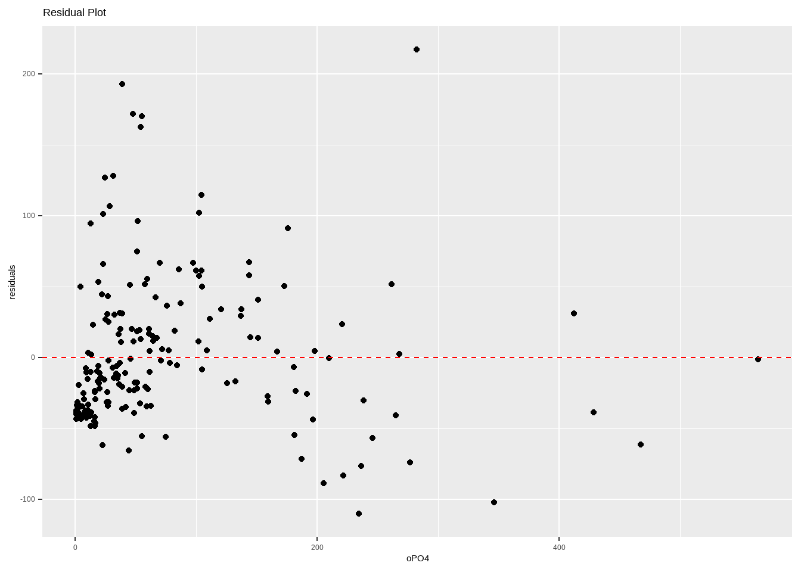
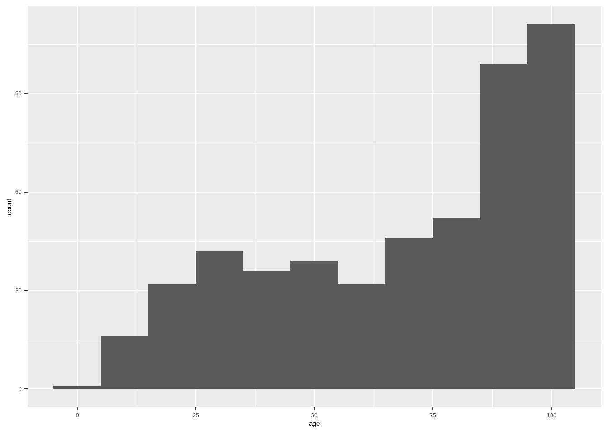

# Running this to see whether the package is installed or not
if (!require(pacman))
installed.packages("pacman")Loading required package: pacmanPractice basic R commands/methods for descriptive data analysis.
# Running this to see whether the package is installed or not
if (!require(pacman))
installed.packages("pacman")Loading required package: pacmanlibrary(pacman)
p_load(DBI, # DBI databases)
dlookr,
here, # Reproducible/ Standard Directories
janitor,
RMySQL, # Utilizing MySQL drivers
tidymodels, # Tidyverse format modeling (eg. lm())
tidyverse, # Data wrangling, manipulation and visualization
qqplotr
)# Checking the working directory and loading the data set
getwd()[1] "C:/Users/ASUS/Desktop/Data Mining/r-python-exercise2/r-python-exercise2-vishalbhashyaam"data <- read_csv(".//data//x.csv")Rows: 4 Columns: 3
── Column specification ────────────────────────────────────────────────────────
Delimiter: ","
chr (1): Name
dbl (2): ID, Age
ℹ Use `spec()` to retrieve the full column specification for this data.
ℹ Specify the column types or set `show_col_types = FALSE` to quiet this message.# How the dataset looks like
data |> glimpse()Rows: 4
Columns: 3
$ ID <dbl> 12345, 12346, 12347, 12348
$ Name <chr> "Amy", "Ana", "June", "May"
$ Age <dbl> 13, 14, 25, 21data <- read_delim(".//data//x.tsv")Rows: 4 Columns: 3
── Column specification ────────────────────────────────────────────────────────
Delimiter: "\t"
chr (1): Name
dbl (2): ID, Age
ℹ Use `spec()` to retrieve the full column specification for this data.
ℹ Specify the column types or set `show_col_types = FALSE` to quiet this message.# Data information
data |>
glimpse()Rows: 4
Columns: 3
$ ID <dbl> 12345, 12346, 12347, 12348
$ Name <chr> "Amy", "Ana", "June", "May"
$ Age <dbl> 13, 14, NA, 21Connecting to a database in MYSQL
drv <- dbDriver("MySQL") # Obtaining drivers for MySQLdplyr insteadif(!require(dbplyr))
install.packages("dbplyr") # installing libraryLoading required package: dbplyr
Attaching package: 'dbplyr'The following objects are masked from 'package:dplyr':
ident, sql#con <- src_mysql("etcsite_charaparser", user = "termsuser", password = #"termspassword", host = "localhost")The wide format uses the values (Math, English) of variable Subjects as variables.
wide <- read_delim(".//data//wide.txt" , delim=" ", skip=1, col_names= c("Name", "Maths", "English", "Degree_Year"))Rows: 3 Columns: 4
── Column specification ────────────────────────────────────────────────────────
Delimiter: " "
chr (2): Name, Degree_Year
dbl (2): Maths, English
ℹ Use `spec()` to retrieve the full column specification for this data.
ℹ Specify the column types or set `show_col_types = FALSE` to quiet this message.# Retrieving full column specification
spec(wide)cols(
Name = col_character(),
Maths = col_double(),
English = col_double(),
Degree_Year = col_character()
)cols_condense(wide)Warning: Unknown or uninitialised column: `cols`.Warning in max(counts): no non-missing arguments to max; returning -InfWarning: Unknown or uninitialised column: `cols`.
Unknown or uninitialised column: `cols`.# A tibble: 3 × 4
Name Maths English Degree_Year
<chr> <dbl> <dbl> <chr>
1 Anna 86 90 Bio_2014
2 John 43 75 Math_2013
3 Cath 80 82 Bio_2012 The long format should have Name, Subject, and Grade as variables (i.e., columns).
long <- wide |>
pivot_longer(cols= c(Maths,English),
names_to= "Subject",
values_to="Grade")
long# A tibble: 6 × 4
Name Degree_Year Subject Grade
<chr> <chr> <chr> <dbl>
1 Anna Bio_2014 Maths 86
2 Anna Bio_2014 English 90
3 John Math_2013 Maths 43
4 John Math_2013 English 75
5 Cath Bio_2012 Maths 80
6 Cath Bio_2012 English 82spread()wide <- long %>%
pivot_wider(names_from= Subject, values_from= Grade)
wide# A tibble: 3 × 4
Name Degree_Year Maths English
<chr> <chr> <dbl> <dbl>
1 Anna Bio_2014 86 90
2 John Math_2013 43 75
3 Cath Bio_2012 80 82Split Degree_Year to Degree and Year
clean <- long %>%
separate(Degree_Year, c("Degree", "Year"), sep="_")
clean# A tibble: 6 × 5
Name Degree Year Subject Grade
<chr> <chr> <chr> <chr> <dbl>
1 Anna Bio 2014 Maths 86
2 Anna Bio 2014 English 90
3 John Math 2013 Maths 43
4 John Math 2013 English 75
5 Cath Bio 2012 Maths 80
6 Cath Bio 2012 English 82if(!require(lubridate))
install.packages("lubridate")
library(lubridate)Convert dates of variance formats into one format:
mixed.dates <- c(20140123, "2019-12-12","2009/5/1","measured on 2002-12-06", "2018-7/16")
clean.dates <- ymd(mixed.dates)# convert to year-month-day format
clean.dates[1] "2014-01-23" "2019-12-12" "2009-05-01" "2002-12-06" "2018-07-16"Extract day, week, month, year info from dates :
data.frame(Dates= clean.dates, WeekDay = wday(clean.dates), nWeekDay= wday(clean.dates, label= TRUE),Year=year(clean.dates), Month=month(clean.dates, label= TRUE)) Dates WeekDay nWeekDay Year Month
1 2014-01-23 5 Thu 2014 Jan
2 2019-12-12 5 Thu 2019 Dec
3 2009-05-01 6 Fri 2009 May
4 2002-12-06 6 Fri 2002 Dec
5 2018-07-16 2 Mon 2018 Juldate.time <- ymd_hms("20190203 04:00:03", tz= "Asia/Calcutta")with_tz(date.time, tz="America/Phoenix")[1] "2019-02-02 15:30:03 MST"force_tz(date.time,"Turkey")[1] "2019-02-03 04:00:03 +03"OlsonNames() [1] "Africa/Abidjan" "Africa/Accra"
[3] "Africa/Addis_Ababa" "Africa/Algiers"
[5] "Africa/Asmara" "Africa/Asmera"
[7] "Africa/Bamako" "Africa/Bangui"
[9] "Africa/Banjul" "Africa/Bissau"
[11] "Africa/Blantyre" "Africa/Brazzaville"
[13] "Africa/Bujumbura" "Africa/Cairo"
[15] "Africa/Casablanca" "Africa/Ceuta"
[17] "Africa/Conakry" "Africa/Dakar"
[19] "Africa/Dar_es_Salaam" "Africa/Djibouti"
[21] "Africa/Douala" "Africa/El_Aaiun"
[23] "Africa/Freetown" "Africa/Gaborone"
[25] "Africa/Harare" "Africa/Johannesburg"
[27] "Africa/Juba" "Africa/Kampala"
[29] "Africa/Khartoum" "Africa/Kigali"
[31] "Africa/Kinshasa" "Africa/Lagos"
[33] "Africa/Libreville" "Africa/Lome"
[35] "Africa/Luanda" "Africa/Lubumbashi"
[37] "Africa/Lusaka" "Africa/Malabo"
[39] "Africa/Maputo" "Africa/Maseru"
[41] "Africa/Mbabane" "Africa/Mogadishu"
[43] "Africa/Monrovia" "Africa/Nairobi"
[45] "Africa/Ndjamena" "Africa/Niamey"
[47] "Africa/Nouakchott" "Africa/Ouagadougou"
[49] "Africa/Porto-Novo" "Africa/Sao_Tome"
[51] "Africa/Timbuktu" "Africa/Tripoli"
[53] "Africa/Tunis" "Africa/Windhoek"
[55] "America/Adak" "America/Anchorage"
[57] "America/Anguilla" "America/Antigua"
[59] "America/Araguaina" "America/Argentina/Buenos_Aires"
[61] "America/Argentina/Catamarca" "America/Argentina/ComodRivadavia"
[63] "America/Argentina/Cordoba" "America/Argentina/Jujuy"
[65] "America/Argentina/La_Rioja" "America/Argentina/Mendoza"
[67] "America/Argentina/Rio_Gallegos" "America/Argentina/Salta"
[69] "America/Argentina/San_Juan" "America/Argentina/San_Luis"
[71] "America/Argentina/Tucuman" "America/Argentina/Ushuaia"
[73] "America/Aruba" "America/Asuncion"
[75] "America/Atikokan" "America/Atka"
[77] "America/Bahia" "America/Bahia_Banderas"
[79] "America/Barbados" "America/Belem"
[81] "America/Belize" "America/Blanc-Sablon"
[83] "America/Boa_Vista" "America/Bogota"
[85] "America/Boise" "America/Buenos_Aires"
[87] "America/Cambridge_Bay" "America/Campo_Grande"
[89] "America/Cancun" "America/Caracas"
[91] "America/Catamarca" "America/Cayenne"
[93] "America/Cayman" "America/Chicago"
[95] "America/Chihuahua" "America/Ciudad_Juarez"
[97] "America/Coral_Harbour" "America/Cordoba"
[99] "America/Costa_Rica" "America/Creston"
[101] "America/Cuiaba" "America/Curacao"
[103] "America/Danmarkshavn" "America/Dawson"
[105] "America/Dawson_Creek" "America/Denver"
[107] "America/Detroit" "America/Dominica"
[109] "America/Edmonton" "America/Eirunepe"
[111] "America/El_Salvador" "America/Ensenada"
[113] "America/Fort_Nelson" "America/Fort_Wayne"
[115] "America/Fortaleza" "America/Glace_Bay"
[117] "America/Godthab" "America/Goose_Bay"
[119] "America/Grand_Turk" "America/Grenada"
[121] "America/Guadeloupe" "America/Guatemala"
[123] "America/Guayaquil" "America/Guyana"
[125] "America/Halifax" "America/Havana"
[127] "America/Hermosillo" "America/Indiana/Indianapolis"
[129] "America/Indiana/Knox" "America/Indiana/Marengo"
[131] "America/Indiana/Petersburg" "America/Indiana/Tell_City"
[133] "America/Indiana/Vevay" "America/Indiana/Vincennes"
[135] "America/Indiana/Winamac" "America/Indianapolis"
[137] "America/Inuvik" "America/Iqaluit"
[139] "America/Jamaica" "America/Jujuy"
[141] "America/Juneau" "America/Kentucky/Louisville"
[143] "America/Kentucky/Monticello" "America/Knox_IN"
[145] "America/Kralendijk" "America/La_Paz"
[147] "America/Lima" "America/Los_Angeles"
[149] "America/Louisville" "America/Lower_Princes"
[151] "America/Maceio" "America/Managua"
[153] "America/Manaus" "America/Marigot"
[155] "America/Martinique" "America/Matamoros"
[157] "America/Mazatlan" "America/Mendoza"
[159] "America/Menominee" "America/Merida"
[161] "America/Metlakatla" "America/Mexico_City"
[163] "America/Miquelon" "America/Moncton"
[165] "America/Monterrey" "America/Montevideo"
[167] "America/Montreal" "America/Montserrat"
[169] "America/Nassau" "America/New_York"
[171] "America/Nipigon" "America/Nome"
[173] "America/Noronha" "America/North_Dakota/Beulah"
[175] "America/North_Dakota/Center" "America/North_Dakota/New_Salem"
[177] "America/Nuuk" "America/Ojinaga"
[179] "America/Panama" "America/Pangnirtung"
[181] "America/Paramaribo" "America/Phoenix"
[183] "America/Port-au-Prince" "America/Port_of_Spain"
[185] "America/Porto_Acre" "America/Porto_Velho"
[187] "America/Puerto_Rico" "America/Punta_Arenas"
[189] "America/Rainy_River" "America/Rankin_Inlet"
[191] "America/Recife" "America/Regina"
[193] "America/Resolute" "America/Rio_Branco"
[195] "America/Rosario" "America/Santa_Isabel"
[197] "America/Santarem" "America/Santiago"
[199] "America/Santo_Domingo" "America/Sao_Paulo"
[201] "America/Scoresbysund" "America/Shiprock"
[203] "America/Sitka" "America/St_Barthelemy"
[205] "America/St_Johns" "America/St_Kitts"
[207] "America/St_Lucia" "America/St_Thomas"
[209] "America/St_Vincent" "America/Swift_Current"
[211] "America/Tegucigalpa" "America/Thule"
[213] "America/Thunder_Bay" "America/Tijuana"
[215] "America/Toronto" "America/Tortola"
[217] "America/Vancouver" "America/Virgin"
[219] "America/Whitehorse" "America/Winnipeg"
[221] "America/Yakutat" "America/Yellowknife"
[223] "Antarctica/Casey" "Antarctica/Davis"
[225] "Antarctica/DumontDUrville" "Antarctica/Macquarie"
[227] "Antarctica/Mawson" "Antarctica/McMurdo"
[229] "Antarctica/Palmer" "Antarctica/Rothera"
[231] "Antarctica/South_Pole" "Antarctica/Syowa"
[233] "Antarctica/Troll" "Antarctica/Vostok"
[235] "Arctic/Longyearbyen" "Asia/Aden"
[237] "Asia/Almaty" "Asia/Amman"
[239] "Asia/Anadyr" "Asia/Aqtau"
[241] "Asia/Aqtobe" "Asia/Ashgabat"
[243] "Asia/Ashkhabad" "Asia/Atyrau"
[245] "Asia/Baghdad" "Asia/Bahrain"
[247] "Asia/Baku" "Asia/Bangkok"
[249] "Asia/Barnaul" "Asia/Beirut"
[251] "Asia/Bishkek" "Asia/Brunei"
[253] "Asia/Calcutta" "Asia/Chita"
[255] "Asia/Choibalsan" "Asia/Chongqing"
[257] "Asia/Chungking" "Asia/Colombo"
[259] "Asia/Dacca" "Asia/Damascus"
[261] "Asia/Dhaka" "Asia/Dili"
[263] "Asia/Dubai" "Asia/Dushanbe"
[265] "Asia/Famagusta" "Asia/Gaza"
[267] "Asia/Harbin" "Asia/Hebron"
[269] "Asia/Ho_Chi_Minh" "Asia/Hong_Kong"
[271] "Asia/Hovd" "Asia/Irkutsk"
[273] "Asia/Istanbul" "Asia/Jakarta"
[275] "Asia/Jayapura" "Asia/Jerusalem"
[277] "Asia/Kabul" "Asia/Kamchatka"
[279] "Asia/Karachi" "Asia/Kashgar"
[281] "Asia/Kathmandu" "Asia/Katmandu"
[283] "Asia/Khandyga" "Asia/Kolkata"
[285] "Asia/Krasnoyarsk" "Asia/Kuala_Lumpur"
[287] "Asia/Kuching" "Asia/Kuwait"
[289] "Asia/Macao" "Asia/Macau"
[291] "Asia/Magadan" "Asia/Makassar"
[293] "Asia/Manila" "Asia/Muscat"
[295] "Asia/Nicosia" "Asia/Novokuznetsk"
[297] "Asia/Novosibirsk" "Asia/Omsk"
[299] "Asia/Oral" "Asia/Phnom_Penh"
[301] "Asia/Pontianak" "Asia/Pyongyang"
[303] "Asia/Qatar" "Asia/Qostanay"
[305] "Asia/Qyzylorda" "Asia/Rangoon"
[307] "Asia/Riyadh" "Asia/Saigon"
[309] "Asia/Sakhalin" "Asia/Samarkand"
[311] "Asia/Seoul" "Asia/Shanghai"
[313] "Asia/Singapore" "Asia/Srednekolymsk"
[315] "Asia/Taipei" "Asia/Tashkent"
[317] "Asia/Tbilisi" "Asia/Tehran"
[319] "Asia/Tel_Aviv" "Asia/Thimbu"
[321] "Asia/Thimphu" "Asia/Tokyo"
[323] "Asia/Tomsk" "Asia/Ujung_Pandang"
[325] "Asia/Ulaanbaatar" "Asia/Ulan_Bator"
[327] "Asia/Urumqi" "Asia/Ust-Nera"
[329] "Asia/Vientiane" "Asia/Vladivostok"
[331] "Asia/Yakutsk" "Asia/Yangon"
[333] "Asia/Yekaterinburg" "Asia/Yerevan"
[335] "Atlantic/Azores" "Atlantic/Bermuda"
[337] "Atlantic/Canary" "Atlantic/Cape_Verde"
[339] "Atlantic/Faeroe" "Atlantic/Faroe"
[341] "Atlantic/Jan_Mayen" "Atlantic/Madeira"
[343] "Atlantic/Reykjavik" "Atlantic/South_Georgia"
[345] "Atlantic/St_Helena" "Atlantic/Stanley"
[347] "Australia/ACT" "Australia/Adelaide"
[349] "Australia/Brisbane" "Australia/Broken_Hill"
[351] "Australia/Canberra" "Australia/Currie"
[353] "Australia/Darwin" "Australia/Eucla"
[355] "Australia/Hobart" "Australia/LHI"
[357] "Australia/Lindeman" "Australia/Lord_Howe"
[359] "Australia/Melbourne" "Australia/North"
[361] "Australia/NSW" "Australia/Perth"
[363] "Australia/Queensland" "Australia/South"
[365] "Australia/Sydney" "Australia/Tasmania"
[367] "Australia/Victoria" "Australia/West"
[369] "Australia/Yancowinna" "Brazil/Acre"
[371] "Brazil/DeNoronha" "Brazil/East"
[373] "Brazil/West" "Canada/Atlantic"
[375] "Canada/Central" "Canada/Eastern"
[377] "Canada/Mountain" "Canada/Newfoundland"
[379] "Canada/Pacific" "Canada/Saskatchewan"
[381] "Canada/Yukon" "CET"
[383] "Chile/Continental" "Chile/EasterIsland"
[385] "CST6CDT" "Cuba"
[387] "EET" "Egypt"
[389] "Eire" "EST"
[391] "EST5EDT" "Etc/GMT"
[393] "Etc/GMT-0" "Etc/GMT-1"
[395] "Etc/GMT-10" "Etc/GMT-11"
[397] "Etc/GMT-12" "Etc/GMT-13"
[399] "Etc/GMT-14" "Etc/GMT-2"
[401] "Etc/GMT-3" "Etc/GMT-4"
[403] "Etc/GMT-5" "Etc/GMT-6"
[405] "Etc/GMT-7" "Etc/GMT-8"
[407] "Etc/GMT-9" "Etc/GMT+0"
[409] "Etc/GMT+1" "Etc/GMT+10"
[411] "Etc/GMT+11" "Etc/GMT+12"
[413] "Etc/GMT+2" "Etc/GMT+3"
[415] "Etc/GMT+4" "Etc/GMT+5"
[417] "Etc/GMT+6" "Etc/GMT+7"
[419] "Etc/GMT+8" "Etc/GMT+9"
[421] "Etc/GMT0" "Etc/Greenwich"
[423] "Etc/UCT" "Etc/Universal"
[425] "Etc/UTC" "Etc/Zulu"
[427] "Europe/Amsterdam" "Europe/Andorra"
[429] "Europe/Astrakhan" "Europe/Athens"
[431] "Europe/Belfast" "Europe/Belgrade"
[433] "Europe/Berlin" "Europe/Bratislava"
[435] "Europe/Brussels" "Europe/Bucharest"
[437] "Europe/Budapest" "Europe/Busingen"
[439] "Europe/Chisinau" "Europe/Copenhagen"
[441] "Europe/Dublin" "Europe/Gibraltar"
[443] "Europe/Guernsey" "Europe/Helsinki"
[445] "Europe/Isle_of_Man" "Europe/Istanbul"
[447] "Europe/Jersey" "Europe/Kaliningrad"
[449] "Europe/Kiev" "Europe/Kirov"
[451] "Europe/Kyiv" "Europe/Lisbon"
[453] "Europe/Ljubljana" "Europe/London"
[455] "Europe/Luxembourg" "Europe/Madrid"
[457] "Europe/Malta" "Europe/Mariehamn"
[459] "Europe/Minsk" "Europe/Monaco"
[461] "Europe/Moscow" "Europe/Nicosia"
[463] "Europe/Oslo" "Europe/Paris"
[465] "Europe/Podgorica" "Europe/Prague"
[467] "Europe/Riga" "Europe/Rome"
[469] "Europe/Samara" "Europe/San_Marino"
[471] "Europe/Sarajevo" "Europe/Saratov"
[473] "Europe/Simferopol" "Europe/Skopje"
[475] "Europe/Sofia" "Europe/Stockholm"
[477] "Europe/Tallinn" "Europe/Tirane"
[479] "Europe/Tiraspol" "Europe/Ulyanovsk"
[481] "Europe/Uzhgorod" "Europe/Vaduz"
[483] "Europe/Vatican" "Europe/Vienna"
[485] "Europe/Vilnius" "Europe/Volgograd"
[487] "Europe/Warsaw" "Europe/Zagreb"
[489] "Europe/Zaporozhye" "Europe/Zurich"
[491] "GB" "GB-Eire"
[493] "GMT" "GMT-0"
[495] "GMT+0" "GMT0"
[497] "Greenwich" "Hongkong"
[499] "HST" "Iceland"
[501] "Indian/Antananarivo" "Indian/Chagos"
[503] "Indian/Christmas" "Indian/Cocos"
[505] "Indian/Comoro" "Indian/Kerguelen"
[507] "Indian/Mahe" "Indian/Maldives"
[509] "Indian/Mauritius" "Indian/Mayotte"
[511] "Indian/Reunion" "Iran"
[513] "Israel" "Jamaica"
[515] "Japan" "Kwajalein"
[517] "Libya" "MET"
[519] "Mexico/BajaNorte" "Mexico/BajaSur"
[521] "Mexico/General" "MST"
[523] "MST7MDT" "Navajo"
[525] "NZ" "NZ-CHAT"
[527] "Pacific/Apia" "Pacific/Auckland"
[529] "Pacific/Bougainville" "Pacific/Chatham"
[531] "Pacific/Chuuk" "Pacific/Easter"
[533] "Pacific/Efate" "Pacific/Enderbury"
[535] "Pacific/Fakaofo" "Pacific/Fiji"
[537] "Pacific/Funafuti" "Pacific/Galapagos"
[539] "Pacific/Gambier" "Pacific/Guadalcanal"
[541] "Pacific/Guam" "Pacific/Honolulu"
[543] "Pacific/Johnston" "Pacific/Kanton"
[545] "Pacific/Kiritimati" "Pacific/Kosrae"
[547] "Pacific/Kwajalein" "Pacific/Majuro"
[549] "Pacific/Marquesas" "Pacific/Midway"
[551] "Pacific/Nauru" "Pacific/Niue"
[553] "Pacific/Norfolk" "Pacific/Noumea"
[555] "Pacific/Pago_Pago" "Pacific/Palau"
[557] "Pacific/Pitcairn" "Pacific/Pohnpei"
[559] "Pacific/Ponape" "Pacific/Port_Moresby"
[561] "Pacific/Rarotonga" "Pacific/Saipan"
[563] "Pacific/Samoa" "Pacific/Tahiti"
[565] "Pacific/Tarawa" "Pacific/Tongatapu"
[567] "Pacific/Truk" "Pacific/Wake"
[569] "Pacific/Wallis" "Pacific/Yap"
[571] "Poland" "Portugal"
[573] "PRC" "PST8PDT"
[575] "ROC" "ROK"
[577] "Singapore" "Turkey"
[579] "UCT" "Universal"
[581] "US/Alaska" "US/Aleutian"
[583] "US/Arizona" "US/Central"
[585] "US/East-Indiana" "US/Eastern"
[587] "US/Hawaii" "US/Indiana-Starke"
[589] "US/Michigan" "US/Mountain"
[591] "US/Pacific" "US/Samoa"
[593] "UTC" "W-SU"
[595] "WET" "Zulu"
attr(,"Version")
[1] "2023c"Common needs: stringr package
Advanced needs: stringi package
library(dplyr)
library(stringr)
library(readr)Fetching data from a URL, forming the URL using string functions:
uci.repo <-"http://archive.ics.uci.edu/ml/machine-learning-databases/"
dataset <- "audiology/audiology.standardized"str_c : string concatenation:dataF <- str_c(uci.repo, dataset, ".data")
namesF <- str_c(uci.repo, dataset, ".names")
dataF[1] "http://archive.ics.uci.edu/ml/machine-learning-databases/audiology/audiology.standardized.data"data <- read_csv(url(dataF), col_names =FALSE, na="?")Rows: 200 Columns: 71
── Column specification ────────────────────────────────────────────────────────
Delimiter: ","
chr (11): X2, X4, X5, X6, X8, X59, X60, X64, X66, X70, X71
lgl (60): X1, X3, X7, X9, X10, X11, X12, X13, X14, X15, X16, X17, X18, X19, ...
ℹ Use `spec()` to retrieve the full column specification for this data.
ℹ Specify the column types or set `show_col_types = FALSE` to quiet this message.dim(data)[1] 200 71Read the name file line by line, put the lines in a vector:
lines <- read_lines(url(namesF))
lines |> head()[1] "WARNING: This database should be credited to the original owner whenever"
[2] " used for any publication whatsoever."
[3] ""
[4] "1. Title: Standardized Audiology Database "
[5] ""
[6] "2. Sources:" See the content of lines and see the column names start on line 67, ends on line 135. Then, get column name lines and clean up to get column names:
names <- lines[67:135]
names [1] " age_gt_60:\t\t f, t."
[2] " air():\t\t mild,moderate,severe,normal,profound."
[3] " airBoneGap:\t\t f, t."
[4] " ar_c():\t\t normal,elevated,absent."
[5] " ar_u():\t\t normal,absent,elevated."
[6] " bone():\t\t mild,moderate,normal,unmeasured."
[7] " boneAbnormal:\t f, t."
[8] " bser():\t\t normal,degraded."
[9] " history_buzzing:\t f, t."
[10] " history_dizziness:\t f, t."
[11] " history_fluctuating:\t f, t."
[12] " history_fullness:\t f, t."
[13] " history_heredity:\t f, t."
[14] " history_nausea:\t f, t."
[15] " history_noise:\t f, t."
[16] " history_recruitment:\t f, t."
[17] " history_ringing:\t f, t."
[18] " history_roaring:\t f, t."
[19] " history_vomiting:\t f, t."
[20] " late_wave_poor:\t f, t."
[21] " m_at_2k:\t\t f, t."
[22] " m_cond_lt_1k:\t f, t."
[23] " m_gt_1k:\t\t f, t."
[24] " m_m_gt_2k:\t\t f, t."
[25] " m_m_sn:\t\t f, t."
[26] " m_m_sn_gt_1k:\t f, t."
[27] " m_m_sn_gt_2k:\t f, t."
[28] " m_m_sn_gt_500:\t f, t."
[29] " m_p_sn_gt_2k:\t f, t."
[30] " m_s_gt_500:\t\t f, t."
[31] " m_s_sn:\t\t f, t."
[32] " m_s_sn_gt_1k:\t f, t."
[33] " m_s_sn_gt_2k:\t f, t."
[34] " m_s_sn_gt_3k:\t f, t."
[35] " m_s_sn_gt_4k:\t f, t."
[36] " m_sn_2_3k:\t\t f, t."
[37] " m_sn_gt_1k:\t\t f, t."
[38] " m_sn_gt_2k:\t\t f, t."
[39] " m_sn_gt_3k:\t\t f, t."
[40] " m_sn_gt_4k:\t\t f, t."
[41] " m_sn_gt_500:\t\t f, t."
[42] " m_sn_gt_6k:\t\t f, t."
[43] " m_sn_lt_1k:\t\t f, t. "
[44] " m_sn_lt_2k:\t\t f, t."
[45] " m_sn_lt_3k:\t\t f, t."
[46] " middle_wave_poor:\t f, t."
[47] " mod_gt_4k:\t\t f, t."
[48] " mod_mixed:\t\t f, t."
[49] " mod_s_mixed:\t\t f, t."
[50] " mod_s_sn_gt_500:\t f, t."
[51] " mod_sn:\t\t f, t."
[52] " mod_sn_gt_1k:\t f, t."
[53] " mod_sn_gt_2k:\t f, t."
[54] " mod_sn_gt_3k:\t f, t."
[55] " mod_sn_gt_4k:\t f, t."
[56] " mod_sn_gt_500:\t f, t."
[57] " notch_4k:\t\t f, t."
[58] " notch_at_4k:\t\t f, t."
[59] " o_ar_c():\t\t normal,elevated,absent."
[60] " o_ar_u():\t\t normal,absent,elevated."
[61] " s_sn_gt_1k:\t\t f, t."
[62] " s_sn_gt_2k:\t\t f, t."
[63] " s_sn_gt_4k:\t\t f, t."
[64] " speech():\t\t normal,good,very_good,very_poor,poor,unmeasured."
[65] " static_normal:\t f, t."
[66] " tymp():\t\t a,as,b,ad,c."
[67] " viith_nerve_signs: f, t."
[68] " wave_V_delayed:\t f, t."
[69] " waveform_ItoV_prolonged: f, t." A name line consist two parts: One with valid values like the value before : which is the name.
names <- str_split_fixed(names, ":",2) # split on regular expression pattern ":", this function returns a matrix
names [,1]
[1,] " age_gt_60"
[2,] " air()"
[3,] " airBoneGap"
[4,] " ar_c()"
[5,] " ar_u()"
[6,] " bone()"
[7,] " boneAbnormal"
[8,] " bser()"
[9,] " history_buzzing"
[10,] " history_dizziness"
[11,] " history_fluctuating"
[12,] " history_fullness"
[13,] " history_heredity"
[14,] " history_nausea"
[15,] " history_noise"
[16,] " history_recruitment"
[17,] " history_ringing"
[18,] " history_roaring"
[19,] " history_vomiting"
[20,] " late_wave_poor"
[21,] " m_at_2k"
[22,] " m_cond_lt_1k"
[23,] " m_gt_1k"
[24,] " m_m_gt_2k"
[25,] " m_m_sn"
[26,] " m_m_sn_gt_1k"
[27,] " m_m_sn_gt_2k"
[28,] " m_m_sn_gt_500"
[29,] " m_p_sn_gt_2k"
[30,] " m_s_gt_500"
[31,] " m_s_sn"
[32,] " m_s_sn_gt_1k"
[33,] " m_s_sn_gt_2k"
[34,] " m_s_sn_gt_3k"
[35,] " m_s_sn_gt_4k"
[36,] " m_sn_2_3k"
[37,] " m_sn_gt_1k"
[38,] " m_sn_gt_2k"
[39,] " m_sn_gt_3k"
[40,] " m_sn_gt_4k"
[41,] " m_sn_gt_500"
[42,] " m_sn_gt_6k"
[43,] " m_sn_lt_1k"
[44,] " m_sn_lt_2k"
[45,] " m_sn_lt_3k"
[46,] " middle_wave_poor"
[47,] " mod_gt_4k"
[48,] " mod_mixed"
[49,] " mod_s_mixed"
[50,] " mod_s_sn_gt_500"
[51,] " mod_sn"
[52,] " mod_sn_gt_1k"
[53,] " mod_sn_gt_2k"
[54,] " mod_sn_gt_3k"
[55,] " mod_sn_gt_4k"
[56,] " mod_sn_gt_500"
[57,] " notch_4k"
[58,] " notch_at_4k"
[59,] " o_ar_c()"
[60,] " o_ar_u()"
[61,] " s_sn_gt_1k"
[62,] " s_sn_gt_2k"
[63,] " s_sn_gt_4k"
[64,] " speech()"
[65,] " static_normal"
[66,] " tymp()"
[67,] " viith_nerve_signs"
[68,] " wave_V_delayed"
[69,] " waveform_ItoV_prolonged"
[,2]
[1,] "\t\t f, t."
[2,] "\t\t mild,moderate,severe,normal,profound."
[3,] "\t\t f, t."
[4,] "\t\t normal,elevated,absent."
[5,] "\t\t normal,absent,elevated."
[6,] "\t\t mild,moderate,normal,unmeasured."
[7,] "\t f, t."
[8,] "\t\t normal,degraded."
[9,] "\t f, t."
[10,] "\t f, t."
[11,] "\t f, t."
[12,] "\t f, t."
[13,] "\t f, t."
[14,] "\t f, t."
[15,] "\t f, t."
[16,] "\t f, t."
[17,] "\t f, t."
[18,] "\t f, t."
[19,] "\t f, t."
[20,] "\t f, t."
[21,] "\t\t f, t."
[22,] "\t f, t."
[23,] "\t\t f, t."
[24,] "\t\t f, t."
[25,] "\t\t f, t."
[26,] "\t f, t."
[27,] "\t f, t."
[28,] "\t f, t."
[29,] "\t f, t."
[30,] "\t\t f, t."
[31,] "\t\t f, t."
[32,] "\t f, t."
[33,] "\t f, t."
[34,] "\t f, t."
[35,] "\t f, t."
[36,] "\t\t f, t."
[37,] "\t\t f, t."
[38,] "\t\t f, t."
[39,] "\t\t f, t."
[40,] "\t\t f, t."
[41,] "\t\t f, t."
[42,] "\t\t f, t."
[43,] "\t\t f, t. "
[44,] "\t\t f, t."
[45,] "\t\t f, t."
[46,] "\t f, t."
[47,] "\t\t f, t."
[48,] "\t\t f, t."
[49,] "\t\t f, t."
[50,] "\t f, t."
[51,] "\t\t f, t."
[52,] "\t f, t."
[53,] "\t f, t."
[54,] "\t f, t."
[55,] "\t f, t."
[56,] "\t f, t."
[57,] "\t\t f, t."
[58,] "\t\t f, t."
[59,] "\t\t normal,elevated,absent."
[60,] "\t\t normal,absent,elevated."
[61,] "\t\t f, t."
[62,] "\t\t f, t."
[63,] "\t\t f, t."
[64,] "\t\t normal,good,very_good,very_poor,poor,unmeasured."
[65,] "\t f, t."
[66,] "\t\t a,as,b,ad,c."
[67,] " f, t."
[68,] "\t f, t."
[69,] " f, t." Picking the first Column, which contains the name:
names <- names[,1]
names [1] " age_gt_60" " air()"
[3] " airBoneGap" " ar_c()"
[5] " ar_u()" " bone()"
[7] " boneAbnormal" " bser()"
[9] " history_buzzing" " history_dizziness"
[11] " history_fluctuating" " history_fullness"
[13] " history_heredity" " history_nausea"
[15] " history_noise" " history_recruitment"
[17] " history_ringing" " history_roaring"
[19] " history_vomiting" " late_wave_poor"
[21] " m_at_2k" " m_cond_lt_1k"
[23] " m_gt_1k" " m_m_gt_2k"
[25] " m_m_sn" " m_m_sn_gt_1k"
[27] " m_m_sn_gt_2k" " m_m_sn_gt_500"
[29] " m_p_sn_gt_2k" " m_s_gt_500"
[31] " m_s_sn" " m_s_sn_gt_1k"
[33] " m_s_sn_gt_2k" " m_s_sn_gt_3k"
[35] " m_s_sn_gt_4k" " m_sn_2_3k"
[37] " m_sn_gt_1k" " m_sn_gt_2k"
[39] " m_sn_gt_3k" " m_sn_gt_4k"
[41] " m_sn_gt_500" " m_sn_gt_6k"
[43] " m_sn_lt_1k" " m_sn_lt_2k"
[45] " m_sn_lt_3k" " middle_wave_poor"
[47] " mod_gt_4k" " mod_mixed"
[49] " mod_s_mixed" " mod_s_sn_gt_500"
[51] " mod_sn" " mod_sn_gt_1k"
[53] " mod_sn_gt_2k" " mod_sn_gt_3k"
[55] " mod_sn_gt_4k" " mod_sn_gt_500"
[57] " notch_4k" " notch_at_4k"
[59] " o_ar_c()" " o_ar_u()"
[61] " s_sn_gt_1k" " s_sn_gt_2k"
[63] " s_sn_gt_4k" " speech()"
[65] " static_normal" " tymp()"
[67] " viith_nerve_signs" " wave_V_delayed"
[69] " waveform_ItoV_prolonged"Cleaning up the names: trim, spaces, remove () :
names <- str_trim(names) |> str_replace_all("\\(|\\)", "") # we use a pipe, and another reg exp "\\(|\\)", \\ is the escape.
names [1] "age_gt_60" "air"
[3] "airBoneGap" "ar_c"
[5] "ar_u" "bone"
[7] "boneAbnormal" "bser"
[9] "history_buzzing" "history_dizziness"
[11] "history_fluctuating" "history_fullness"
[13] "history_heredity" "history_nausea"
[15] "history_noise" "history_recruitment"
[17] "history_ringing" "history_roaring"
[19] "history_vomiting" "late_wave_poor"
[21] "m_at_2k" "m_cond_lt_1k"
[23] "m_gt_1k" "m_m_gt_2k"
[25] "m_m_sn" "m_m_sn_gt_1k"
[27] "m_m_sn_gt_2k" "m_m_sn_gt_500"
[29] "m_p_sn_gt_2k" "m_s_gt_500"
[31] "m_s_sn" "m_s_sn_gt_1k"
[33] "m_s_sn_gt_2k" "m_s_sn_gt_3k"
[35] "m_s_sn_gt_4k" "m_sn_2_3k"
[37] "m_sn_gt_1k" "m_sn_gt_2k"
[39] "m_sn_gt_3k" "m_sn_gt_4k"
[41] "m_sn_gt_500" "m_sn_gt_6k"
[43] "m_sn_lt_1k" "m_sn_lt_2k"
[45] "m_sn_lt_3k" "middle_wave_poor"
[47] "mod_gt_4k" "mod_mixed"
[49] "mod_s_mixed" "mod_s_sn_gt_500"
[51] "mod_sn" "mod_sn_gt_1k"
[53] "mod_sn_gt_2k" "mod_sn_gt_3k"
[55] "mod_sn_gt_4k" "mod_sn_gt_500"
[57] "notch_4k" "notch_at_4k"
[59] "o_ar_c" "o_ar_u"
[61] "s_sn_gt_1k" "s_sn_gt_2k"
[63] "s_sn_gt_4k" "speech"
[65] "static_normal" "tymp"
[67] "viith_nerve_signs" "wave_V_delayed"
[69] "waveform_ItoV_prolonged"Put the columns to the data :
Last two columns in the data are identifier so we use the first 69 columns.
colnames(data)[1:69] <- names
data# A tibble: 200 × 71
age_gt_60 air airBoneGap ar_c ar_u bone boneAbnormal bser
<lgl> <chr> <lgl> <chr> <chr> <chr> <lgl> <chr>
1 FALSE mild FALSE normal normal <NA> TRUE <NA>
2 FALSE moderate FALSE normal normal <NA> TRUE <NA>
3 TRUE mild TRUE <NA> absent mild TRUE <NA>
4 TRUE mild TRUE <NA> absent mild FALSE <NA>
5 TRUE mild FALSE normal normal mild TRUE <NA>
6 TRUE mild FALSE normal normal mild TRUE <NA>
7 FALSE mild FALSE normal normal mild TRUE <NA>
8 FALSE mild FALSE normal normal mild TRUE <NA>
9 FALSE severe FALSE <NA> <NA> <NA> TRUE <NA>
10 TRUE mild FALSE elevated absent mild TRUE <NA>
# ℹ 190 more rows
# ℹ 63 more variables: history_buzzing <lgl>, history_dizziness <lgl>,
# history_fluctuating <lgl>, history_fullness <lgl>, history_heredity <lgl>,
# history_nausea <lgl>, history_noise <lgl>, history_recruitment <lgl>,
# history_ringing <lgl>, history_roaring <lgl>, history_vomiting <lgl>,
# late_wave_poor <lgl>, m_at_2k <lgl>, m_cond_lt_1k <lgl>, m_gt_1k <lgl>,
# m_m_gt_2k <lgl>, m_m_sn <lgl>, m_m_sn_gt_1k <lgl>, m_m_sn_gt_2k <lgl>, …Renaming the last two columns:
colnames(data)[70:71] <- c("id", "class")
(data[70:71])# A tibble: 200 × 2
id class
<chr> <chr>
1 p1 cochlear_unknown
2 p2 cochlear_unknown
3 p3 mixed_cochlear_age_fixation
4 p4 mixed_cochlear_age_otitis_media
5 p5 cochlear_age
6 p6 cochlear_age
7 p7 cochlear_unknown
8 p8 cochlear_unknown
9 p9 cochlear_unknown
10 p10 cochlear_age
# ℹ 190 more rows(data)# A tibble: 200 × 71
age_gt_60 air airBoneGap ar_c ar_u bone boneAbnormal bser
<lgl> <chr> <lgl> <chr> <chr> <chr> <lgl> <chr>
1 FALSE mild FALSE normal normal <NA> TRUE <NA>
2 FALSE moderate FALSE normal normal <NA> TRUE <NA>
3 TRUE mild TRUE <NA> absent mild TRUE <NA>
4 TRUE mild TRUE <NA> absent mild FALSE <NA>
5 TRUE mild FALSE normal normal mild TRUE <NA>
6 TRUE mild FALSE normal normal mild TRUE <NA>
7 FALSE mild FALSE normal normal mild TRUE <NA>
8 FALSE mild FALSE normal normal mild TRUE <NA>
9 FALSE severe FALSE <NA> <NA> <NA> TRUE <NA>
10 TRUE mild FALSE elevated absent mild TRUE <NA>
# ℹ 190 more rows
# ℹ 63 more variables: history_buzzing <lgl>, history_dizziness <lgl>,
# history_fluctuating <lgl>, history_fullness <lgl>, history_heredity <lgl>,
# history_nausea <lgl>, history_noise <lgl>, history_recruitment <lgl>,
# history_ringing <lgl>, history_roaring <lgl>, history_vomiting <lgl>,
# late_wave_poor <lgl>, m_at_2k <lgl>, m_cond_lt_1k <lgl>, m_gt_1k <lgl>,
# m_m_gt_2k <lgl>, m_m_sn <lgl>, m_m_sn_gt_1k <lgl>, m_m_sn_gt_2k <lgl>, …Remove observations or columns with many NA’s
library(dplyr)
missing.value.rows <- data |>
filter(!complete.cases(data))
missing.value.rows# A tibble: 196 × 71
age_gt_60 air airBoneGap ar_c ar_u bone boneAbnormal bser
<lgl> <chr> <lgl> <chr> <chr> <chr> <lgl> <chr>
1 FALSE mild FALSE normal normal <NA> TRUE <NA>
2 FALSE moderate FALSE normal normal <NA> TRUE <NA>
3 TRUE mild TRUE <NA> absent mild TRUE <NA>
4 TRUE mild TRUE <NA> absent mild FALSE <NA>
5 TRUE mild FALSE normal normal mild TRUE <NA>
6 TRUE mild FALSE normal normal mild TRUE <NA>
7 FALSE mild FALSE normal normal mild TRUE <NA>
8 FALSE mild FALSE normal normal mild TRUE <NA>
9 FALSE severe FALSE <NA> <NA> <NA> TRUE <NA>
10 TRUE mild FALSE elevated absent mild TRUE <NA>
# ℹ 186 more rows
# ℹ 63 more variables: history_buzzing <lgl>, history_dizziness <lgl>,
# history_fluctuating <lgl>, history_fullness <lgl>, history_heredity <lgl>,
# history_nausea <lgl>, history_noise <lgl>, history_recruitment <lgl>,
# history_ringing <lgl>, history_roaring <lgl>, history_vomiting <lgl>,
# late_wave_poor <lgl>, m_at_2k <lgl>, m_cond_lt_1k <lgl>, m_gt_1k <lgl>,
# m_m_gt_2k <lgl>, m_m_sn <lgl>, m_m_sn_gt_1k <lgl>, m_m_sn_gt_2k <lgl>, …The dataset has 196 rows of NA out of 200,
Applying a function to find NA’s in a row.
data <- data %>%
mutate(na_count = rowSums(is.na(data)))
data# A tibble: 200 × 72
age_gt_60 air airBoneGap ar_c ar_u bone boneAbnormal bser
<lgl> <chr> <lgl> <chr> <chr> <chr> <lgl> <chr>
1 FALSE mild FALSE normal normal <NA> TRUE <NA>
2 FALSE moderate FALSE normal normal <NA> TRUE <NA>
3 TRUE mild TRUE <NA> absent mild TRUE <NA>
4 TRUE mild TRUE <NA> absent mild FALSE <NA>
5 TRUE mild FALSE normal normal mild TRUE <NA>
6 TRUE mild FALSE normal normal mild TRUE <NA>
7 FALSE mild FALSE normal normal mild TRUE <NA>
8 FALSE mild FALSE normal normal mild TRUE <NA>
9 FALSE severe FALSE <NA> <NA> <NA> TRUE <NA>
10 TRUE mild FALSE elevated absent mild TRUE <NA>
# ℹ 190 more rows
# ℹ 64 more variables: history_buzzing <lgl>, history_dizziness <lgl>,
# history_fluctuating <lgl>, history_fullness <lgl>, history_heredity <lgl>,
# history_nausea <lgl>, history_noise <lgl>, history_recruitment <lgl>,
# history_ringing <lgl>, history_roaring <lgl>, history_vomiting <lgl>,
# late_wave_poor <lgl>, m_at_2k <lgl>, m_cond_lt_1k <lgl>, m_gt_1k <lgl>,
# m_m_gt_2k <lgl>, m_m_sn <lgl>, m_m_sn_gt_1k <lgl>, m_m_sn_gt_2k <lgl>, …Maximum missing values in a row is 7, out if 69 dimensions, so they are not too bad.
Examine columns: how many NA’s in each variable/column:
data |>
summarize(across(everything(), ~sum(is.na(.)), .names = "na_{.col}")) %>%
pivot_longer(everything(), names_to= "column_name", values_to = "na_count") %>%
arrange(na_count)# A tibble: 72 × 2
column_name na_count
<chr> <int>
1 na_age_gt_60 0
2 na_air 0
3 na_airBoneGap 0
4 na_boneAbnormal 0
5 na_history_buzzing 0
6 na_history_dizziness 0
7 na_history_fluctuating 0
8 na_history_fullness 0
9 na_history_heredity 0
10 na_history_nausea 0
# ℹ 62 more rowsbser variable has 196 NA’s . if this variable is considered not useful, given some domain knowledge, we can remove it from the data. From View, I can see bser is the 8th column:
data.bser.removed <- data %>%
select(-8) %>%
summarise(across(everything(), ~sum(is.na(.)), .names= "na_{.col}"))
data.bser.removed # A tibble: 1 × 71
na_age_gt_60 na_air na_airBoneGap na_ar_c na_ar_u na_bone na_boneAbnormal
<int> <int> <int> <int> <int> <int> <int>
1 0 0 0 4 3 75 0
# ℹ 64 more variables: na_history_buzzing <int>, na_history_dizziness <int>,
# na_history_fluctuating <int>, na_history_fullness <int>,
# na_history_heredity <int>, na_history_nausea <int>, na_history_noise <int>,
# na_history_recruitment <int>, na_history_ringing <int>,
# na_history_roaring <int>, na_history_vomiting <int>,
# na_late_wave_poor <int>, na_m_at_2k <int>, na_m_cond_lt_1k <int>,
# na_m_gt_1k <int>, na_m_m_gt_2k <int>, na_m_m_sn <int>, …matches function can help find the index of a colname given its name:
data <- data %>%
select(-matches("bser"))
data# A tibble: 200 × 71
age_gt_60 air airBoneGap ar_c ar_u bone boneAbnormal history_buzzing
<lgl> <chr> <lgl> <chr> <chr> <chr> <lgl> <lgl>
1 FALSE mild FALSE normal norm… <NA> TRUE FALSE
2 FALSE moderate FALSE normal norm… <NA> TRUE FALSE
3 TRUE mild TRUE <NA> abse… mild TRUE FALSE
4 TRUE mild TRUE <NA> abse… mild FALSE FALSE
5 TRUE mild FALSE normal norm… mild TRUE FALSE
6 TRUE mild FALSE normal norm… mild TRUE FALSE
7 FALSE mild FALSE normal norm… mild TRUE FALSE
8 FALSE mild FALSE normal norm… mild TRUE FALSE
9 FALSE severe FALSE <NA> <NA> <NA> TRUE FALSE
10 TRUE mild FALSE eleva… abse… mild TRUE FALSE
# ℹ 190 more rows
# ℹ 63 more variables: history_dizziness <lgl>, history_fluctuating <lgl>,
# history_fullness <lgl>, history_heredity <lgl>, history_nausea <lgl>,
# history_noise <lgl>, history_recruitment <lgl>, history_ringing <lgl>,
# history_roaring <lgl>, history_vomiting <lgl>, late_wave_poor <lgl>,
# m_at_2k <lgl>, m_cond_lt_1k <lgl>, m_gt_1k <lgl>, m_m_gt_2k <lgl>,
# m_m_sn <lgl>, m_m_sn_gt_1k <lgl>, m_m_sn_gt_2k <lgl>, …Because R decides the data type based on what is given, sometimes, R’s decision may not be what you meant. In the example below, because of a missing value ?, R makes all other values in a vector ‘character’. Parse_integer can be used to fix this problem.
mistaken<- c(2,3,4,"?")
class(mistaken)[1] "character"fixed <- parse_integer(mistaken, na="?")
fixed [1] 2 3 4 NAclass(fixed)[1] "integer"Should document all modifications :
if(!require(DMwR2))
install.packages("DMwR2")Loading required package: DMwR2Registered S3 method overwritten by 'quantmod':
method from
as.zoo.data.frame zoo data(algae, package= "DMwR2")
algae[48,]# A tibble: 1 × 18
season size speed mxPH mnO2 Cl NO3 NH4 oPO4 PO4 Chla a1 a2
<fct> <fct> <fct> <dbl> <dbl> <dbl> <dbl> <dbl> <dbl> <dbl> <dbl> <dbl> <dbl>
1 winter small low NA 12.6 9 0.23 10 5 6 1.1 35.5 0
# ℹ 5 more variables: a3 <dbl>, a4 <dbl>, a5 <dbl>, a6 <dbl>, a7 <dbl>mxPH is unknown. Shall we fill in with mean, median or something else?
# plot a QQ plot of mxPH
if(!require(car))
install.packages("car")Loading required package: carLoading required package: carData
Attaching package: 'car'The following object is masked from 'package:purrr':
someThe following object is masked from 'package:dplyr':
recodelibrary(car)
ggplot(algae, aes(sample= mxPH)) +
geom_qq_band() +
stat_qq_point() +
stat_qq_line(color = "red", method="identify", intercept= -2, slope=1) +
ggtitle("Normal QQ plot mxPH")Warning in stat_qq_line(color = "red", method = "identify", intercept = -2, :
Ignoring unknown parameters: `method`, `intercept`, and `slope`The line fits the data pretty well so mxPH is normal , use mean to fill the unknown.
algae <- algae |>
mutate(mxPH = ifelse(row_number() == 48, mean(mxPH, na.rm= TRUE),mxPH))
algae# A tibble: 200 × 18
season size speed mxPH mnO2 Cl NO3 NH4 oPO4 PO4 Chla a1
<fct> <fct> <fct> <dbl> <dbl> <dbl> <dbl> <dbl> <dbl> <dbl> <dbl> <dbl>
1 winter small medium 8 9.8 60.8 6.24 578 105 170 50 0
2 spring small medium 8.35 8 57.8 1.29 370 429. 559. 1.3 1.4
3 autumn small medium 8.1 11.4 40.0 5.33 347. 126. 187. 15.6 3.3
4 spring small medium 8.07 4.8 77.4 2.30 98.2 61.2 139. 1.4 3.1
5 autumn small medium 8.06 9 55.4 10.4 234. 58.2 97.6 10.5 9.2
6 winter small high 8.25 13.1 65.8 9.25 430 18.2 56.7 28.4 15.1
7 summer small high 8.15 10.3 73.2 1.54 110 61.2 112. 3.2 2.4
8 autumn small high 8.05 10.6 59.1 4.99 206. 44.7 77.4 6.9 18.2
9 winter small medium 8.7 3.4 22.0 0.886 103. 36.3 71 5.54 25.4
10 winter small high 7.93 9.9 8 1.39 5.8 27.2 46.6 0.8 17
# ℹ 190 more rows
# ℹ 6 more variables: a2 <dbl>, a3 <dbl>, a4 <dbl>, a5 <dbl>, a6 <dbl>,
# a7 <dbl>What about attribute Chla :
ggplot(algae, aes(sample= Chla)) +
geom_qq_band()+
stat_qq_point()+
stat_qq_line(color = "red", method= "identity", intercept = -2, slope =1) +
ggtitle("Normal QQ plot of Chla")Warning in stat_qq_line(color = "red", method = "identity", intercept = -2, :
Ignoring unknown parameters: `method`, `intercept`, and `slope`median(algae$Chla, na.rm = TRUE)[1] 5.475mean(algae$Chla, na.rm= TRUE)[1] 13.9712Mean is not the representative value for Chla . Will use median to fill all missing values in this attribute, instead of doing it one value at a time:
algae <- algae |>
mutate(Chla = if_else(is.na(Chla), median(Chla, na.rm= TRUE), Chla))
algae# A tibble: 200 × 18
season size speed mxPH mnO2 Cl NO3 NH4 oPO4 PO4 Chla a1
<fct> <fct> <fct> <dbl> <dbl> <dbl> <dbl> <dbl> <dbl> <dbl> <dbl> <dbl>
1 winter small medium 8 9.8 60.8 6.24 578 105 170 50 0
2 spring small medium 8.35 8 57.8 1.29 370 429. 559. 1.3 1.4
3 autumn small medium 8.1 11.4 40.0 5.33 347. 126. 187. 15.6 3.3
4 spring small medium 8.07 4.8 77.4 2.30 98.2 61.2 139. 1.4 3.1
5 autumn small medium 8.06 9 55.4 10.4 234. 58.2 97.6 10.5 9.2
6 winter small high 8.25 13.1 65.8 9.25 430 18.2 56.7 28.4 15.1
7 summer small high 8.15 10.3 73.2 1.54 110 61.2 112. 3.2 2.4
8 autumn small high 8.05 10.6 59.1 4.99 206. 44.7 77.4 6.9 18.2
9 winter small medium 8.7 3.4 22.0 0.886 103. 36.3 71 5.54 25.4
10 winter small high 7.93 9.9 8 1.39 5.8 27.2 46.6 0.8 17
# ℹ 190 more rows
# ℹ 6 more variables: a2 <dbl>, a3 <dbl>, a4 <dbl>, a5 <dbl>, a6 <dbl>,
# a7 <dbl>This method is used when two variables are highly correlated. One value of variable A can be used to predict the value of variable B using the linear regression model.
Checking what variables are highly correlated,
algae_numeric <- algae[,4:18] %>%
drop_na() # Removes rows with NA values
cor_matrix <- algae_numeric |> correlate() |> plot()cor_matrix
Finding the linear model between P04 and oP04
algae <- algae %>%
filter(rowSums(is.na(.)) / ncol(.) < 0.2) # this is a method provided that selects the observations with 20% or move values as NAs
m = lm(PO4 ~ oPO4, data = algae)
lm(formula= PO4 ~ oPO4, data = algae)
Call:
lm(formula = PO4 ~ oPO4, data = algae)
Coefficients:
(Intercept) oPO4
42.897 1.293 m |>
summary()
Call:
lm(formula = PO4 ~ oPO4, data = algae)
Residuals:
Min 1Q Median 3Q Max
-110.12 -36.34 -12.68 23.26 216.98
Coefficients:
Estimate Std. Error t value Pr(>|t|)
(Intercept) 42.897 4.808 8.922 3.34e-16 ***
oPO4 1.293 0.041 31.535 < 2e-16 ***
---
Signif. codes: 0 '***' 0.001 '**' 0.01 '*' 0.05 '.' 0.1 ' ' 1
Residual standard error: 52.37 on 195 degrees of freedom
(1 observation deleted due to missingness)
Multiple R-squared: 0.8361, Adjusted R-squared: 0.8352
F-statistic: 994.5 on 1 and 195 DF, p-value: < 2.2e-16m |>
summary() |>
tidy()# A tibble: 2 × 5
term estimate std.error statistic p.value
<chr> <dbl> <dbl> <dbl> <dbl>
1 (Intercept) 42.9 4.81 8.92 3.34e-16
2 oPO4 1.29 0.0410 31.5 1.68e-78tidy is from the tidymodels metapackage. This creates a more readable output for linear regressions
If a good model, coefficients should all be significant (reject Ho coefficience is 0), Adjusted R-squared close to 1 (0.8 is very good).
F-statistics p-value should be less than the significant level (typically 0.05).
While R-squared provides an estimate of the strength of the relationship between your model and the response variable, it does not provide a formal hypothesis test for this relationship.
The F-test determines whether this relationship is statistically significant.
This model is good. We can also assess the fitness of the model with fitted line plot (should show the good fit), residual plot (should show residual being random).
This lm is PO4 = 1.293*oPO4 + 42.897
algae$PO4 [1] 170.000 558.750 187.057 138.700 97.580 56.667 111.750 77.434 71.000
[10] 46.600 20.750 19.000 17.000 15.000 61.600 98.250 50.000 57.833
[19] 61.500 771.600 586.000 18.000 40.000 27.500 11.500 44.136 13.600
[28] NA 45.000 19.000 142.000 304.000 130.750 47.000 23.000 84.460
[37] 3.000 3.000 253.250 255.280 296.000 175.046 344.600 326.857 40.667
[46] 43.500 39.000 6.000 121.000 20.812 49.333 22.900 11.800 11.818
[55] 6.500 1.000 4.000 6.000 11.000 6.000 14.000 6.667 6.750
[64] 7.200 6.000 10.750 2.500 351.600 313.600 279.066 152.333 58.623
[73] 249.250 233.500 215.500 102.333 105.727 111.375 108.000 56.667 60.000
[82] 104.000 69.930 214.000 254.600 169.001 607.167 624.733 303.333 391.750
[91] 265.250 232.833 244.000 218.000 138.500 239.000 235.667 205.875 211.667
[100] 186.500 154.125 183.667 292.625 285.714 201.778 275.143 124.200 141.833
[109] 132.546 17.333 26.000 16.662 102.571 86.997 10.111 18.293 13.200
[118] 432.909 320.400 287.000 262.727 222.286 122.000 127.222 89.625 284.000
[127] 277.333 177.625 72.900 82.444 66.750 173.750 317.000 84.000 213.000
[136] 88.500 115.000 98.143 143.750 197.143 35.200 23.485 200.231 147.833
[145] 276.000 123.333 75.207 116.200 188.667 72.696 116.200 34.000 76.333
[154] 58.374 361.000 236.000 125.800 54.916 75.333 186.000 252.500 269.667
[163] 46.438 85.000 171.272 232.900 146.452 246.667 219.909 272.222 388.167
[172] 167.900 137.778 194.100 221.278 21.300 11.000 14.354 7.000 6.200
[181] 7.654 16.000 56.091 52.875 228.364 85.400 87.125 101.455 127.000
[190] 81.558 50.455 120.889 91.111 61.444 79.750 75.904 140.220 140.517PO4 for observation 28 can the be filled with predicted value using the model
algae <- algae %>%
mutate(PO4 = ifelse(row_number()== 28, 42.897 + 1.293* oPO4, PO4))res = resid(m)
oPO4_reduced <- algae %>%
filter(row_number() != 28) %>%
pull(oPO4)ggplot(data = data.frame(oPO4 = m$model$oPO4, res= res), aes(x =oPO4, y= res)) +
geom_point() +
geom_hline(yintercept = 0, linetype = "dashed", color="red")+
labs(
x= "oPO4",
y="residuals",
title="Residual Plot"
)
If there are more PO4 cells to fill, we can use sapply() to apply this transformation to a set of values
Create a simple function fillPO4:
Create a simple function fillPO4 :
fillPO4 <- function(x) {
if_else(is.na(x), 42.897 + 1.293 *x, x)
}
# If x is not NA, return 42.897+1.293*xalgae[is.na(algae$PO4),"PO4"] <- sapply(algae[is.na(algae$PO4), "oPO4"],fillPO4)Apply calls fillPO4 function repeatedly, each time using one value in algae[is.na(algae$PO4), "oPO4"] as an argument.
data(algae, package="DMwR2")
algae <- algae[-manyNAs(algae),]DM2R2 provides a method call knnImputation(). This method use the Euclidean distance to find the ten most similar cases of any water sample with some unknown value in a variable, and then use their values to fill in the unknown.
algae <- knnImputation(algae, k = 10) #use the weighted average of k most similar samples
data(algae, package="DMwR2") #get data again so there are unknown values
algae <- algae[-manyNAs(algae), ]
algae <- knnImputation(algae, k = 10, meth="median") #use the median of k most similar samplesSeeing what is in knnImputation()
getAnywhere(knnImputation())A single object matching 'knnImputation' was found
It was found in the following places
package:DMwR2
namespace:DMwR2
with value
function (data, k = 10, scale = TRUE, meth = "weighAvg", distData = NULL)
{
n <- nrow(data)
if (!is.null(distData)) {
distInit <- n + 1
data <- rbind(data, distData)
}
else distInit <- 1
N <- nrow(data)
ncol <- ncol(data)
contAttrs <- which(vapply(data, dplyr::type_sum, character(1)) %in%
c("dbl", "int"))
nomAttrs <- setdiff(seq.int(ncol), contAttrs)
hasNom <- length(nomAttrs)
dm <- data
if (scale)
dm[, contAttrs] <- scale(dm[, contAttrs])
if (hasNom)
for (i in nomAttrs) dm[[i]] <- as.integer(dm[[i]])
dm <- as.matrix(dm)
nas <- which(!complete.cases(dm))
if (!is.null(distData))
tgt.nas <- nas[nas <= n]
else tgt.nas <- nas
if (length(tgt.nas) == 0)
warning("No case has missing values. Stopping as there is nothing to do.")
xcomplete <- dm[setdiff(distInit:N, nas), ]
if (nrow(xcomplete) < k)
stop("Not sufficient complete cases for computing neighbors.")
for (i in tgt.nas) {
tgtAs <- which(is.na(dm[i, ]))
dist <- scale(xcomplete, dm[i, ], FALSE)
xnom <- setdiff(nomAttrs, tgtAs)
if (length(xnom))
dist[, xnom] <- ifelse(dist[, xnom] > 0, 1, dist[,
xnom])
dist <- dist[, -tgtAs]
dist <- sqrt(drop(dist^2 %*% rep(1, ncol(dist))))
ks <- order(dist)[seq(k)]
for (j in tgtAs) if (meth == "median")
data[i, j] <- centralValue(data[setdiff(distInit:N,
nas)[ks], j])
else data[i, j] <- centralValue(data[setdiff(distInit:N,
nas)[ks], j], exp(-dist[ks]))
}
data[1:n, ]
}
<bytecode: 0x000002535992fc30>
<environment: namespace:DMwR2>Normalize values x : y= (x-mean) / standard deviation(x) using scale()
library(dplyr)
library(palmerpenguins)
Attaching package: 'palmerpenguins'The following object is masked from 'package:modeldata':
penguinsdata(penguins)# select only numeric columns
penguins_numeric <- select(penguins, bill_length_mm, bill_depth_mm, flipper_length_mm, body_mass_g)
# normalize numeric columns
penguins_norm <- scale(penguins_numeric)
# convert back to data frame and add species column
peng.norm <- cbind(as.data.frame(penguins_norm), species = penguins$species)
# because scale() takes numeric matrix as input, we first remove Species column, then use cbind() to add the column back after normalization.summary(penguins) species island bill_length_mm bill_depth_mm
Adelie :152 Biscoe :168 Min. :32.10 Min. :13.10
Chinstrap: 68 Dream :124 1st Qu.:39.23 1st Qu.:15.60
Gentoo :124 Torgersen: 52 Median :44.45 Median :17.30
Mean :43.92 Mean :17.15
3rd Qu.:48.50 3rd Qu.:18.70
Max. :59.60 Max. :21.50
NA's :2 NA's :2
flipper_length_mm body_mass_g sex year
Min. :172.0 Min. :2700 female:165 Min. :2007
1st Qu.:190.0 1st Qu.:3550 male :168 1st Qu.:2007
Median :197.0 Median :4050 NA's : 11 Median :2008
Mean :200.9 Mean :4202 Mean :2008
3rd Qu.:213.0 3rd Qu.:4750 3rd Qu.:2009
Max. :231.0 Max. :6300 Max. :2009
NA's :2 NA's :2 summary(peng.norm) bill_length_mm bill_depth_mm flipper_length_mm body_mass_g
Min. :-2.16535 Min. :-2.05144 Min. :-2.0563 Min. :-1.8726
1st Qu.:-0.86031 1st Qu.:-0.78548 1st Qu.:-0.7762 1st Qu.:-0.8127
Median : 0.09672 Median : 0.07537 Median :-0.2784 Median :-0.1892
Mean : 0.00000 Mean : 0.00000 Mean : 0.0000 Mean : 0.0000
3rd Qu.: 0.83854 3rd Qu.: 0.78430 3rd Qu.: 0.8594 3rd Qu.: 0.6836
Max. : 2.87166 Max. : 2.20217 Max. : 2.1395 Max. : 2.6164
NA's :2 NA's :2 NA's :2 NA's :2
species
Adelie :152
Chinstrap: 68
Gentoo :124
scale() can also take an argument for center and an argument of scale to normalize data in some other ways, for example, y=(x - min)/(max - min)
max <- apply(select(penguins, -species), 2, max, na.rm=TRUE)
min <- apply(select(penguins, -species), 2, min, na.rm=TRUE)max island bill_length_mm bill_depth_mm flipper_length_mm
"Torgersen" "59.6" "21.5" "231"
body_mass_g sex year
"6300" "male" "2009" min island bill_length_mm bill_depth_mm flipper_length_mm
"Biscoe" "32.1" "13.1" "172"
body_mass_g sex year
"2700" "female" "2007" # min-max normalization
penguin_scaled <- as.data.frame(lapply(penguins_numeric, function(x) (x - min(x, na.rm = TRUE)) / (max(x, na.rm = TRUE) - min(x, na.rm = TRUE))))
penguin_scaled <- cbind(penguins_norm, species = penguins$species)
summary(penguin_scaled) bill_length_mm bill_depth_mm flipper_length_mm body_mass_g
Min. :-2.16535 Min. :-2.05144 Min. :-2.0563 Min. :-1.8726
1st Qu.:-0.86031 1st Qu.:-0.78548 1st Qu.:-0.7762 1st Qu.:-0.8127
Median : 0.09672 Median : 0.07537 Median :-0.2784 Median :-0.1892
Mean : 0.00000 Mean : 0.00000 Mean : 0.0000 Mean : 0.0000
3rd Qu.: 0.83854 3rd Qu.: 0.78430 3rd Qu.: 0.8594 3rd Qu.: 0.6836
Max. : 2.87166 Max. : 2.20217 Max. : 2.1395 Max. : 2.6164
NA's :2 NA's :2 NA's :2 NA's :2
species
Min. :1.000
1st Qu.:1.000
Median :2.000
Mean :1.919
3rd Qu.:3.000
Max. :3.000
The process of transferring continuous functions, models, variables and equations into discrete counterparts.
Use dlookr ’s binning(type = "equal") for equal-length cuts (bins)
Use Hmisc’s cut2() for equal-depth cuts
Boston Housing data as example:
data(Boston, package="MASS")
summary(Boston$age) Min. 1st Qu. Median Mean 3rd Qu. Max.
2.90 45.02 77.50 68.57 94.08 100.00 Boston$newAge <- dlookr::binning(Boston$age, 5, type="equal") # create 5 bins and add new column newAge to Boston
summary(Boston$newAge) levels freq rate
1 [2.9,22.32] 45 0.08893281
2 (22.32,41.74] 71 0.14031621
3 (41.74,61.16] 70 0.13833992
4 (61.16,80.58] 81 0.16007905
5 (80.58,100] 239 0.47233202Boston$newAge <- dlookr::binning(Boston$age, nbins =5, labels= c("very-young","young","mid","older","very-old"), type= "equal") # add labels
summary(Boston$newAge) levels freq rate
1 very-young 45 0.08893281
2 young 71 0.14031621
3 mid 70 0.13833992
4 older 81 0.16007905
5 very-old 239 0.47233202if(!require(Hmisc))
install.packages(Hmisc)Loading required package: Hmisc
Attaching package: 'Hmisc'The following object is masked from 'package:parsnip':
translateThe following objects are masked from 'package:dplyr':
src, summarizeThe following object is masked from 'package:dlookr':
describeThe following objects are masked from 'package:base':
format.pval, unitsBoston$newAge <- cut2(Boston$age, g= 5) # create 5 equal-depth bins and add new column newAge to Bostont
table(Boston$newAge)
[ 2.9, 38.1) [38.1, 66.1) [66.1, 86.1) [86.1, 95.7) [95.7,100.0]
102 101 101 101 101 Boston$newAge <- factor(cut2(Boston$age, g=5),labels= c("very-young", "young", "mid","older", "very-old"))
table(Boston$newAge)
very-young young mid older very-old
102 101 101 101 101 Plot an equal-width histogram of width 10:
hist(Boston$age, breaks = seq(0,101,by=10)) # seq() gives the function for breaks. the age ranges from 0 - 101or, use gglpot2!
library(ggplot2)
Boston |>
ggplot(aes(x=age)) +
geom_histogram(binwidth = 10)
dlookr has binning functions
data <- c(10,20,30,50,100)(nDigits = nchar(max(abs(data)))) #nchar counts the number of characters [1] 3(decimalScale = data/ (10^nDigits))[1] 0.01 0.02 0.03 0.05 0.10age = c(13,15,16,16,19,20,21,22,25,25,25,30)
# Seperate data into bins of depth 3
(bins = matrix(age,nrow= length(age)/5,byrow = TRUE)) [,1] [,2] [,3] [,4] [,5] [,6]
[1,] 13 15 16 16 19 20
[2,] 21 22 25 25 25 30Find the average of each bins:
(bin_means= apply(bins,1,FUN=mean))[1] 16.50000 24.66667for (i in 1:nrow(bins)) {
bins[i,] = bin_means[i]
}
bins [,1] [,2] [,3] [,4] [,5] [,6]
[1,] 16.50000 16.50000 16.50000 16.50000 16.50000 16.50000
[2,] 24.66667 24.66667 24.66667 24.66667 24.66667 24.66667(age_bin_mea_smoothed = round(as.vector(t(bins)),2)) [1] 16.50 16.50 16.50 16.50 16.50 16.50 24.67 24.67 24.67 24.67 24.67 24.67HO: (Prisoner’s race)(Victim’s race) are independant
data (contigency table):
racetable = rbind(c(151,9), c(63,103))
test1 = chisq.test(racetable, correct=F)
test1
Pearson's Chi-squared test
data: racetable
X-squared = 115.01, df = 1, p-value < 2.2e-16p-value is less than 0.05: chance to get X-squared value of 115.01 assuming HO is true is very slim (close to 0), so reject HO.
Extending chi-squared to more than 2 categorical variables
Loglinear models medel cell counts in contingency tables.
Using a multi dimensional array to hold the data to analyze cells in contingency table.
seniors <- array(data = c(911, 44, 538, 456, 3, 2, 43, 279, 911, 44, 538, 456, 3, 2, 43, 279),
dim = c(2, 2, 2, 2),
dimnames=list("cigarette" = c("yes", "no"),
"marijuana" = c("yes", "no"),
"alcohol" = c("yes", "no"),
"age" =c("younger", "older")))Observe how data is saved in the 2x2x2x2 array:
seniors, , alcohol = yes, age = younger
marijuana
cigarette yes no
yes 911 538
no 44 456
, , alcohol = no, age = younger
marijuana
cigarette yes no
yes 3 43
no 2 279
, , alcohol = yes, age = older
marijuana
cigarette yes no
yes 911 538
no 44 456
, , alcohol = no, age = older
marijuana
cigarette yes no
yes 3 43
no 2 279Doing loglinear modeling using the glm function (generalized linear models).
We need to convert the array to a table then to a data frame.
Calling as.data.frame on a table object in R returns a data frame with a column for cell frequencies
where each row represents a unique combination of variables.
seniors.tb <- as.table(seniors)
seniors.tb, , alcohol = yes, age = younger
marijuana
cigarette yes no
yes 911 538
no 44 456
, , alcohol = no, age = younger
marijuana
cigarette yes no
yes 3 43
no 2 279
, , alcohol = yes, age = older
marijuana
cigarette yes no
yes 911 538
no 44 456
, , alcohol = no, age = older
marijuana
cigarette yes no
yes 3 43
no 2 279seniors.df <- as.data.frame(seniors.tb)
seniors.df cigarette marijuana alcohol age Freq
1 yes yes yes younger 911
2 no yes yes younger 44
3 yes no yes younger 538
4 no no yes younger 456
5 yes yes no younger 3
6 no yes no younger 2
7 yes no no younger 43
8 no no no younger 279
9 yes yes yes older 911
10 no yes yes older 44
11 yes no yes older 538
12 no no yes older 456
13 yes yes no older 3
14 no yes no older 2
15 yes no no older 43
16 no no no older 279Next, we model Freq (this is the count in the contingency table) as a function of the three variables using the glm function. Set family = poisson because we are assuming independent counts.
Use * to connect all variables to get a saturated model, which will fit the data perfectly. Then we will remove effects that are not significant.
mod.S4 <- glm(Freq ~(cigarette* marijuana*alcohol*age),data = seniors.df, family= poisson)
summary(mod.S4)
Call:
glm(formula = Freq ~ (cigarette * marijuana * alcohol * age),
family = poisson, data = seniors.df)
Coefficients:
Estimate Std. Error z value
(Intercept) 6.815e+00 3.313e-02 205.682
cigaretteno -3.030e+00 1.544e-01 -19.633
marijuanano -5.267e-01 5.437e-02 -9.686
alcoholno -5.716e+00 5.783e-01 -9.884
ageolder 3.219e-15 4.685e-02 0.000
cigaretteno:marijuanano 2.865e+00 1.670e-01 17.159
cigaretteno:alcoholno 2.625e+00 9.258e-01 2.835
marijuanano:alcoholno 3.189e+00 5.996e-01 5.319
cigaretteno:ageolder -6.018e-15 2.183e-01 0.000
marijuanano:ageolder -3.402e-15 7.690e-02 0.000
alcoholno:ageolder -3.401e-15 8.178e-01 0.000
cigaretteno:marijuanano:alcoholno -5.895e-01 9.424e-01 -0.626
cigaretteno:marijuanano:ageolder 6.541e-15 2.361e-01 0.000
cigaretteno:alcoholno:ageolder 1.682e-15 1.309e+00 0.000
marijuanano:alcoholno:ageolder 3.114e-15 8.480e-01 0.000
cigaretteno:marijuanano:alcoholno:ageolder -2.863e-15 1.333e+00 0.000
Pr(>|z|)
(Intercept) < 2e-16 ***
cigaretteno < 2e-16 ***
marijuanano < 2e-16 ***
alcoholno < 2e-16 ***
ageolder 1.00000
cigaretteno:marijuanano < 2e-16 ***
cigaretteno:alcoholno 0.00458 **
marijuanano:alcoholno 1.04e-07 ***
cigaretteno:ageolder 1.00000
marijuanano:ageolder 1.00000
alcoholno:ageolder 1.00000
cigaretteno:marijuanano:alcoholno 0.53160
cigaretteno:marijuanano:ageolder 1.00000
cigaretteno:alcoholno:ageolder 1.00000
marijuanano:alcoholno:ageolder 1.00000
cigaretteno:marijuanano:alcoholno:ageolder 1.00000
---
Signif. codes: 0 '***' 0.001 '**' 0.01 '*' 0.05 '.' 0.1 ' ' 1
(Dispersion parameter for poisson family taken to be 1)
Null deviance: 5.7029e+03 on 15 degrees of freedom
Residual deviance: -2.2959e-13 on 0 degrees of freedom
AIC: 130.09
Number of Fisher Scoring iterations: 3Then look at “Coefficients” (these are the lamdas). Many of them are not significant (*, **, *** indicates significant lamdas)
By examining those insignificant effects, we see they all involve age.
Now lets’ remove age and re-generate a model with the remaining three variables.
mod.S3 <- glm(Freq ~ (cigarette * marijuana * alcohol),data = seniors.df,family= poisson)
summary(mod.S3)
Call:
glm(formula = Freq ~ (cigarette * marijuana * alcohol), family = poisson,
data = seniors.df)
Coefficients:
Estimate Std. Error z value Pr(>|z|)
(Intercept) 6.81454 0.02343 290.878 < 2e-16 ***
cigaretteno -3.03035 0.10914 -27.765 < 2e-16 ***
marijuanano -0.52668 0.03845 -13.699 < 2e-16 ***
alcoholno -5.71593 0.40892 -13.978 < 2e-16 ***
cigaretteno:marijuanano 2.86499 0.11806 24.267 < 2e-16 ***
cigaretteno:alcoholno 2.62489 0.65466 4.010 6.08e-05 ***
marijuanano:alcoholno 3.18927 0.42400 7.522 5.40e-14 ***
cigaretteno:marijuanano:alcoholno -0.58951 0.66635 -0.885 0.376
---
Signif. codes: 0 '***' 0.001 '**' 0.01 '*' 0.05 '.' 0.1 ' ' 1
(Dispersion parameter for poisson family taken to be 1)
Null deviance: 5.7029e+03 on 15 degrees of freedom
Residual deviance: 1.3367e-13 on 8 degrees of freedom
AIC: 114.09
Number of Fisher Scoring iterations: 3For data modeling, we can remove the 3-way interaction by testing “Freq ~ (cigarette + marijuana + alcohol)^2” (^2 tells glm to check only two way interactions).
mod.3 <- glm(Freq ~ (cigarette + marijuana + alcohol)^2, data = seniors.df, family = poisson)
summary(mod.3)
Call:
glm(formula = Freq ~ (cigarette + marijuana + alcohol)^2, family = poisson,
data = seniors.df)
Coefficients:
Estimate Std. Error z value Pr(>|z|)
(Intercept) 6.81387 0.02342 290.902 <2e-16 ***
cigaretteno -3.01575 0.10721 -28.130 <2e-16 ***
marijuanano -0.52486 0.03838 -13.674 <2e-16 ***
alcoholno -5.52827 0.31976 -17.289 <2e-16 ***
cigaretteno:marijuanano 2.84789 0.11585 24.582 <2e-16 ***
cigaretteno:alcoholno 2.05453 0.12308 16.692 <2e-16 ***
marijuanano:alcoholno 2.98601 0.32858 9.088 <2e-16 ***
---
Signif. codes: 0 '***' 0.001 '**' 0.01 '*' 0.05 '.' 0.1 ' ' 1
(Dispersion parameter for poisson family taken to be 1)
Null deviance: 5702.92195 on 15 degrees of freedom
Residual deviance: 0.74797 on 9 degrees of freedom
AIC: 112.83
Number of Fisher Scoring iterations: 4Now comparing the fitted and observed values and see how well they match up:
cbind(mod.3$data, fitted(mod.3)) cigarette marijuana alcohol age Freq fitted(mod.3)
1 yes yes yes younger 911 910.38317
2 no yes yes younger 44 44.61683
3 yes no yes younger 538 538.61683
4 no no yes younger 456 455.38317
5 yes yes no younger 3 3.61683
6 no yes no younger 2 1.38317
7 yes no no younger 43 42.38317
8 no no no younger 279 279.61683
9 yes yes yes older 911 910.38317
10 no yes yes older 44 44.61683
11 yes no yes older 538 538.61683
12 no no yes older 456 455.38317
13 yes yes no older 3 3.61683
14 no yes no older 2 1.38317
15 yes no no older 43 42.38317
16 no no no older 279 279.61683It is fitting good,
library (tidyr) # data manipulation
penguins_numeric |>
drop_na() |>
correlate()# A tibble: 12 × 3
var1 var2 coef_corr
<fct> <fct> <dbl>
1 bill_depth_mm bill_length_mm -0.235
2 flipper_length_mm bill_length_mm 0.656
3 body_mass_g bill_length_mm 0.595
4 bill_length_mm bill_depth_mm -0.235
5 flipper_length_mm bill_depth_mm -0.584
6 body_mass_g bill_depth_mm -0.472
7 bill_length_mm flipper_length_mm 0.656
8 bill_depth_mm flipper_length_mm -0.584
9 body_mass_g flipper_length_mm 0.871
10 bill_length_mm body_mass_g 0.595
11 bill_depth_mm body_mass_g -0.472
12 flipper_length_mm body_mass_g 0.871bill_length_mm and flipper_length_mm are highly negatively correlated, body_mass_g and flipper_length_mm are strongly positively correlated as well.
pca.data <- penguins |>
drop_na() |>
select(-species, -island, -sex)
pca <- princomp(pca.data)
loadings(pca)
Loadings:
Comp.1 Comp.2 Comp.3 Comp.4 Comp.5
bill_length_mm 0.319 0.941 0.108
bill_depth_mm 0.144 -0.984
flipper_length_mm 0.943 -0.304 -0.125
body_mass_g 1.000
year 0.997
Comp.1 Comp.2 Comp.3 Comp.4 Comp.5
SS loadings 1.0 1.0 1.0 1.0 1.0
Proportion Var 0.2 0.2 0.2 0.2 0.2
Cumulative Var 0.2 0.4 0.6 0.8 1.0head(pca$scores) #pca result is a list, and the component scores are elements in the list Comp.1 Comp.2 Comp.3 Comp.4 Comp.5
[1,] -457.3251 -13.376298 1.24790414 0.3764738 -0.5892777
[2,] -407.2522 -9.205245 -0.03266674 1.0902167 -0.6935631
[3,] -957.0447 8.128321 -2.49146655 -0.7208225 -1.3723988
[4,] -757.1158 1.838910 -4.88056871 -2.0736684 -1.3477178
[5,] -557.1773 -3.416994 -1.12926657 -2.6292970 -1.1451328
[6,] -582.3093 -11.398030 0.80239704 1.1987261 -0.5976776Component scores are computed based on the loading, for example:
comp3 = 0.941* bill_length_mm + 0.144 * ``bill_depth_mm`` - 0.309 * filpper_length_mm
penguins_na <- penguins |>
drop_na()
peng.reduced <- data.frame(pca$scores[,1:3], Species = penguins_na$species)
head(peng.reduced) Comp.1 Comp.2 Comp.3 Species
1 -457.3251 -13.376298 1.24790414 Adelie
2 -407.2522 -9.205245 -0.03266674 Adelie
3 -957.0447 8.128321 -2.49146655 Adelie
4 -757.1158 1.838910 -4.88056871 Adelie
5 -557.1773 -3.416994 -1.12926657 Adelie
6 -582.3093 -11.398030 0.80239704 AdelieUse peng.reduced data frame for subsequent analyses:
Haar Discrete Wavelet Transform:
if(!require(wavelets))
install.packages("wavelets")Loading required package: wavelets
Attaching package: 'wavelets'The following object is masked from 'package:car':
dwtlibrary(wavelets)x<- c(2,2,0,2,3,5,4,4)
wt <- dwt(x, filter='haar', n.levels= 3) # with 8-element vector, 3 level is the max
wtAn object of class "dwt"
Slot "W":
$W1
[,1]
[1,] 0.000000
[2,] 1.414214
[3,] 1.414214
[4,] 0.000000
$W2
[,1]
[1,] -1
[2,] 0
$W3
[,1]
[1,] 3.535534
Slot "V":
$V1
[,1]
[1,] 2.828427
[2,] 1.414214
[3,] 5.656854
[4,] 5.656854
$V2
[,1]
[1,] 3
[2,] 8
$V3
[,1]
[1,] 7.778175
Slot "filter":
Filter Class: Daubechies
Name: HAAR
Length: 2
Level: 1
Wavelet Coefficients: 7.0711e-01 -7.0711e-01
Scaling Coefficients: 7.0711e-01 7.0711e-01
Slot "level":
[1] 3
Slot "n.boundary":
[1] 0 0 0
Slot "boundary":
[1] "periodic"
Slot "series":
[,1]
[1,] 2
[2,] 2
[3,] 0
[4,] 2
[5,] 3
[6,] 5
[7,] 4
[8,] 4
Slot "class.X":
[1] "numeric"
Slot "attr.X":
list()
Slot "aligned":
[1] FALSE
Slot "coe":
[1] FALSEIn default Haar, the default coefficients are sqrt(2)/2:
Reconstruction the values made with average and differences/2:
idwt(wt)[1] 2 2 0 2 3 5 4 4Obtain transform results as shown in class, use a different filter:
xt = dwt(x, filter= wt.filter(c(0.5,-0.5)), n.levels = 3)
xtAn object of class "dwt"
Slot "W":
$W1
[,1]
[1,] 0
[2,] 1
[3,] 1
[4,] 0
$W2
[,1]
[1,] -0.5
[2,] 0.0
$W3
[,1]
[1,] 1.25
Slot "V":
$V1
[,1]
[1,] 2
[2,] 1
[3,] 4
[4,] 4
$V2
[,1]
[1,] 1.5
[2,] 4.0
$V3
[,1]
[1,] 2.75
Slot "filter":
Filter Class: none
Name: NONE
Length: 2
Level: 1
Wavelet Coefficients: 5.0000e-01 -5.0000e-01
Scaling Coefficients: 5.0000e-01 5.0000e-01
Slot "level":
[1] 3
Slot "n.boundary":
[1] 0 0 0
Slot "boundary":
[1] "periodic"
Slot "series":
[,1]
[1,] 2
[2,] 2
[3,] 0
[4,] 2
[5,] 3
[6,] 5
[7,] 4
[8,] 4
Slot "class.X":
[1] "numeric"
Slot "attr.X":
list()
Slot "aligned":
[1] FALSE
Slot "coe":
[1] FALSEReconstructing the original:
idwt(xt)[1] 0.3125 0.3125 -0.4375 0.5625 0.0000 1.0000 0.5000 0.5000set.seed(7)
age <- c(25,25,25,30,40,50,60,70,72)sample(age,5)[1] 25 60 30 25 50sample(age,5,replace= TRUE)[1] 50 70 70 25 70library(dplyr)
set.seed(7) # make results the same each run
summary(algae) season size speed mxPH mnO2
autumn:40 large :44 high :84 Min. :5.600 Min. : 1.500
spring:53 medium:84 low :33 1st Qu.:7.705 1st Qu.: 7.825
summer:44 small :70 medium:81 Median :8.060 Median : 9.800
winter:61 Mean :8.019 Mean : 9.135
3rd Qu.:8.400 3rd Qu.:10.800
Max. :9.700 Max. :13.400
Cl NO3 NH4 oPO4
Min. : 0.222 Min. : 0.050 Min. : 5.00 Min. : 1.00
1st Qu.: 10.425 1st Qu.: 1.296 1st Qu.: 38.33 1st Qu.: 15.70
Median : 32.178 Median : 2.675 Median : 103.17 Median : 40.15
Mean : 42.434 Mean : 3.282 Mean : 501.30 Mean : 73.59
3rd Qu.: 57.492 3rd Qu.: 4.446 3rd Qu.: 226.95 3rd Qu.: 99.33
Max. :391.500 Max. :45.650 Max. :24064.00 Max. :564.60
PO4 Chla a1 a2
Min. : 1.00 Min. : 0.200 Min. : 0.000 Min. : 0.000
1st Qu.: 41.38 1st Qu.: 2.000 1st Qu.: 1.525 1st Qu.: 0.000
Median :103.29 Median : 5.155 Median : 6.950 Median : 3.000
Mean :137.88 Mean : 13.355 Mean :16.996 Mean : 7.471
3rd Qu.:213.75 3rd Qu.: 17.200 3rd Qu.:24.800 3rd Qu.:11.275
Max. :771.60 Max. :110.456 Max. :89.800 Max. :72.600
a3 a4 a5 a6
Min. : 0.000 Min. : 0.000 Min. : 0.000 Min. : 0.000
1st Qu.: 0.000 1st Qu.: 0.000 1st Qu.: 0.000 1st Qu.: 0.000
Median : 1.550 Median : 0.000 Median : 2.000 Median : 0.000
Mean : 4.334 Mean : 1.997 Mean : 5.116 Mean : 6.005
3rd Qu.: 4.975 3rd Qu.: 2.400 3rd Qu.: 7.500 3rd Qu.: 6.975
Max. :42.800 Max. :44.600 Max. :44.400 Max. :77.600
a7
Min. : 0.000
1st Qu.: 0.000
Median : 1.000
Mean : 2.487
3rd Qu.: 2.400
Max. :31.600 sample <- algae |> group_by(season) |> sample_frac(0.25)
summary(sample) season size speed mxPH mnO2
autumn:10 large :10 high :24 Min. :5.600 Min. : 1.500
spring:13 medium:20 low : 7 1st Qu.:7.600 1st Qu.: 8.800
summer:11 small :19 medium:18 Median :8.060 Median :10.200
winter:15 Mean :7.956 Mean : 9.549
3rd Qu.:8.400 3rd Qu.:11.000
Max. :9.100 Max. :12.900
Cl NO3 NH4 oPO4
Min. : 0.80 Min. : 0.130 Min. : 5.00 Min. : 1.00
1st Qu.: 10.21 1st Qu.: 1.320 1st Qu.: 53.85 1st Qu.: 16.83
Median : 35.75 Median : 3.200 Median : 124.17 Median : 44.00
Mean : 42.03 Mean : 4.173 Mean : 963.04 Mean : 84.72
3rd Qu.: 53.33 3rd Qu.: 4.870 3rd Qu.: 345.45 3rd Qu.:120.50
Max. :194.75 Max. :45.650 Max. :24064.00 Max. :467.50
PO4 Chla a1 a2
Min. : 1.00 Min. : 0.300 Min. : 0.00 Min. : 0.000
1st Qu.: 34.00 1st Qu.: 1.850 1st Qu.: 1.60 1st Qu.: 0.000
Median : 97.58 Median : 8.155 Median : 6.90 Median : 2.600
Mean :150.60 Mean :14.511 Mean :17.03 Mean : 6.845
3rd Qu.:233.50 3rd Qu.:15.300 3rd Qu.:29.50 3rd Qu.: 9.100
Max. :624.73 Max. :92.667 Max. :82.70 Max. :38.800
a3 a4 a5 a6
Min. : 0.000 Min. : 0.000 Min. : 0.000 Min. : 0.000
1st Qu.: 0.000 1st Qu.: 0.000 1st Qu.: 0.000 1st Qu.: 0.000
Median : 1.500 Median : 0.000 Median : 2.600 Median : 1.400
Mean : 4.847 Mean : 1.853 Mean : 4.745 Mean : 8.116
3rd Qu.: 6.300 3rd Qu.: 1.700 3rd Qu.: 7.500 3rd Qu.: 8.700
Max. :35.100 Max. :28.800 Max. :35.600 Max. :77.600
a7
Min. :0.000
1st Qu.:0.000
Median :0.000
Mean :1.114
3rd Qu.:1.700
Max. :6.800 if(!require(sampling))
install.packages("sampling")Loading required package: samplinglibrary(sampling)
age <- sample(10:70,30) |>
c()
age [1] 17 67 33 19 55 49 57 59 32 14 41 47 12 50 25 70 37 56 27 65 38 63 69 39 31
[26] 15 13 22 52 10s<- kmeans(age,3)
s$cluster [1] 2 3 1 2 3 3 3 3 1 2 1 1 2 3 2 3 1 3 1 3 1 3 3 1 1 2 2 2 3 2ageframe <- data.frame(age)
ageframe$condition <- s$cluster # add cluster label as condition
cluster (ageframe, clustername= "condition", size =2) # Select 2 out of 3 clustersWarning in cluster(ageframe, clustername = "condition", size = 2): the method
is not specified; by default, the method is srswor condition ID_unit Prob
1 2 10 0.6666667
2 2 26 0.6666667
3 2 30 0.6666667
4 2 4 0.6666667
5 2 15 0.6666667
6 2 28 0.6666667
7 2 1 0.6666667
8 2 27 0.6666667
9 2 13 0.6666667
10 3 2 0.6666667
11 3 6 0.6666667
12 3 8 0.6666667
13 3 14 0.6666667
14 3 7 0.6666667
15 3 16 0.6666667
16 3 5 0.6666667
17 3 18 0.6666667
18 3 23 0.6666667
19 3 20 0.6666667
20 3 29 0.6666667
21 3 22 0.6666667pacman ::p_load(tm, SnowballC) # tm uses SnowballC for stemming
# read corpus
# Emails.csv, holding some of hillary's emails
data <- read.csv(here::here("data","Emails.csv"),stringsAsFactors= FALSE)
docs <- Corpus(VectorSource(data$RawText))
mode(docs)[1] "list"docs[[10]]<<PlainTextDocument>>
Metadata: 7
Content: chars: 8993docs <- docs |>
tm_map(removePunctuation) |> # removing punctuation
tm_map(content_transformer(tolower)) |> # to lower case
tm_map(removeNumbers) |>
tm_map(removeWords, stopwords("en")) |> # stopwords, such as a, an
tm_map(stripWhitespace) |>
tm_map(stemDocument) # ex: Doing -> do Warning in tm_map.SimpleCorpus(docs, removePunctuation): transformation drops
documentsWarning in tm_map.SimpleCorpus(tm_map(docs, removePunctuation),
content_transformer(tolower)): transformation drops documentsWarning in tm_map.SimpleCorpus(tm_map(tm_map(docs, removePunctuation),
content_transformer(tolower)), : transformation drops documentsWarning in tm_map.SimpleCorpus(tm_map(tm_map(tm_map(docs, removePunctuation), :
transformation drops documentsWarning in tm_map.SimpleCorpus(tm_map(tm_map(tm_map(tm_map(docs,
removePunctuation), : transformation drops documentsWarning in tm_map.SimpleCorpus(tm_map(tm_map(tm_map(tm_map(tm_map(docs, :
transformation drops documentscontent(docs[[10]]) # stemming reduces a word to its root, where root is smeantics of the word. Note: stemming is not perfect.[1] "unclassifi us depart state case f doc c date state dept produc hous select benghazi comm subject agreement sensit inform redact foia waiver releas part b sent subject attach b wednesday septemb pm fwd libya libya sept docx send direct just sent verizon wireless g lte druid origin messag subject libya tyler drumhel igt fcgt cc b unclassifi us depart state case f doc c date state dept produc hous select benghazi comm subject agreement sensit inform redact foia waiver statecb unclassifi us depart state case f doc c date state dept produc hous select benghazi comm subject agreement sensit inform redact foia waiver proprietaryconfidenti subject libya sourc sourc direct access libyan nation transit council well highest level european govern western intellig secur servic follow inform come extrem sensit sourc handl care septemb libyan presid moham yussef el magariaf told senior advisor death us ambassador hand islamist militia forc repres threat futur newli elect general nation congress gnc govern accord sensit sourc el magariaf believ primari goal attack western facil demonstr gnc protect nonislam friend libyan secur offici believ attack carri forc islamist militia group call ansar al sharia brigad work camp eastern suburb benghazi offici ad sourc indic group led former member old libyan islam fight group lifg loyal islamist general abdelhakim belhaj offici quick point evid belhaj direct involv attack also direct inform whether assault anyth death libyan born al qaida leader abu yahya al libi pursu theme offici unclassifi us depart state case f doc c date state dept produc hous select benghazi comm subject agreement sensit inform redact foia waiver statescb unclassifi us depart state case f doc c date state dept produc hous select benghazi comm subject agreement sensit inform redact foia waiver believ attack prepar launch assault took advantag cover provid demonstr benghazi protest intemet product seen disrespect prophet moham accord sourc immedi event set motion statement made muslim cleric egypt say internet film go shown across unit state septemb effort insult muslim anniversari attack new york world trade center statement inspir increas hostil demonstr us embassi cairo diplomat facil libya benghazi report secur sourc state approxim twenti one ansar al sharia fighter left base east benghazi just sundown infiltr crowd demonstr us consul forc oper cover dark open fire consul eventu set fire rocket propel grenad fighter withdrew camp el magariaf order secur offici identifi arrest attack ad touch egyptian presid mohm morsi two agre intellig secur personnel will cooper matter note libyan offici believ entir demonstr organ cover attack howev point evid complex oper time sourc comment opinion individu libyan secur offic also inform el magariaf attack plan approxim one month base case inform obtain earli demonstr us consul benghazi attack opinion individu look opportun approach consul unclassifi us depart state case f doc c date state dept produc hous select benghazi comm subject agreement sensit inform redact foia waiver statecb unclassifi us depart state case f doc c date state dept produc hous select benghazi comm subject agreement sensit inform redact foia waiver cover crowd offici add govern secur offic admit el magariaf physic capac locat attack destroy ansar alsharia brigad among other describ forc welltrain harden killer mani spent time afghanistan yemen fighter locat camp eastern libya libyan offici doubt can penetr camp militia better arm forc new nation armi opinion separ sourc el magariaf continu believ attack plan carri polit atmospher portion libyan popul focus past cooper western intellig secur servic regim former dictat muammar al qaddafi accord sourc el magariaf realiz death us ambassador dictat must find tangibl solut problem tie disarm militia deal salafist violenc follow sufi belief effort discredit govern link western intellig servic el magariaf instruct secur offici cooper us counterpart also warn advisor prepar us retali suspect perpetr attack angri public reaction sure follow sourc comment separ particular sensit sourc ad privat convers el magariaf state govern protect senior diplomat offici foreign busi will will risk open new oper libya accord sensit sourc el magariaf believ number islamist militia now influenc al qaida radic group work camp eastern southeastern part unclassifi us depart state case f doc c date state dept produc hous select benghazi comm subject agreement sensit inform redact foia waiver statescb unclassifi us depart state case f doc c date state dept produc hous select benghazi comm subject agreement sensit inform redact foia waiver countri group receiv aid weapon support sudan end el magariaf ad expect us offici focus point believ attack interest citizen us western state aim first overthrow govern replac strict islam republ domin salafist leader magariaf also warn tribal militia loyal qaddaft famili continu present equal danger threat new govern confidenti messag confidenti privileg cover electron communic privaci act usc messag attach intend sole use addressess discuss copi andor distribut strict prohibit receiv messag error pleas notifi sender immedi delet comput system thank unclassifi us depart state case f doc c date state dept produc hous select benghazi comm subject agreement sensit inform redact foia waiver statescb"Convert Text to a matrix using TF*IDF scores (see TF*IDF scores in hans’s text):
DTData <- DocumentTermMatrix(docs, control = list(weighting = weightTfIdf))Warning in TermDocumentMatrix.SimpleCorpus(x, control): custom functions are
ignoredWarning in weighting(x): empty document(s): 1931DTData<<DocumentTermMatrix (documents: 7945, terms: 42473)>>
Non-/sparse entries: 885247/336562738
Sparsity : 100%
Maximal term length: 127
Weighting : term frequency - inverse document frequency (normalized) (tf-idf)inspect(DTData[1:2, 1:5])<<DocumentTermMatrix (documents: 2, terms: 5)>>
Non-/sparse entries: 7/3
Sparsity : 30%
Maximal term length: 9
Weighting : term frequency - inverse document frequency (normalized) (tf-idf)
Sample :
Terms
Docs agreement appreci arm benghazi boss
1 0.09372950 0.06292734 0.06305152 0.12828049 0.09281579
2 0.03236792 0.00000000 0.00000000 0.05062803 0.00000000Create term-document matrix (also called inverted index, see Han’s text in a later chapter):
TDData <- TermDocumentMatrix(docs, control= list (weighting= weightTfIdf))Warning in TermDocumentMatrix.SimpleCorpus(docs, control = list(weighting =
weightTfIdf)): custom functions are ignoredWarning in weighting(x): empty document(s): 1931inspect(TDData[1:2, 1:5])<<TermDocumentMatrix (terms: 2, documents: 5)>>
Non-/sparse entries: 6/4
Sparsity : 40%
Maximal term length: 9
Weighting : term frequency - inverse document frequency (normalized) (tf-idf)
Sample :
Docs
Terms 1 2 3 4 5
agreement 0.09372950 0.03236792 0.07881799 0.07580309 0.03906373
appreci 0.06292734 0.00000000 0.00000000 0.00000000 0.00000000findFreqTerms(TDData, lowfreq = 75, highfreq= 1000)[1] "abedin" "cheryl" "huma" "call"
[5] "abedinhstategov"Find the correlations among terms:
findAssocs(TDData, terms="bill", corlimit= 0.25)$bill
burn
0.26 findAssocs(DTData, terms= c("bill"), corlimit= 0.25)$bill
burn
0.26 findAssocs(DTData, terms= c("schedul"), corlimit= 0.3)$schedul
lona valmoro valmoroustategov
0.39 0.38 0.38 if(!require(wordcloud))
install.packages("wordcloud")Loading required package: wordcloudLoading required package: RColorBrewerif(!require(RColorBrewer))
install.packages("RColorBrewer")
library(wordcloud)Loading required package: RColorBrewer
data <- as.matrix(TDData)
freq <- sort(rowSums(data), decreasin = TRUE)
base <- data.frame(word = names(freq), freq = freq)png() opens a new device “png’ to output the graph to a local file:
png(file = "wordCloud.png", width = 1000, height= 700, bg= "grey50")
wordcloud(base$word, base$freq, col = terrain.colors(length(base$word), alpha = 0.9), random.order = FALSE, rot.per= 0.3, scale = c(1,1))Warning in wordcloud(base$word, base$freq, col =
terrain.colors(length(base$word), : settlement could not be fit on page. It
will not be plotted.Warning in wordcloud(base$word, base$freq, col =
terrain.colors(length(base$word), : miguel could not be fit on page. It will
not be plotted.Warning in wordcloud(base$word, base$freq, col =
terrain.colors(length(base$word), : remark could not be fit on page. It will
not be plotted.Warning in wordcloud(base$word, base$freq, col =
terrain.colors(length(base$word), : jakesullivan could not be fit on page. It
will not be plotted.Warning in wordcloud(base$word, base$freq, col =
terrain.colors(length(base$word), : sign could not be fit on page. It will not
be plotted.Warning in wordcloud(base$word, base$freq, col =
terrain.colors(length(base$word), : daili could not be fit on page. It will not
be plotted.Warning in wordcloud(base$word, base$freq, col =
terrain.colors(length(base$word), : humaclintonemailcom could not be fit on
page. It will not be plotted.Warning in wordcloud(base$word, base$freq, col =
terrain.colors(length(base$word), : mexico could not be fit on page. It will
not be plotted.Warning in wordcloud(base$word, base$freq, col =
terrain.colors(length(base$word), : thoma could not be fit on page. It will not
be plotted.Warning in wordcloud(base$word, base$freq, col =
terrain.colors(length(base$word), : reinespstategov could not be fit on page.
It will not be plotted.Warning in wordcloud(base$word, base$freq, col =
terrain.colors(length(base$word), : program could not be fit on page. It will
not be plotted.Warning in wordcloud(base$word, base$freq, col =
terrain.colors(length(base$word), : process could not be fit on page. It will
not be plotted.Warning in wordcloud(base$word, base$freq, col =
terrain.colors(length(base$word), : recommend could not be fit on page. It will
not be plotted.Warning in wordcloud(base$word, base$freq, col =
terrain.colors(length(base$word), : place could not be fit on page. It will not
be plotted.Warning in wordcloud(base$word, base$freq, col =
terrain.colors(length(base$word), : feel could not be fit on page. It will not
be plotted.Warning in wordcloud(base$word, base$freq, col =
terrain.colors(length(base$word), : rodriguez could not be fit on page. It will
not be plotted.Warning in wordcloud(base$word, base$freq, col =
terrain.colors(length(base$word), : abedinhstategoy could not be fit on page.
It will not be plotted.Warning in wordcloud(base$word, base$freq, col =
terrain.colors(length(base$word), : republican could not be fit on page. It
will not be plotted.Warning in wordcloud(base$word, base$freq, col =
terrain.colors(length(base$word), : version could not be fit on page. It will
not be plotted.Warning in wordcloud(base$word, base$freq, col =
terrain.colors(length(base$word), : floor could not be fit on page. It will not
be plotted.Warning in wordcloud(base$word, base$freq, col =
terrain.colors(length(base$word), : problem could not be fit on page. It will
not be plotted.Warning in wordcloud(base$word, base$freq, col =
terrain.colors(length(base$word), : video could not be fit on page. It will not
be plotted.Warning in wordcloud(base$word, base$freq, col =
terrain.colors(length(base$word), : unga could not be fit on page. It will not
be plotted.Warning in wordcloud(base$word, base$freq, col =
terrain.colors(length(base$word), : someth could not be fit on page. It will
not be plotted.Warning in wordcloud(base$word, base$freq, col =
terrain.colors(length(base$word), : robinson could not be fit on page. It will
not be plotted.Warning in wordcloud(base$word, base$freq, col =
terrain.colors(length(base$word), : council could not be fit on page. It will
not be plotted.Warning in wordcloud(base$word, base$freq, col =
terrain.colors(length(base$word), : situat could not be fit on page. It will
not be plotted.Warning in wordcloud(base$word, base$freq, col =
terrain.colors(length(base$word), : miss could not be fit on page. It will not
be plotted.Warning in wordcloud(base$word, base$freq, col =
terrain.colors(length(base$word), : brown could not be fit on page. It will not
be plotted.Warning in wordcloud(base$word, base$freq, col =
terrain.colors(length(base$word), : madam could not be fit on page. It will not
be plotted.Warning in wordcloud(base$word, base$freq, col =
terrain.colors(length(base$word), : commit could not be fit on page. It will
not be plotted.Warning in wordcloud(base$word, base$freq, col =
terrain.colors(length(base$word), : revis could not be fit on page. It will not
be plotted.Warning in wordcloud(base$word, base$freq, col =
terrain.colors(length(base$word), : africa could not be fit on page. It will
not be plotted.Warning in wordcloud(base$word, base$freq, col =
terrain.colors(length(base$word), : susan could not be fit on page. It will not
be plotted.Warning in wordcloud(base$word, base$freq, col =
terrain.colors(length(base$word), : cameron could not be fit on page. It will
not be plotted.Warning in wordcloud(base$word, base$freq, col =
terrain.colors(length(base$word), : went could not be fit on page. It will not
be plotted.Warning in wordcloud(base$word, base$freq, col =
terrain.colors(length(base$word), : balderston could not be fit on page. It
will not be plotted.Warning in wordcloud(base$word, base$freq, col =
terrain.colors(length(base$word), : shannon could not be fit on page. It will
not be plotted.Warning in wordcloud(base$word, base$freq, col =
terrain.colors(length(base$word), : lead could not be fit on page. It will not
be plotted.Warning in wordcloud(base$word, base$freq, col =
terrain.colors(length(base$word), : ashton could not be fit on page. It will
not be plotted.Warning in wordcloud(base$word, base$freq, col =
terrain.colors(length(base$word), : doug could not be fit on page. It will not
be plotted.Warning in wordcloud(base$word, base$freq, col =
terrain.colors(length(base$word), : chines could not be fit on page. It will
not be plotted.Warning in wordcloud(base$word, base$freq, col =
terrain.colors(length(base$word), : chief could not be fit on page. It will not
be plotted.Warning in wordcloud(base$word, base$freq, col =
terrain.colors(length(base$word), : whether could not be fit on page. It will
not be plotted.Warning in wordcloud(base$word, base$freq, col =
terrain.colors(length(base$word), : author could not be fit on page. It will
not be plotted.Warning in wordcloud(base$word, base$freq, col =
terrain.colors(length(base$word), : bring could not be fit on page. It will not
be plotted.Warning in wordcloud(base$word, base$freq, col =
terrain.colors(length(base$word), : percent could not be fit on page. It will
not be plotted.Warning in wordcloud(base$word, base$freq, col =
terrain.colors(length(base$word), : cooper could not be fit on page. It will
not be plotted.Warning in wordcloud(base$word, base$freq, col =
terrain.colors(length(base$word), : isabell could not be fit on page. It will
not be plotted.Warning in wordcloud(base$word, base$freq, col =
terrain.colors(length(base$word), : appreci could not be fit on page. It will
not be plotted.Warning in wordcloud(base$word, base$freq, col =
terrain.colors(length(base$word), : stop could not be fit on page. It will not
be plotted.Warning in wordcloud(base$word, base$freq, col =
terrain.colors(length(base$word), : els could not be fit on page. It will not
be plotted.Warning in wordcloud(base$word, base$freq, col =
terrain.colors(length(base$word), : budget could not be fit on page. It will
not be plotted.Warning in wordcloud(base$word, base$freq, col =
terrain.colors(length(base$word), : share could not be fit on page. It will not
be plotted.Warning in wordcloud(base$word, base$freq, col =
terrain.colors(length(base$word), : attend could not be fit on page. It will
not be plotted.Warning in wordcloud(base$word, base$freq, col =
terrain.colors(length(base$word), : met could not be fit on page. It will not
be plotted.Warning in wordcloud(base$word, base$freq, col =
terrain.colors(length(base$word), : strong could not be fit on page. It will
not be plotted.Warning in wordcloud(base$word, base$freq, col =
terrain.colors(length(base$word), : war could not be fit on page. It will not
be plotted.Warning in wordcloud(base$word, base$freq, col =
terrain.colors(length(base$word), : middl could not be fit on page. It will not
be plotted.Warning in wordcloud(base$word, base$freq, col =
terrain.colors(length(base$word), : iraq could not be fit on page. It will not
be plotted.Warning in wordcloud(base$word, base$freq, col =
terrain.colors(length(base$word), : particip could not be fit on page. It will
not be plotted.Warning in wordcloud(base$word, base$freq, col =
terrain.colors(length(base$word), : remain could not be fit on page. It will
not be plotted.Warning in wordcloud(base$word, base$freq, col =
terrain.colors(length(base$word), : birthday could not be fit on page. It will
not be plotted.Warning in wordcloud(base$word, base$freq, col =
terrain.colors(length(base$word), : recipi could not be fit on page. It will
not be plotted.Warning in wordcloud(base$word, base$freq, col =
terrain.colors(length(base$word), : side could not be fit on page. It will not
be plotted.Warning in wordcloud(base$word, base$freq, col =
terrain.colors(length(base$word), : must could not be fit on page. It will not
be plotted.Warning in wordcloud(base$word, base$freq, col =
terrain.colors(length(base$word), : york could not be fit on page. It will not
be plotted.Warning in wordcloud(base$word, base$freq, col =
terrain.colors(length(base$word), : stay could not be fit on page. It will not
be plotted.Warning in wordcloud(base$word, base$freq, col =
terrain.colors(length(base$word), : repres could not be fit on page. It will
not be plotted.Warning in wordcloud(base$word, base$freq, col =
terrain.colors(length(base$word), : georg could not be fit on page. It will not
be plotted.Warning in wordcloud(base$word, base$freq, col =
terrain.colors(length(base$word), : togeth could not be fit on page. It will
not be plotted.Warning in wordcloud(base$word, base$freq, col =
terrain.colors(length(base$word), : mashaban could not be fit on page. It will
not be plotted.Warning in wordcloud(base$word, base$freq, col =
terrain.colors(length(base$word), : opportun could not be fit on page. It will
not be plotted.Warning in wordcloud(base$word, base$freq, col =
terrain.colors(length(base$word), : recent could not be fit on page. It will
not be plotted.Warning in wordcloud(base$word, base$freq, col =
terrain.colors(length(base$word), : south could not be fit on page. It will not
be plotted.Warning in wordcloud(base$word, base$freq, col =
terrain.colors(length(base$word), : action could not be fit on page. It will
not be plotted.Warning in wordcloud(base$word, base$freq, col =
terrain.colors(length(base$word), : understand could not be fit on page. It
will not be plotted.Warning in wordcloud(base$word, base$freq, col =
terrain.colors(length(base$word), : diplomat could not be fit on page. It will
not be plotted.Warning in wordcloud(base$word, base$freq, col =
terrain.colors(length(base$word), : freedom could not be fit on page. It will
not be plotted.Warning in wordcloud(base$word, base$freq, col =
terrain.colors(length(base$word), : presidenti could not be fit on page. It
will not be plotted.Warning in wordcloud(base$word, base$freq, col =
terrain.colors(length(base$word), : gaza could not be fit on page. It will not
be plotted.Warning in wordcloud(base$word, base$freq, col =
terrain.colors(length(base$word), : organ could not be fit on page. It will not
be plotted.Warning in wordcloud(base$word, base$freq, col =
terrain.colors(length(base$word), : futur could not be fit on page. It will not
be plotted.Warning in wordcloud(base$word, base$freq, col =
terrain.colors(length(base$word), : mike could not be fit on page. It will not
be plotted.Warning in wordcloud(base$word, base$freq, col =
terrain.colors(length(base$word), : feedback could not be fit on page. It will
not be plotted.Warning in wordcloud(base$word, base$freq, col =
terrain.colors(length(base$word), : russia could not be fit on page. It will
not be plotted.Warning in wordcloud(base$word, base$freq, col =
terrain.colors(length(base$word), : cours could not be fit on page. It will not
be plotted.Warning in wordcloud(base$word, base$freq, col =
terrain.colors(length(base$word), : children could not be fit on page. It will
not be plotted.Warning in wordcloud(base$word, base$freq, col =
terrain.colors(length(base$word), : seem could not be fit on page. It will not
be plotted.Warning in wordcloud(base$word, base$freq, col =
terrain.colors(length(base$word), : approv could not be fit on page. It will
not be plotted.Warning in wordcloud(base$word, base$freq, col =
terrain.colors(length(base$word), : touch could not be fit on page. It will not
be plotted.Warning in wordcloud(base$word, base$freq, col =
terrain.colors(length(base$word), : communiti could not be fit on page. It will
not be plotted.Warning in wordcloud(base$word, base$freq, col =
terrain.colors(length(base$word), : without could not be fit on page. It will
not be plotted.Warning in wordcloud(base$word, base$freq, col =
terrain.colors(length(base$word), : project could not be fit on page. It will
not be plotted.Warning in wordcloud(base$word, base$freq, col =
terrain.colors(length(base$word), : sudan could not be fit on page. It will not
be plotted.Warning in wordcloud(base$word, base$freq, col =
terrain.colors(length(base$word), : result could not be fit on page. It will
not be plotted.Warning in wordcloud(base$word, base$freq, col =
terrain.colors(length(base$word), : advis could not be fit on page. It will not
be plotted.Warning in wordcloud(base$word, base$freq, col =
terrain.colors(length(base$word), : committe could not be fit on page. It will
not be plotted.Warning in wordcloud(base$word, base$freq, col =
terrain.colors(length(base$word), : wish could not be fit on page. It will not
be plotted.Warning in wordcloud(base$word, base$freq, col =
terrain.colors(length(base$word), : million could not be fit on page. It will
not be plotted.Warning in wordcloud(base$word, base$freq, col =
terrain.colors(length(base$word), : chanc could not be fit on page. It will not
be plotted.Warning in wordcloud(base$word, base$freq, col =
terrain.colors(length(base$word), : econom could not be fit on page. It will
not be plotted.Warning in wordcloud(base$word, base$freq, col =
terrain.colors(length(base$word), : brook could not be fit on page. It will not
be plotted.Warning in wordcloud(base$word, base$freq, col =
terrain.colors(length(base$word), : view could not be fit on page. It will not
be plotted.Warning in wordcloud(base$word, base$freq, col =
terrain.colors(length(base$word), : russian could not be fit on page. It will
not be plotted.Warning in wordcloud(base$word, base$freq, col =
terrain.colors(length(base$word), : america could not be fit on page. It will
not be plotted.Warning in wordcloud(base$word, base$freq, col =
terrain.colors(length(base$word), : india could not be fit on page. It will not
be plotted.Warning in wordcloud(base$word, base$freq, col =
terrain.colors(length(base$word), : key could not be fit on page. It will not
be plotted.Warning in wordcloud(base$word, base$freq, col =
terrain.colors(length(base$word), : decid could not be fit on page. It will not
be plotted.Warning in wordcloud(base$word, base$freq, col =
terrain.colors(length(base$word), : coordin could not be fit on page. It will
not be plotted.Warning in wordcloud(base$word, base$freq, col =
terrain.colors(length(base$word), : saw could not be fit on page. It will not
be plotted.Warning in wordcloud(base$word, base$freq, col =
terrain.colors(length(base$word), : push could not be fit on page. It will not
be plotted.Warning in wordcloud(base$word, base$freq, col =
terrain.colors(length(base$word), : access could not be fit on page. It will
not be plotted.Warning in wordcloud(base$word, base$freq, col =
terrain.colors(length(base$word), : kabul could not be fit on page. It will not
be plotted.Warning in wordcloud(base$word, base$freq, col =
terrain.colors(length(base$word), : arab could not be fit on page. It will not
be plotted.Warning in wordcloud(base$word, base$freq, col =
terrain.colors(length(base$word), : haitian could not be fit on page. It will
not be plotted.Warning in wordcloud(base$word, base$freq, col =
terrain.colors(length(base$word), : appear could not be fit on page. It will
not be plotted.Warning in wordcloud(base$word, base$freq, col =
terrain.colors(length(base$word), : court could not be fit on page. It will not
be plotted.Warning in wordcloud(base$word, base$freq, col =
terrain.colors(length(base$word), : amb could not be fit on page. It will not
be plotted.Warning in wordcloud(base$word, base$freq, col =
terrain.colors(length(base$word), : candid could not be fit on page. It will
not be plotted.Warning in wordcloud(base$word, base$freq, col =
terrain.colors(length(base$word), : tauscher could not be fit on page. It will
not be plotted.Warning in wordcloud(base$word, base$freq, col =
terrain.colors(length(base$word), : evergreen could not be fit on page. It will
not be plotted.Warning in wordcloud(base$word, base$freq, col =
terrain.colors(length(base$word), : pat could not be fit on page. It will not
be plotted.Warning in wordcloud(base$word, base$freq, col =
terrain.colors(length(base$word), : campaign could not be fit on page. It will
not be plotted.Warning in wordcloud(base$word, base$freq, col =
terrain.colors(length(base$word), : reid could not be fit on page. It will not
be plotted.Warning in wordcloud(base$word, base$freq, col =
terrain.colors(length(base$word), : palau could not be fit on page. It will not
be plotted.Warning in wordcloud(base$word, base$freq, col =
terrain.colors(length(base$word), : respond could not be fit on page. It will
not be plotted.Warning in wordcloud(base$word, base$freq, col =
terrain.colors(length(base$word), : readout could not be fit on page. It will
not be plotted.Warning in wordcloud(base$word, base$freq, col =
terrain.colors(length(base$word), : sesoshiftii could not be fit on page. It
will not be plotted.Warning in wordcloud(base$word, base$freq, col =
terrain.colors(length(base$word), : defens could not be fit on page. It will
not be plotted.Warning in wordcloud(base$word, base$freq, col =
terrain.colors(length(base$word), : testimoni could not be fit on page. It will
not be plotted.Warning in wordcloud(base$word, base$freq, col =
terrain.colors(length(base$word), : term could not be fit on page. It will not
be plotted.Warning in wordcloud(base$word, base$freq, col =
terrain.colors(length(base$word), : capricia could not be fit on page. It will
not be plotted.Warning in wordcloud(base$word, base$freq, col =
terrain.colors(length(base$word), : missil could not be fit on page. It will
not be plotted.Warning in wordcloud(base$word, base$freq, col =
terrain.colors(length(base$word), : marshal could not be fit on page. It will
not be plotted.Warning in wordcloud(base$word, base$freq, col =
terrain.colors(length(base$word), : sullivannstategov could not be fit on page.
It will not be plotted.Warning in wordcloud(base$word, base$freq, col =
terrain.colors(length(base$word), : focus could not be fit on page. It will not
be plotted.Warning in wordcloud(base$word, base$freq, col =
terrain.colors(length(base$word), : accept could not be fit on page. It will
not be plotted.Warning in wordcloud(base$word, base$freq, col =
terrain.colors(length(base$word), : urgent could not be fit on page. It will
not be plotted.Warning in wordcloud(base$word, base$freq, col =
terrain.colors(length(base$word), : min could not be fit on page. It will not
be plotted.Warning in wordcloud(base$word, base$freq, col =
terrain.colors(length(base$word), : agenc could not be fit on page. It will not
be plotted.Warning in wordcloud(base$word, base$freq, col =
terrain.colors(length(base$word), : potus could not be fit on page. It will not
be plotted.Warning in wordcloud(base$word, base$freq, col =
terrain.colors(length(base$word), : deleg could not be fit on page. It will not
be plotted.Warning in wordcloud(base$word, base$freq, col =
terrain.colors(length(base$word), : begin could not be fit on page. It will not
be plotted.Warning in wordcloud(base$word, base$freq, col =
terrain.colors(length(base$word), : paul could not be fit on page. It will not
be plotted.Warning in wordcloud(base$word, base$freq, col =
terrain.colors(length(base$word), : engag could not be fit on page. It will not
be plotted.Warning in wordcloud(base$word, base$freq, col =
terrain.colors(length(base$word), : denni could not be fit on page. It will not
be plotted.Warning in wordcloud(base$word, base$freq, col =
terrain.colors(length(base$word), : critic could not be fit on page. It will
not be plotted.Warning in wordcloud(base$word, base$freq, col =
terrain.colors(length(base$word), : second could not be fit on page. It will
not be plotted.Warning in wordcloud(base$word, base$freq, col =
terrain.colors(length(base$word), : land could not be fit on page. It will not
be plotted.Warning in wordcloud(base$word, base$freq, col =
terrain.colors(length(base$word), : small could not be fit on page. It will not
be plotted.Warning in wordcloud(base$word, base$freq, col =
terrain.colors(length(base$word), : congress could not be fit on page. It will
not be plotted.Warning in wordcloud(base$word, base$freq, col =
terrain.colors(length(base$word), : ann could not be fit on page. It will not
be plotted.Warning in wordcloud(base$word, base$freq, col =
terrain.colors(length(base$word), : system could not be fit on page. It will
not be plotted.Warning in wordcloud(base$word, base$freq, col =
terrain.colors(length(base$word), : libyan could not be fit on page. It will
not be plotted.Warning in wordcloud(base$word, base$freq, col =
terrain.colors(length(base$word), : write could not be fit on page. It will not
be plotted.Warning in wordcloud(base$word, base$freq, col =
terrain.colors(length(base$word), : jeff could not be fit on page. It will not
be plotted.Warning in wordcloud(base$word, base$freq, col =
terrain.colors(length(base$word), : davutoglu could not be fit on page. It will
not be plotted.Warning in wordcloud(base$word, base$freq, col =
terrain.colors(length(base$word), : diplomaci could not be fit on page. It will
not be plotted.Warning in wordcloud(base$word, base$freq, col =
terrain.colors(length(base$word), : legal could not be fit on page. It will not
be plotted.Warning in wordcloud(base$word, base$freq, col =
terrain.colors(length(base$word), : play could not be fit on page. It will not
be plotted.Warning in wordcloud(base$word, base$freq, col =
terrain.colors(length(base$word), : gate could not be fit on page. It will not
be plotted.Warning in wordcloud(base$word, base$freq, col =
terrain.colors(length(base$word), : effect could not be fit on page. It will
not be plotted.Warning in wordcloud(base$word, base$freq, col =
terrain.colors(length(base$word), : partner could not be fit on page. It will
not be plotted.Warning in wordcloud(base$word, base$freq, col =
terrain.colors(length(base$word), : ago could not be fit on page. It will not
be plotted.Warning in wordcloud(base$word, base$freq, col =
terrain.colors(length(base$word), : option could not be fit on page. It will
not be plotted.Warning in wordcloud(base$word, base$freq, col =
terrain.colors(length(base$word), : least could not be fit on page. It will not
be plotted.Warning in wordcloud(base$word, base$freq, col =
terrain.colors(length(base$word), : potenti could not be fit on page. It will
not be plotted.Warning in wordcloud(base$word, base$freq, col =
terrain.colors(length(base$word), : came could not be fit on page. It will not
be plotted.Warning in wordcloud(base$word, base$freq, col =
terrain.colors(length(base$word), : ireland could not be fit on page. It will
not be plotted.Warning in wordcloud(base$word, base$freq, col =
terrain.colors(length(base$word), : water could not be fit on page. It will not
be plotted.Warning in wordcloud(base$word, base$freq, col =
terrain.colors(length(base$word), : local could not be fit on page. It will not
be plotted.Warning in wordcloud(base$word, base$freq, col =
terrain.colors(length(base$word), : approach could not be fit on page. It will
not be plotted.Warning in wordcloud(base$word, base$freq, col =
terrain.colors(length(base$word), : intend could not be fit on page. It will
not be plotted.Warning in wordcloud(base$word, base$freq, col =
terrain.colors(length(base$word), : etc could not be fit on page. It will not
be plotted.Warning in wordcloud(base$word, base$freq, col =
terrain.colors(length(base$word), : smith could not be fit on page. It will not
be plotted.Warning in wordcloud(base$word, base$freq, col =
terrain.colors(length(base$word), : serv could not be fit on page. It will not
be plotted.Warning in wordcloud(base$word, base$freq, col =
terrain.colors(length(base$word), : french could not be fit on page. It will
not be plotted.Warning in wordcloud(base$word, base$freq, col =
terrain.colors(length(base$word), : jerusalem could not be fit on page. It will
not be plotted.Warning in wordcloud(base$word, base$freq, col =
terrain.colors(length(base$word), : maria could not be fit on page. It will not
be plotted.Warning in wordcloud(base$word, base$freq, col =
terrain.colors(length(base$word), : never could not be fit on page. It will not
be plotted.Warning in wordcloud(base$word, base$freq, col =
terrain.colors(length(base$word), : poll could not be fit on page. It will not
be plotted.Warning in wordcloud(base$word, base$freq, col =
terrain.colors(length(base$word), : joann could not be fit on page. It will not
be plotted.Warning in wordcloud(base$word, base$freq, col =
terrain.colors(length(base$word), : assum could not be fit on page. It will not
be plotted.Warning in wordcloud(base$word, base$freq, col =
terrain.colors(length(base$word), : seek could not be fit on page. It will not
be plotted.Warning in wordcloud(base$word, base$freq, col =
terrain.colors(length(base$word), : statescb could not be fit on page. It will
not be plotted.Warning in wordcloud(base$word, base$freq, col =
terrain.colors(length(base$word), : requir could not be fit on page. It will
not be plotted.Warning in wordcloud(base$word, base$freq, col =
terrain.colors(length(base$word), : resolut could not be fit on page. It will
not be plotted.Warning in wordcloud(base$word, base$freq, col =
terrain.colors(length(base$word), : relationship could not be fit on page. It
will not be plotted.Warning in wordcloud(base$word, base$freq, col =
terrain.colors(length(base$word), : conf could not be fit on page. It will not
be plotted.Warning in wordcloud(base$word, base$freq, col =
terrain.colors(length(base$word), : ahead could not be fit on page. It will not
be plotted.Warning in wordcloud(base$word, base$freq, col =
terrain.colors(length(base$word), : bureau could not be fit on page. It will
not be plotted.Warning in wordcloud(base$word, base$freq, col =
terrain.colors(length(base$word), : languag could not be fit on page. It will
not be plotted.Warning in wordcloud(base$word, base$freq, col =
terrain.colors(length(base$word), : wonder could not be fit on page. It will
not be plotted.Warning in wordcloud(base$word, base$freq, col =
terrain.colors(length(base$word), : univers could not be fit on page. It will
not be plotted.Warning in wordcloud(base$word, base$freq, col =
terrain.colors(length(base$word), : cabinet could not be fit on page. It will
not be plotted.Warning in wordcloud(base$word, base$freq, col =
terrain.colors(length(base$word), : express could not be fit on page. It will
not be plotted.Warning in wordcloud(base$word, base$freq, col =
terrain.colors(length(base$word), : saudi could not be fit on page. It will not
be plotted.Warning in wordcloud(base$word, base$freq, col =
terrain.colors(length(base$word), : school could not be fit on page. It will
not be plotted.Warning in wordcloud(base$word, base$freq, col =
terrain.colors(length(base$word), : actual could not be fit on page. It will
not be plotted.Warning in wordcloud(base$word, base$freq, col =
terrain.colors(length(base$word), : present could not be fit on page. It will
not be plotted.Warning in wordcloud(base$word, base$freq, col =
terrain.colors(length(base$word), : coupl could not be fit on page. It will not
be plotted.Warning in wordcloud(base$word, base$freq, col =
terrain.colors(length(base$word), : board could not be fit on page. It will not
be plotted.Warning in wordcloud(base$word, base$freq, col =
terrain.colors(length(base$word), : near could not be fit on page. It will not
be plotted.Warning in wordcloud(base$word, base$freq, col =
terrain.colors(length(base$word), : mailto could not be fit on page. It will
not be plotted.Warning in wordcloud(base$word, base$freq, col =
terrain.colors(length(base$word), : steve could not be fit on page. It will not
be plotted.Warning in wordcloud(base$word, base$freq, col =
terrain.colors(length(base$word), : past could not be fit on page. It will not
be plotted.Warning in wordcloud(base$word, base$freq, col =
terrain.colors(length(base$word), : cancel could not be fit on page. It will
not be plotted.Warning in wordcloud(base$word, base$freq, col =
terrain.colors(length(base$word), : communic could not be fit on page. It will
not be plotted.Warning in wordcloud(base$word, base$freq, col =
terrain.colors(length(base$word), : probabl could not be fit on page. It will
not be plotted.Warning in wordcloud(base$word, base$freq, col =
terrain.colors(length(base$word), : london could not be fit on page. It will
not be plotted.Warning in wordcloud(base$word, base$freq, col =
terrain.colors(length(base$word), : chris could not be fit on page. It will not
be plotted.Warning in wordcloud(base$word, base$freq, col =
terrain.colors(length(base$word), : appropri could not be fit on page. It will
not be plotted.Warning in wordcloud(base$word, base$freq, col =
terrain.colors(length(base$word), : nato could not be fit on page. It will not
be plotted.Warning in wordcloud(base$word, base$freq, col =
terrain.colors(length(base$word), : derek could not be fit on page. It will not
be plotted.Warning in wordcloud(base$word, base$freq, col =
terrain.colors(length(base$word), : europ could not be fit on page. It will not
be plotted.Warning in wordcloud(base$word, base$freq, col =
terrain.colors(length(base$word), : kyrgyzstan could not be fit on page. It
will not be plotted.Warning in wordcloud(base$word, base$freq, col =
terrain.colors(length(base$word), : page could not be fit on page. It will not
be plotted.Warning in wordcloud(base$word, base$freq, col =
terrain.colors(length(base$word), : differ could not be fit on page. It will
not be plotted.Warning in wordcloud(base$word, base$freq, col =
terrain.colors(length(base$word), : delay could not be fit on page. It will not
be plotted.Warning in wordcloud(base$word, base$freq, col =
terrain.colors(length(base$word), : legisl could not be fit on page. It will
not be plotted.Warning in wordcloud(base$word, base$freq, col =
terrain.colors(length(base$word), : fact could not be fit on page. It will not
be plotted.Warning in wordcloud(base$word, base$freq, col =
terrain.colors(length(base$word), : mikulski could not be fit on page. It will
not be plotted.Warning in wordcloud(base$word, base$freq, col =
terrain.colors(length(base$word), : valenzuela could not be fit on page. It
will not be plotted.Warning in wordcloud(base$word, base$freq, col =
terrain.colors(length(base$word), : oprah could not be fit on page. It will not
be plotted.Warning in wordcloud(base$word, base$freq, col =
terrain.colors(length(base$word), : espinosa could not be fit on page. It will
not be plotted.Warning in wordcloud(base$word, base$freq, col =
terrain.colors(length(base$word), : millscd©stategov could not be fit on page.
It will not be plotted.Warning in wordcloud(base$word, base$freq, col =
terrain.colors(length(base$word), : summit could not be fit on page. It will
not be plotted.Warning in wordcloud(base$word, base$freq, col =
terrain.colors(length(base$word), : someon could not be fit on page. It will
not be plotted.Warning in wordcloud(base$word, base$freq, col =
terrain.colors(length(base$word), : rep could not be fit on page. It will not
be plotted.Warning in wordcloud(base$word, base$freq, col =
terrain.colors(length(base$word), : wireless could not be fit on page. It will
not be plotted.Warning in wordcloud(base$word, base$freq, col =
terrain.colors(length(base$word), : educ could not be fit on page. It will not
be plotted.Warning in wordcloud(base$word, base$freq, col =
terrain.colors(length(base$word), : sen could not be fit on page. It will not
be plotted.Warning in wordcloud(base$word, base$freq, col =
terrain.colors(length(base$word), : increas could not be fit on page. It will
not be plotted.Warning in wordcloud(base$word, base$freq, col =
terrain.colors(length(base$word), : hongju could not be fit on page. It will
not be plotted.Warning in wordcloud(base$word, base$freq, col =
terrain.colors(length(base$word), : ground could not be fit on page. It will
not be plotted.Warning in wordcloud(base$word, base$freq, col =
terrain.colors(length(base$word), : havent could not be fit on page. It will
not be plotted.Warning in wordcloud(base$word, base$freq, col =
terrain.colors(length(base$word), : dup could not be fit on page. It will not
be plotted.Warning in wordcloud(base$word, base$freq, col =
terrain.colors(length(base$word), : egypt could not be fit on page. It will not
be plotted.Warning in wordcloud(base$word, base$freq, col =
terrain.colors(length(base$word), : quick could not be fit on page. It will not
be plotted.Warning in wordcloud(base$word, base$freq, col =
terrain.colors(length(base$word), : challeng could not be fit on page. It will
not be plotted.Warning in wordcloud(base$word, base$freq, col =
terrain.colors(length(base$word), : abba could not be fit on page. It will not
be plotted.Warning in wordcloud(base$word, base$freq, col =
terrain.colors(length(base$word), : bomb could not be fit on page. It will not
be plotted.Warning in wordcloud(base$word, base$freq, col =
terrain.colors(length(base$word), : megan could not be fit on page. It will not
be plotted.Warning in wordcloud(base$word, base$freq, col =
terrain.colors(length(base$word), : phil could not be fit on page. It will not
be plotted.Warning in wordcloud(base$word, base$freq, col =
terrain.colors(length(base$word), : consid could not be fit on page. It will
not be plotted.Warning in wordcloud(base$word, base$freq, col =
terrain.colors(length(base$word), : track could not be fit on page. It will not
be plotted.Warning in wordcloud(base$word, base$freq, col =
terrain.colors(length(base$word), : death could not be fit on page. It will not
be plotted.Warning in wordcloud(base$word, base$freq, col =
terrain.colors(length(base$word), : watch could not be fit on page. It will not
be plotted.Warning in wordcloud(base$word, base$freq, col =
terrain.colors(length(base$word), : mayb could not be fit on page. It will not
be plotted.Warning in wordcloud(base$word, base$freq, col =
terrain.colors(length(base$word), : level could not be fit on page. It will not
be plotted.Warning in wordcloud(base$word, base$freq, col =
terrain.colors(length(base$word), : lanka could not be fit on page. It will not
be plotted.Warning in wordcloud(base$word, base$freq, col =
terrain.colors(length(base$word), : troop could not be fit on page. It will not
be plotted.Warning in wordcloud(base$word, base$freq, col =
terrain.colors(length(base$word), : holiday could not be fit on page. It will
not be plotted.Warning in wordcloud(base$word, base$freq, col =
terrain.colors(length(base$word), : sullivanilstategov could not be fit on
page. It will not be plotted.Warning in wordcloud(base$word, base$freq, col =
terrain.colors(length(base$word), : internet could not be fit on page. It will
not be plotted.Warning in wordcloud(base$word, base$freq, col =
terrain.colors(length(base$word), : hospit could not be fit on page. It will
not be plotted.Warning in wordcloud(base$word, base$freq, col =
terrain.colors(length(base$word), : stand could not be fit on page. It will not
be plotted.Warning in wordcloud(base$word, base$freq, col =
terrain.colors(length(base$word), : brazil could not be fit on page. It will
not be plotted.Warning in wordcloud(base$word, base$freq, col =
terrain.colors(length(base$word), : street could not be fit on page. It will
not be plotted.Warning in wordcloud(base$word, base$freq, col =
terrain.colors(length(base$word), : northern could not be fit on page. It will
not be plotted.Warning in wordcloud(base$word, base$freq, col =
terrain.colors(length(base$word), : spend could not be fit on page. It will not
be plotted.Warning in wordcloud(base$word, base$freq, col =
terrain.colors(length(base$word), : verveermsstategov could not be fit on page.
It will not be plotted.Warning in wordcloud(base$word, base$freq, col =
terrain.colors(length(base$word), : sens could not be fit on page. It will not
be plotted.Warning in wordcloud(base$word, base$freq, col =
terrain.colors(length(base$word), : maggi could not be fit on page. It will not
be plotted.Warning in wordcloud(base$word, base$freq, col =
terrain.colors(length(base$word), : compani could not be fit on page. It will
not be plotted.Warning in wordcloud(base$word, base$freq, col =
terrain.colors(length(base$word), : mail could not be fit on page. It will not
be plotted.Warning in wordcloud(base$word, base$freq, col =
terrain.colors(length(base$word), : progress could not be fit on page. It will
not be plotted.Warning in wordcloud(base$word, base$freq, col =
terrain.colors(length(base$word), : margaret could not be fit on page. It will
not be plotted.Warning in wordcloud(base$word, base$freq, col =
terrain.colors(length(base$word), : balderstonkmstategov could not be fit on
page. It will not be plotted.Warning in wordcloud(base$word, base$freq, col =
terrain.colors(length(base$word), : envoy could not be fit on page. It will not
be plotted.Warning in wordcloud(base$word, base$freq, col =
terrain.colors(length(base$word), : cover could not be fit on page. It will not
be plotted.Warning in wordcloud(base$word, base$freq, col =
terrain.colors(length(base$word), : though could not be fit on page. It will
not be plotted.Warning in wordcloud(base$word, base$freq, col =
terrain.colors(length(base$word), : alway could not be fit on page. It will not
be plotted.Warning in wordcloud(base$word, base$freq, col =
terrain.colors(length(base$word), : cabl could not be fit on page. It will not
be plotted.Warning in wordcloud(base$word, base$freq, col =
terrain.colors(length(base$word), : everyon could not be fit on page. It will
not be plotted.Warning in wordcloud(base$word, base$freq, col =
terrain.colors(length(base$word), : wont could not be fit on page. It will not
be plotted.Warning in wordcloud(base$word, base$freq, col =
terrain.colors(length(base$word), : anytim could not be fit on page. It will
not be plotted.Warning in wordcloud(base$word, base$freq, col =
terrain.colors(length(base$word), : betsi could not be fit on page. It will not
be plotted.Warning in wordcloud(base$word, base$freq, col =
terrain.colors(length(base$word), : turn could not be fit on page. It will not
be plotted.Warning in wordcloud(base$word, base$freq, col =
terrain.colors(length(base$word), : specif could not be fit on page. It will
not be plotted.Warning in wordcloud(base$word, base$freq, col =
terrain.colors(length(base$word), : hotel could not be fit on page. It will not
be plotted.Warning in wordcloud(base$word, base$freq, col =
terrain.colors(length(base$word), : asap could not be fit on page. It will not
be plotted.Warning in wordcloud(base$word, base$freq, col =
terrain.colors(length(base$word), : btw could not be fit on page. It will not
be plotted.Warning in wordcloud(base$word, base$freq, col =
terrain.colors(length(base$word), : tel could not be fit on page. It will not
be plotted.Warning in wordcloud(base$word, base$freq, col =
terrain.colors(length(base$word), : gave could not be fit on page. It will not
be plotted.Warning in wordcloud(base$word, base$freq, col =
terrain.colors(length(base$word), : democraci could not be fit on page. It will
not be plotted.Warning in wordcloud(base$word, base$freq, col =
terrain.colors(length(base$word), : particular could not be fit on page. It
will not be plotted.Warning in wordcloud(base$word, base$freq, col =
terrain.colors(length(base$word), : answer could not be fit on page. It will
not be plotted.Warning in wordcloud(base$word, base$freq, col =
terrain.colors(length(base$word), : european could not be fit on page. It will
not be plotted.Warning in wordcloud(base$word, base$freq, col =
terrain.colors(length(base$word), : laszczych could not be fit on page. It will
not be plotted.Warning in wordcloud(base$word, base$freq, col =
terrain.colors(length(base$word), : peter could not be fit on page. It will not
be plotted.Warning in wordcloud(base$word, base$freq, col =
terrain.colors(length(base$word), : respect could not be fit on page. It will
not be plotted.Warning in wordcloud(base$word, base$freq, col =
terrain.colors(length(base$word), : feder could not be fit on page. It will not
be plotted.Warning in wordcloud(base$word, base$freq, col =
terrain.colors(length(base$word), : session could not be fit on page. It will
not be plotted.Warning in wordcloud(base$word, base$freq, col =
terrain.colors(length(base$word), : west could not be fit on page. It will not
be plotted.Warning in wordcloud(base$word, base$freq, col =
terrain.colors(length(base$word), : individu could not be fit on page. It will
not be plotted.Warning in wordcloud(base$word, base$freq, col =
terrain.colors(length(base$word), : seat could not be fit on page. It will not
be plotted.Warning in wordcloud(base$word, base$freq, col =
terrain.colors(length(base$word), : noon could not be fit on page. It will not
be plotted.Warning in wordcloud(base$word, base$freq, col =
terrain.colors(length(base$word), : activ could not be fit on page. It will not
be plotted.Warning in wordcloud(base$word, base$freq, col =
terrain.colors(length(base$word), : investig could not be fit on page. It will
not be plotted.Warning in wordcloud(base$word, base$freq, col =
terrain.colors(length(base$word), : piec could not be fit on page. It will not
be plotted.Warning in wordcloud(base$word, base$freq, col =
terrain.colors(length(base$word), : partnership could not be fit on page. It
will not be plotted.Warning in wordcloud(base$word, base$freq, col =
terrain.colors(length(base$word), : climat could not be fit on page. It will
not be plotted.Warning in wordcloud(base$word, base$freq, col =
terrain.colors(length(base$word), : allow could not be fit on page. It will not
be plotted.Warning in wordcloud(base$word, base$freq, col =
terrain.colors(length(base$word), : execut could not be fit on page. It will
not be plotted.Warning in wordcloud(base$word, base$freq, col =
terrain.colors(length(base$word), : nomin could not be fit on page. It will not
be plotted.Warning in wordcloud(base$word, base$freq, col =
terrain.colors(length(base$word), : ebel could not be fit on page. It will not
be plotted.Warning in wordcloud(base$word, base$freq, col =
terrain.colors(length(base$word), : everi could not be fit on page. It will not
be plotted.Warning in wordcloud(base$word, base$freq, col =
terrain.colors(length(base$word), : refer could not be fit on page. It will not
be plotted.Warning in wordcloud(base$word, base$freq, col =
terrain.colors(length(base$word), : border could not be fit on page. It will
not be plotted.Warning in wordcloud(base$word, base$freq, col =
terrain.colors(length(base$word), : enjoy could not be fit on page. It will not
be plotted.Warning in wordcloud(base$word, base$freq, col =
terrain.colors(length(base$word), : youcal could not be fit on page. It will
not be plotted.Warning in wordcloud(base$word, base$freq, col =
terrain.colors(length(base$word), : cfr could not be fit on page. It will not
be plotted.Warning in wordcloud(base$word, base$freq, col =
terrain.colors(length(base$word), : posner could not be fit on page. It will
not be plotted.Warning in wordcloud(base$word, base$freq, col =
terrain.colors(length(base$word), : iranian could not be fit on page. It will
not be plotted.Warning in wordcloud(base$word, base$freq, col =
terrain.colors(length(base$word), : dialogu could not be fit on page. It will
not be plotted.Warning in wordcloud(base$word, base$freq, col =
terrain.colors(length(base$word), : away could not be fit on page. It will not
be plotted.Warning in wordcloud(base$word, base$freq, col =
terrain.colors(length(base$word), : opinion could not be fit on page. It will
not be plotted.Warning in wordcloud(base$word, base$freq, col =
terrain.colors(length(base$word), : doesnt could not be fit on page. It will
not be plotted.Warning in wordcloud(base$word, base$freq, col =
terrain.colors(length(base$word), : weve could not be fit on page. It will not
be plotted.Warning in wordcloud(base$word, base$freq, col =
terrain.colors(length(base$word), : honor could not be fit on page. It will not
be plotted.Warning in wordcloud(base$word, base$freq, col =
terrain.colors(length(base$word), : along could not be fit on page. It will not
be plotted.Warning in wordcloud(base$word, base$freq, col =
terrain.colors(length(base$word), : complet could not be fit on page. It will
not be plotted.Warning in wordcloud(base$word, base$freq, col =
terrain.colors(length(base$word), : goal could not be fit on page. It will not
be plotted.Warning in wordcloud(base$word, base$freq, col =
terrain.colors(length(base$word), : rest could not be fit on page. It will not
be plotted.Warning in wordcloud(base$word, base$freq, col =
terrain.colors(length(base$word), : honduran could not be fit on page. It will
not be plotted.Warning in wordcloud(base$word, base$freq, col =
terrain.colors(length(base$word), : sec could not be fit on page. It will not
be plotted.Warning in wordcloud(base$word, base$freq, col =
terrain.colors(length(base$word), : success could not be fit on page. It will
not be plotted.Warning in wordcloud(base$word, base$freq, col =
terrain.colors(length(base$word), : turkeyarmenia could not be fit on page. It
will not be plotted.Warning in wordcloud(base$word, base$freq, col =
terrain.colors(length(base$word), : qatar could not be fit on page. It will not
be plotted.Warning in wordcloud(base$word, base$freq, col =
terrain.colors(length(base$word), : institut could not be fit on page. It will
not be plotted.Warning in wordcloud(base$word, base$freq, col =
terrain.colors(length(base$word), : noth could not be fit on page. It will not
be plotted.Warning in wordcloud(base$word, base$freq, col =
terrain.colors(length(base$word), : miliband could not be fit on page. It will
not be plotted.Warning in wordcloud(base$word, base$freq, col =
terrain.colors(length(base$word), : sullivanjj©stategov could not be fit on
page. It will not be plotted.Warning in wordcloud(base$word, base$freq, col =
terrain.colors(length(base$word), : catch could not be fit on page. It will not
be plotted.Warning in wordcloud(base$word, base$freq, col =
terrain.colors(length(base$word), : congratul could not be fit on page. It will
not be plotted.Warning in wordcloud(base$word, base$freq, col =
terrain.colors(length(base$word), : held could not be fit on page. It will not
be plotted.Warning in wordcloud(base$word, base$freq, col =
terrain.colors(length(base$word), : advanc could not be fit on page. It will
not be plotted.Warning in wordcloud(base$word, base$freq, col =
terrain.colors(length(base$word), : among could not be fit on page. It will not
be plotted.Warning in wordcloud(base$word, base$freq, col =
terrain.colors(length(base$word), : russo could not be fit on page. It will not
be plotted.Warning in wordcloud(base$word, base$freq, col =
terrain.colors(length(base$word), : everyth could not be fit on page. It will
not be plotted.Warning in wordcloud(base$word, base$freq, col =
terrain.colors(length(base$word), : joseph could not be fit on page. It will
not be plotted.Warning in wordcloud(base$word, base$freq, col =
terrain.colors(length(base$word), : ensur could not be fit on page. It will not
be plotted.Warning in wordcloud(base$word, base$freq, col =
terrain.colors(length(base$word), : limit could not be fit on page. It will not
be plotted.Warning in wordcloud(base$word, base$freq, col =
terrain.colors(length(base$word), : face could not be fit on page. It will not
be plotted.Warning in wordcloud(base$word, base$freq, col =
terrain.colors(length(base$word), : pverveer could not be fit on page. It will
not be plotted.Warning in wordcloud(base$word, base$freq, col =
terrain.colors(length(base$word), : sound could not be fit on page. It will not
be plotted.Warning in wordcloud(base$word, base$freq, col =
terrain.colors(length(base$word), : flight could not be fit on page. It will
not be plotted.Warning in wordcloud(base$word, base$freq, col =
terrain.colors(length(base$word), : creat could not be fit on page. It will not
be plotted.Warning in wordcloud(base$word, base$freq, col =
terrain.colors(length(base$word), : yang could not be fit on page. It will not
be plotted.Warning in wordcloud(base$word, base$freq, col =
terrain.colors(length(base$word), : welcom could not be fit on page. It will
not be plotted.Warning in wordcloud(base$word, base$freq, col =
terrain.colors(length(base$word), : becom could not be fit on page. It will not
be plotted.Warning in wordcloud(base$word, base$freq, col =
terrain.colors(length(base$word), : princ could not be fit on page. It will not
be plotted.Warning in wordcloud(base$word, base$freq, col =
terrain.colors(length(base$word), : here could not be fit on page. It will not
be plotted.Warning in wordcloud(base$word, base$freq, col =
terrain.colors(length(base$word), : found could not be fit on page. It will not
be plotted.Warning in wordcloud(base$word, base$freq, col =
terrain.colors(length(base$word), : distribut could not be fit on page. It will
not be plotted.Warning in wordcloud(base$word, base$freq, col =
terrain.colors(length(base$word), : anyon could not be fit on page. It will not
be plotted.Warning in wordcloud(base$word, base$freq, col =
terrain.colors(length(base$word), : explain could not be fit on page. It will
not be plotted.Warning in wordcloud(base$word, base$freq, col =
terrain.colors(length(base$word), : hand could not be fit on page. It will not
be plotted.Warning in wordcloud(base$word, base$freq, col =
terrain.colors(length(base$word), : taken could not be fit on page. It will not
be plotted.Warning in wordcloud(base$word, base$freq, col =
terrain.colors(length(base$word), : sept could not be fit on page. It will not
be plotted.Warning in wordcloud(base$word, base$freq, col =
terrain.colors(length(base$word), : billion could not be fit on page. It will
not be plotted.Warning in wordcloud(base$word, base$freq, col =
terrain.colors(length(base$word), : justic could not be fit on page. It will
not be plotted.Warning in wordcloud(base$word, base$freq, col =
terrain.colors(length(base$word), : expo could not be fit on page. It will not
be plotted.Warning in wordcloud(base$word, base$freq, col =
terrain.colors(length(base$word), : reflect could not be fit on page. It will
not be plotted.Warning in wordcloud(base$word, base$freq, col =
terrain.colors(length(base$word), : mini could not be fit on page. It will not
be plotted.Warning in wordcloud(base$word, base$freq, col =
terrain.colors(length(base$word), : crisi could not be fit on page. It will not
be plotted.Warning in wordcloud(base$word, base$freq, col =
terrain.colors(length(base$word), : moment could not be fit on page. It will
not be plotted.Warning in wordcloud(base$word, base$freq, col =
terrain.colors(length(base$word), : manag could not be fit on page. It will not
be plotted.Warning in wordcloud(base$word, base$freq, col =
terrain.colors(length(base$word), : labour could not be fit on page. It will
not be plotted.Warning in wordcloud(base$word, base$freq, col =
terrain.colors(length(base$word), : pakistani could not be fit on page. It will
not be plotted.Warning in wordcloud(base$word, base$freq, col =
terrain.colors(length(base$word), : laura could not be fit on page. It will not
be plotted.Warning in wordcloud(base$word, base$freq, col =
terrain.colors(length(base$word), : wha could not be fit on page. It will not
be plotted.Warning in wordcloud(base$word, base$freq, col =
terrain.colors(length(base$word), : smartphon could not be fit on page. It will
not be plotted.Warning in wordcloud(base$word, base$freq, col =
terrain.colors(length(base$word), : test could not be fit on page. It will not
be plotted.Warning in wordcloud(base$word, base$freq, col =
terrain.colors(length(base$word), : deni could not be fit on page. It will not
be plotted.Warning in wordcloud(base$word, base$freq, col =
terrain.colors(length(base$word), : raj could not be fit on page. It will not
be plotted.Warning in wordcloud(base$word, base$freq, col =
terrain.colors(length(base$word), : fire could not be fit on page. It will not
be plotted.Warning in wordcloud(base$word, base$freq, col =
terrain.colors(length(base$word), : taliban could not be fit on page. It will
not be plotted.Warning in wordcloud(base$word, base$freq, col =
terrain.colors(length(base$word), : appar could not be fit on page. It will not
be plotted.Warning in wordcloud(base$word, base$freq, col =
terrain.colors(length(base$word), : breakfast could not be fit on page. It will
not be plotted.Warning in wordcloud(base$word, base$freq, col =
terrain.colors(length(base$word), : cuba could not be fit on page. It will not
be plotted.Warning in wordcloud(base$word, base$freq, col =
terrain.colors(length(base$word), : donor could not be fit on page. It will not
be plotted.Warning in wordcloud(base$word, base$freq, col =
terrain.colors(length(base$word), : relief could not be fit on page. It will
not be plotted.Warning in wordcloud(base$word, base$freq, col =
terrain.colors(length(base$word), : status could not be fit on page. It will
not be plotted.Warning in wordcloud(base$word, base$freq, col =
terrain.colors(length(base$word), : arrest could not be fit on page. It will
not be plotted.Warning in wordcloud(base$word, base$freq, col =
terrain.colors(length(base$word), : materi could not be fit on page. It will
not be plotted.Warning in wordcloud(base$word, base$freq, col =
terrain.colors(length(base$word), : learn could not be fit on page. It will not
be plotted.Warning in wordcloud(base$word, base$freq, col =
terrain.colors(length(base$word), : joint could not be fit on page. It will not
be plotted.Warning in wordcloud(base$word, base$freq, col =
terrain.colors(length(base$word), : figur could not be fit on page. It will not
be plotted.Warning in wordcloud(base$word, base$freq, col =
terrain.colors(length(base$word), : perhap could not be fit on page. It will
not be plotted.Warning in wordcloud(base$word, base$freq, col =
terrain.colors(length(base$word), : chair could not be fit on page. It will not
be plotted.Warning in wordcloud(base$word, base$freq, col =
terrain.colors(length(base$word), : larg could not be fit on page. It will not
be plotted.Warning in wordcloud(base$word, base$freq, col =
terrain.colors(length(base$word), : safe could not be fit on page. It will not
be plotted.Warning in wordcloud(base$word, base$freq, col =
terrain.colors(length(base$word), : involv could not be fit on page. It will
not be plotted.Warning in wordcloud(base$word, base$freq, col =
terrain.colors(length(base$word), : prefer could not be fit on page. It will
not be plotted.Warning in wordcloud(base$word, base$freq, col =
terrain.colors(length(base$word), : reform could not be fit on page. It will
not be plotted.Warning in wordcloud(base$word, base$freq, col =
terrain.colors(length(base$word), : join could not be fit on page. It will not
be plotted.Warning in wordcloud(base$word, base$freq, col =
terrain.colors(length(base$word), : wikileak could not be fit on page. It will
not be plotted.Warning in wordcloud(base$word, base$freq, col =
terrain.colors(length(base$word), : serious could not be fit on page. It will
not be plotted.Warning in wordcloud(base$word, base$freq, col =
terrain.colors(length(base$word), : ministri could not be fit on page. It will
not be plotted.Warning in wordcloud(base$word, base$freq, col =
terrain.colors(length(base$word), : front could not be fit on page. It will not
be plotted.Warning in wordcloud(base$word, base$freq, col =
terrain.colors(length(base$word), : youll could not be fit on page. It will not
be plotted.Warning in wordcloud(base$word, base$freq, col =
terrain.colors(length(base$word), : stone could not be fit on page. It will not
be plotted.Warning in wordcloud(base$word, base$freq, col =
terrain.colors(length(base$word), : kati could not be fit on page. It will not
be plotted.Warning in wordcloud(base$word, base$freq, col =
terrain.colors(length(base$word), : exampl could not be fit on page. It will
not be plotted.Warning in wordcloud(base$word, base$freq, col =
terrain.colors(length(base$word), : urg could not be fit on page. It will not
be plotted.Warning in wordcloud(base$word, base$freq, col =
terrain.colors(length(base$word), : rule could not be fit on page. It will not
be plotted.Warning in wordcloud(base$word, base$freq, col =
terrain.colors(length(base$word), : took could not be fit on page. It will not
be plotted.Warning in wordcloud(base$word, base$freq, col =
terrain.colors(length(base$word), : rather could not be fit on page. It will
not be plotted.Warning in wordcloud(base$word, base$freq, col =
terrain.colors(length(base$word), : control could not be fit on page. It will
not be plotted.Warning in wordcloud(base$word, base$freq, col =
terrain.colors(length(base$word), : eur could not be fit on page. It will not
be plotted.Warning in wordcloud(base$word, base$freq, col =
terrain.colors(length(base$word), : outsid could not be fit on page. It will
not be plotted.Warning in wordcloud(base$word, base$freq, col =
terrain.colors(length(base$word), : violenc could not be fit on page. It will
not be plotted.Warning in wordcloud(base$word, base$freq, col =
terrain.colors(length(base$word), : ban could not be fit on page. It will not
be plotted.Warning in wordcloud(base$word, base$freq, col =
terrain.colors(length(base$word), : afpak could not be fit on page. It will not
be plotted.Warning in wordcloud(base$word, base$freq, col =
terrain.colors(length(base$word), : nice could not be fit on page. It will not
be plotted.Warning in wordcloud(base$word, base$freq, col =
terrain.colors(length(base$word), : blackberry® could not be fit on page. It
will not be plotted.Warning in wordcloud(base$word, base$freq, col =
terrain.colors(length(base$word), : energi could not be fit on page. It will
not be plotted.Warning in wordcloud(base$word, base$freq, col =
terrain.colors(length(base$word), : stephen could not be fit on page. It will
not be plotted.Warning in wordcloud(base$word, base$freq, col =
terrain.colors(length(base$word), : appoint could not be fit on page. It will
not be plotted.Warning in wordcloud(base$word, base$freq, col =
terrain.colors(length(base$word), : nanci could not be fit on page. It will not
be plotted.Warning in wordcloud(base$word, base$freq, col =
terrain.colors(length(base$word), : achiev could not be fit on page. It will
not be plotted.Warning in wordcloud(base$word, base$freq, col =
terrain.colors(length(base$word), : turkey could not be fit on page. It will
not be plotted.Warning in wordcloud(base$word, base$freq, col =
terrain.colors(length(base$word), : intellig could not be fit on page. It will
not be plotted.Warning in wordcloud(base$word, base$freq, col =
terrain.colors(length(base$word), : life could not be fit on page. It will not
be plotted.Warning in wordcloud(base$word, base$freq, col =
terrain.colors(length(base$word), : declan could not be fit on page. It will
not be plotted.Warning in wordcloud(base$word, base$freq, col =
terrain.colors(length(base$word), : caus could not be fit on page. It will not
be plotted.Warning in wordcloud(base$word, base$freq, col =
terrain.colors(length(base$word), : rodham could not be fit on page. It will
not be plotted.Warning in wordcloud(base$word, base$freq, col =
terrain.colors(length(base$word), : suit could not be fit on page. It will not
be plotted.Warning in wordcloud(base$word, base$freq, col =
terrain.colors(length(base$word), : sullivaniistategov could not be fit on
page. It will not be plotted.Warning in wordcloud(base$word, base$freq, col =
terrain.colors(length(base$word), : canada could not be fit on page. It will
not be plotted.Warning in wordcloud(base$word, base$freq, col =
terrain.colors(length(base$word), : howev could not be fit on page. It will not
be plotted.Warning in wordcloud(base$word, base$freq, col =
terrain.colors(length(base$word), : pick could not be fit on page. It will not
be plotted.Warning in wordcloud(base$word, base$freq, col =
terrain.colors(length(base$word), : background could not be fit on page. It
will not be plotted.Warning in wordcloud(base$word, base$freq, col =
terrain.colors(length(base$word), : voic could not be fit on page. It will not
be plotted.Warning in wordcloud(base$word, base$freq, col =
terrain.colors(length(base$word), : conflict could not be fit on page. It will
not be plotted.Warning in wordcloud(base$word, base$freq, col =
terrain.colors(length(base$word), : drop could not be fit on page. It will not
be plotted.Warning in wordcloud(base$word, base$freq, col =
terrain.colors(length(base$word), : usaid could not be fit on page. It will not
be plotted.Warning in wordcloud(base$word, base$freq, col =
terrain.colors(length(base$word), : arm could not be fit on page. It will not
be plotted.Warning in wordcloud(base$word, base$freq, col =
terrain.colors(length(base$word), : fuch could not be fit on page. It will not
be plotted.Warning in wordcloud(base$word, base$freq, col =
terrain.colors(length(base$word), : civilian could not be fit on page. It will
not be plotted.Warning in wordcloud(base$word, base$freq, col =
terrain.colors(length(base$word), : johnni could not be fit on page. It will
not be plotted.Warning in wordcloud(base$word, base$freq, col =
terrain.colors(length(base$word), : warn could not be fit on page. It will not
be plotted.Warning in wordcloud(base$word, base$freq, col =
terrain.colors(length(base$word), : hume could not be fit on page. It will not
be plotted.Warning in wordcloud(base$word, base$freq, col =
terrain.colors(length(base$word), : kim could not be fit on page. It will not
be plotted.Warning in wordcloud(base$word, base$freq, col =
terrain.colors(length(base$word), : esther could not be fit on page. It will
not be plotted.Warning in wordcloud(base$word, base$freq, col =
terrain.colors(length(base$word), : bilater could not be fit on page. It will
not be plotted.Warning in wordcloud(base$word, base$freq, col =
terrain.colors(length(base$word), : amcit could not be fit on page. It will not
be plotted.Warning in wordcloud(base$word, base$freq, col =
terrain.colors(length(base$word), : drive could not be fit on page. It will not
be plotted.Warning in wordcloud(base$word, base$freq, col =
terrain.colors(length(base$word), : certain could not be fit on page. It will
not be plotted.Warning in wordcloud(base$word, base$freq, col =
terrain.colors(length(base$word), : reaction could not be fit on page. It will
not be plotted.Warning in wordcloud(base$word, base$freq, col =
terrain.colors(length(base$word), : podesta could not be fit on page. It will
not be plotted.Warning in wordcloud(base$word, base$freq, col =
terrain.colors(length(base$word), : agenda could not be fit on page. It will
not be plotted.Warning in wordcloud(base$word, base$freq, col =
terrain.colors(length(base$word), : clotur could not be fit on page. It will
not be plotted.Warning in wordcloud(base$word, base$freq, col =
terrain.colors(length(base$word), : host could not be fit on page. It will not
be plotted.Warning in wordcloud(base$word, base$freq, col =
terrain.colors(length(base$word), : justin could not be fit on page. It will
not be plotted.Warning in wordcloud(base$word, base$freq, col =
terrain.colors(length(base$word), : fine could not be fit on page. It will not
be plotted.Warning in wordcloud(base$word, base$freq, col =
terrain.colors(length(base$word), : tomicah could not be fit on page. It will
not be plotted.Warning in wordcloud(base$word, base$freq, col =
terrain.colors(length(base$word), : colleagu could not be fit on page. It will
not be plotted.Warning in wordcloud(base$word, base$freq, col =
terrain.colors(length(base$word), : emerg could not be fit on page. It will not
be plotted.Warning in wordcloud(base$word, base$freq, col =
terrain.colors(length(base$word), : korean could not be fit on page. It will
not be plotted.Warning in wordcloud(base$word, base$freq, col =
terrain.colors(length(base$word), : money could not be fit on page. It will not
be plotted.Warning in wordcloud(base$word, base$freq, col =
terrain.colors(length(base$word), : guinea could not be fit on page. It will
not be plotted.Warning in wordcloud(base$word, base$freq, col =
terrain.colors(length(base$word), : mexican could not be fit on page. It will
not be plotted.Warning in wordcloud(base$word, base$freq, col =
terrain.colors(length(base$word), : guidanc could not be fit on page. It will
not be plotted.Warning in wordcloud(base$word, base$freq, col =
terrain.colors(length(base$word), : record could not be fit on page. It will
not be plotted.Warning in wordcloud(base$word, base$freq, col =
terrain.colors(length(base$word), : employe could not be fit on page. It will
not be plotted.Warning in wordcloud(base$word, base$freq, col =
terrain.colors(length(base$word), : eastern could not be fit on page. It will
not be plotted.Warning in wordcloud(base$word, base$freq, col =
terrain.colors(length(base$word), : construct could not be fit on page. It will
not be plotted.Warning in wordcloud(base$word, base$freq, col =
terrain.colors(length(base$word), : train could not be fit on page. It will not
be plotted.Warning in wordcloud(base$word, base$freq, col =
terrain.colors(length(base$word), : experi could not be fit on page. It will
not be plotted.Warning in wordcloud(base$word, base$freq, col =
terrain.colors(length(base$word), : sanction could not be fit on page. It will
not be plotted.Warning in wordcloud(base$word, base$freq, col =
terrain.colors(length(base$word), : parliament could not be fit on page. It
will not be plotted.Warning in wordcloud(base$word, base$freq, col =
terrain.colors(length(base$word), : funer could not be fit on page. It will not
be plotted.Warning in wordcloud(base$word, base$freq, col =
terrain.colors(length(base$word), : nea could not be fit on page. It will not
be plotted.Warning in wordcloud(base$word, base$freq, col =
terrain.colors(length(base$word), : within could not be fit on page. It will
not be plotted.Warning in wordcloud(base$word, base$freq, col =
terrain.colors(length(base$word), : kind could not be fit on page. It will not
be plotted.Warning in wordcloud(base$word, base$freq, col =
terrain.colors(length(base$word), : prayer could not be fit on page. It will
not be plotted.Warning in wordcloud(base$word, base$freq, col =
terrain.colors(length(base$word), : usg could not be fit on page. It will not
be plotted.Warning in wordcloud(base$word, base$freq, col =
terrain.colors(length(base$word), : sprintspe could not be fit on page. It will
not be plotted.Warning in wordcloud(base$word, base$freq, col =
terrain.colors(length(base$word), : trade could not be fit on page. It will not
be plotted.Warning in wordcloud(base$word, base$freq, col =
terrain.colors(length(base$word), : claim could not be fit on page. It will not
be plotted.Warning in wordcloud(base$word, base$freq, col =
terrain.colors(length(base$word), : condit could not be fit on page. It will
not be plotted.Warning in wordcloud(base$word, base$freq, col =
terrain.colors(length(base$word), : strateg could not be fit on page. It will
not be plotted.Warning in wordcloud(base$word, base$freq, col =
terrain.colors(length(base$word), : clip could not be fit on page. It will not
be plotted.Warning in wordcloud(base$word, base$freq, col =
terrain.colors(length(base$word), : benjamin could not be fit on page. It will
not be plotted.Warning in wordcloud(base$word, base$freq, col =
terrain.colors(length(base$word), : rooney could not be fit on page. It will
not be plotted.Warning in wordcloud(base$word, base$freq, col =
terrain.colors(length(base$word), : western could not be fit on page. It will
not be plotted.Warning in wordcloud(base$word, base$freq, col =
terrain.colors(length(base$word), : grate could not be fit on page. It will not
be plotted.Warning in wordcloud(base$word, base$freq, col =
terrain.colors(length(base$word), : karl could not be fit on page. It will not
be plotted.Warning in wordcloud(base$word, base$freq, col =
terrain.colors(length(base$word), : threat could not be fit on page. It will
not be plotted.Warning in wordcloud(base$word, base$freq, col =
terrain.colors(length(base$word), : macmanus could not be fit on page. It will
not be plotted.Warning in wordcloud(base$word, base$freq, col =
terrain.colors(length(base$word), : remov could not be fit on page. It will not
be plotted.Warning in wordcloud(base$word, base$freq, col =
terrain.colors(length(base$word), : apolog could not be fit on page. It will
not be plotted.Warning in wordcloud(base$word, base$freq, col =
terrain.colors(length(base$word), : protect could not be fit on page. It will
not be plotted.Warning in wordcloud(base$word, base$freq, col =
terrain.colors(length(base$word), : jon could not be fit on page. It will not
be plotted.Warning in wordcloud(base$word, base$freq, col =
terrain.colors(length(base$word), : sean could not be fit on page. It will not
be plotted.Warning in wordcloud(base$word, base$freq, col =
terrain.colors(length(base$word), : establish could not be fit on page. It will
not be plotted.Warning in wordcloud(base$word, base$freq, col =
terrain.colors(length(base$word), : mother could not be fit on page. It will
not be plotted.Warning in wordcloud(base$word, base$freq, col =
terrain.colors(length(base$word), : sullivanstategov could not be fit on page.
It will not be plotted.Warning in wordcloud(base$word, base$freq, col =
terrain.colors(length(base$word), : otero could not be fit on page. It will not
be plotted.Warning in wordcloud(base$word, base$freq, col =
terrain.colors(length(base$word), : total could not be fit on page. It will not
be plotted.Warning in wordcloud(base$word, base$freq, col =
terrain.colors(length(base$word), : folk could not be fit on page. It will not
be plotted.Warning in wordcloud(base$word, base$freq, col =
terrain.colors(length(base$word), : improv could not be fit on page. It will
not be plotted.Warning in wordcloud(base$word, base$freq, col =
terrain.colors(length(base$word), : there could not be fit on page. It will not
be plotted.Warning in wordcloud(base$word, base$freq, col =
terrain.colors(length(base$word), : pledg could not be fit on page. It will not
be plotted.Warning in wordcloud(base$word, base$freq, col =
terrain.colors(length(base$word), : real could not be fit on page. It will not
be plotted.Warning in wordcloud(base$word, base$freq, col =
terrain.colors(length(base$word), : mazen could not be fit on page. It will not
be plotted.Warning in wordcloud(base$word, base$freq, col =
terrain.colors(length(base$word), : awak could not be fit on page. It will not
be plotted.Warning in wordcloud(base$word, base$freq, col =
terrain.colors(length(base$word), : todd could not be fit on page. It will not
be plotted.Warning in wordcloud(base$word, base$freq, col =
terrain.colors(length(base$word), : ben could not be fit on page. It will not
be plotted.Warning in wordcloud(base$word, base$freq, col =
terrain.colors(length(base$word), : outcom could not be fit on page. It will
not be plotted.Warning in wordcloud(base$word, base$freq, col =
terrain.colors(length(base$word), : suppos could not be fit on page. It will
not be plotted.Warning in wordcloud(base$word, base$freq, col =
terrain.colors(length(base$word), : encourag could not be fit on page. It will
not be plotted.Warning in wordcloud(base$word, base$freq, col =
terrain.colors(length(base$word), : sullivanijstategov could not be fit on
page. It will not be plotted.Warning in wordcloud(base$word, base$freq, col =
terrain.colors(length(base$word), : steven could not be fit on page. It will
not be plotted.Warning in wordcloud(base$word, base$freq, col =
terrain.colors(length(base$word), : band could not be fit on page. It will not
be plotted.Warning in wordcloud(base$word, base$freq, col =
terrain.colors(length(base$word), : prais could not be fit on page. It will not
be plotted.Warning in wordcloud(base$word, base$freq, col =
terrain.colors(length(base$word), : foundat could not be fit on page. It will
not be plotted.Warning in wordcloud(base$word, base$freq, col =
terrain.colors(length(base$word), : notic could not be fit on page. It will not
be plotted.Warning in wordcloud(base$word, base$freq, col =
terrain.colors(length(base$word), : behalf could not be fit on page. It will
not be plotted.Warning in wordcloud(base$word, base$freq, col =
terrain.colors(length(base$word), : detailstxt could not be fit on page. It
will not be plotted.Warning in wordcloud(base$word, base$freq, col =
terrain.colors(length(base$word), : altern could not be fit on page. It will
not be plotted.Warning in wordcloud(base$word, base$freq, col =
terrain.colors(length(base$word), : town could not be fit on page. It will not
be plotted.Warning in wordcloud(base$word, base$freq, col =
terrain.colors(length(base$word), : adam could not be fit on page. It will not
be plotted.Warning in wordcloud(base$word, base$freq, col =
terrain.colors(length(base$word), : fight could not be fit on page. It will not
be plotted.Warning in wordcloud(base$word, base$freq, col =
terrain.colors(length(base$word), : item could not be fit on page. It will not
be plotted.Warning in wordcloud(base$word, base$freq, col =
terrain.colors(length(base$word), : especi could not be fit on page. It will
not be plotted.Warning in wordcloud(base$word, base$freq, col =
terrain.colors(length(base$word), : caitlin could not be fit on page. It will
not be plotted.Warning in wordcloud(base$word, base$freq, col =
terrain.colors(length(base$word), : enough could not be fit on page. It will
not be plotted.Warning in wordcloud(base$word, base$freq, col =
terrain.colors(length(base$word), : ever could not be fit on page. It will not
be plotted.Warning in wordcloud(base$word, base$freq, col =
terrain.colors(length(base$word), : pari could not be fit on page. It will not
be plotted.Warning in wordcloud(base$word, base$freq, col =
terrain.colors(length(base$word), : mrs could not be fit on page. It will not
be plotted.Warning in wordcloud(base$word, base$freq, col =
terrain.colors(length(base$word), : toward could not be fit on page. It will
not be plotted.Warning in wordcloud(base$word, base$freq, col =
terrain.colors(length(base$word), : consult could not be fit on page. It will
not be plotted.Warning in wordcloud(base$word, base$freq, col =
terrain.colors(length(base$word), : rememb could not be fit on page. It will
not be plotted.Warning in wordcloud(base$word, base$freq, col =
terrain.colors(length(base$word), : arrang could not be fit on page. It will
not be plotted.Warning in wordcloud(base$word, base$freq, col =
terrain.colors(length(base$word), : frank could not be fit on page. It will not
be plotted.Warning in wordcloud(base$word, base$freq, col =
terrain.colors(length(base$word), : purpos could not be fit on page. It will
not be plotted.Warning in wordcloud(base$word, base$freq, col =
terrain.colors(length(base$word), : award could not be fit on page. It will not
be plotted.Warning in wordcloud(base$word, base$freq, col =
terrain.colors(length(base$word), : powel could not be fit on page. It will not
be plotted.Warning in wordcloud(base$word, base$freq, col =
terrain.colors(length(base$word), : associ could not be fit on page. It will
not be plotted.Warning in wordcloud(base$word, base$freq, col =
terrain.colors(length(base$word), : break could not be fit on page. It will not
be plotted.Warning in wordcloud(base$word, base$freq, col =
terrain.colors(length(base$word), : correct could not be fit on page. It will
not be plotted.Warning in wordcloud(base$word, base$freq, col =
terrain.colors(length(base$word), : spokesman could not be fit on page. It will
not be plotted.Warning in wordcloud(base$word, base$freq, col =
terrain.colors(length(base$word), : invest could not be fit on page. It will
not be plotted.Warning in wordcloud(base$word, base$freq, col =
terrain.colors(length(base$word), : lieberman could not be fit on page. It will
not be plotted.Warning in wordcloud(base$word, base$freq, col =
terrain.colors(length(base$word), : russorvstategov could not be fit on page.
It will not be plotted.Warning in wordcloud(base$word, base$freq, col =
terrain.colors(length(base$word), : shanghai could not be fit on page. It will
not be plotted.Warning in wordcloud(base$word, base$freq, col =
terrain.colors(length(base$word), : central could not be fit on page. It will
not be plotted.Warning in wordcloud(base$word, base$freq, col =
terrain.colors(length(base$word), : freez could not be fit on page. It will not
be plotted.Warning in wordcloud(base$word, base$freq, col =
terrain.colors(length(base$word), : less could not be fit on page. It will not
be plotted.Warning in wordcloud(base$word, base$freq, col =
terrain.colors(length(base$word), : sheikha could not be fit on page. It will
not be plotted.Warning in wordcloud(base$word, base$freq, col =
terrain.colors(length(base$word), : berlin could not be fit on page. It will
not be plotted.Warning in wordcloud(base$word, base$freq, col =
terrain.colors(length(base$word), : four could not be fit on page. It will not
be plotted.Warning in wordcloud(base$word, base$freq, col =
terrain.colors(length(base$word), : mari could not be fit on page. It will not
be plotted.Warning in wordcloud(base$word, base$freq, col =
terrain.colors(length(base$word), : excel could not be fit on page. It will not
be plotted.Warning in wordcloud(base$word, base$freq, col =
terrain.colors(length(base$word), : republ could not be fit on page. It will
not be plotted.Warning in wordcloud(base$word, base$freq, col =
terrain.colors(length(base$word), : target could not be fit on page. It will
not be plotted.Warning in wordcloud(base$word, base$freq, col =
terrain.colors(length(base$word), : worth could not be fit on page. It will not
be plotted.Warning in wordcloud(base$word, base$freq, col =
terrain.colors(length(base$word), : summari could not be fit on page. It will
not be plotted.Warning in wordcloud(base$word, base$freq, col =
terrain.colors(length(base$word), : sesoshiftiii could not be fit on page. It
will not be plotted.Warning in wordcloud(base$word, base$freq, col =
terrain.colors(length(base$word), : advisor could not be fit on page. It will
not be plotted.Warning in wordcloud(base$word, base$freq, col =
terrain.colors(length(base$word), : johnson could not be fit on page. It will
not be plotted.Warning in wordcloud(base$word, base$freq, col =
terrain.colors(length(base$word), : instead could not be fit on page. It will
not be plotted.Warning in wordcloud(base$word, base$freq, col =
terrain.colors(length(base$word), : pdb could not be fit on page. It will not
be plotted.Warning in wordcloud(base$word, base$freq, col =
terrain.colors(length(base$word), : citizen could not be fit on page. It will
not be plotted.Warning in wordcloud(base$word, base$freq, col =
terrain.colors(length(base$word), : awar could not be fit on page. It will not
be plotted.Warning in wordcloud(base$word, base$freq, col =
terrain.colors(length(base$word), : aipac could not be fit on page. It will not
be plotted.Warning in wordcloud(base$word, base$freq, col =
terrain.colors(length(base$word), : file could not be fit on page. It will not
be plotted.Warning in wordcloud(base$word, base$freq, col =
terrain.colors(length(base$word), : resum could not be fit on page. It will not
be plotted.Warning in wordcloud(base$word, base$freq, col =
terrain.colors(length(base$word), : contain could not be fit on page. It will
not be plotted.Warning in wordcloud(base$word, base$freq, col =
terrain.colors(length(base$word), : signific could not be fit on page. It will
not be plotted.Warning in wordcloud(base$word, base$freq, col =
terrain.colors(length(base$word), : stuff could not be fit on page. It will not
be plotted.Warning in wordcloud(base$word, base$freq, col =
terrain.colors(length(base$word), : independ could not be fit on page. It will
not be plotted.Warning in wordcloud(base$word, base$freq, col =
terrain.colors(length(base$word), : across could not be fit on page. It will
not be plotted.Warning in wordcloud(base$word, base$freq, col =
terrain.colors(length(base$word), : attempt could not be fit on page. It will
not be plotted.Warning in wordcloud(base$word, base$freq, col =
terrain.colors(length(base$word), : confid could not be fit on page. It will
not be plotted.Warning in wordcloud(base$word, base$freq, col =
terrain.colors(length(base$word), : jose could not be fit on page. It will not
be plotted.Warning in wordcloud(base$word, base$freq, col =
terrain.colors(length(base$word), : brazilian could not be fit on page. It will
not be plotted.Warning in wordcloud(base$word, base$freq, col =
terrain.colors(length(base$word), : unless could not be fit on page. It will
not be plotted.Warning in wordcloud(base$word, base$freq, col =
terrain.colors(length(base$word), : martin could not be fit on page. It will
not be plotted.Warning in wordcloud(base$word, base$freq, col =
terrain.colors(length(base$word), : govt could not be fit on page. It will not
be plotted.Warning in wordcloud(base$word, base$freq, col =
terrain.colors(length(base$word), : wendi could not be fit on page. It will not
be plotted.Warning in wordcloud(base$word, base$freq, col =
terrain.colors(length(base$word), : charg could not be fit on page. It will not
be plotted.Warning in wordcloud(base$word, base$freq, col =
terrain.colors(length(base$word), : bush could not be fit on page. It will not
be plotted.Warning in wordcloud(base$word, base$freq, col =
terrain.colors(length(base$word), : separ could not be fit on page. It will not
be plotted.Warning in wordcloud(base$word, base$freq, col =
terrain.colors(length(base$word), : impact could not be fit on page. It will
not be plotted.Warning in wordcloud(base$word, base$freq, col =
terrain.colors(length(base$word), : quit could not be fit on page. It will not
be plotted.Warning in wordcloud(base$word, base$freq, col =
terrain.colors(length(base$word), : meghann could not be fit on page. It will
not be plotted.Warning in wordcloud(base$word, base$freq, col =
terrain.colors(length(base$word), : bad could not be fit on page. It will not
be plotted.Warning in wordcloud(base$word, base$freq, col =
terrain.colors(length(base$word), : excit could not be fit on page. It will not
be plotted.Warning in wordcloud(base$word, base$freq, col =
terrain.colors(length(base$word), : alexand could not be fit on page. It will
not be plotted.Warning in wordcloud(base$word, base$freq, col =
terrain.colors(length(base$word), : sarah could not be fit on page. It will not
be plotted.Warning in wordcloud(base$word, base$freq, col =
terrain.colors(length(base$word), : goe could not be fit on page. It will not
be plotted.Warning in wordcloud(base$word, base$freq, col =
terrain.colors(length(base$word), : asia could not be fit on page. It will not
be plotted.Warning in wordcloud(base$word, base$freq, col =
terrain.colors(length(base$word), : bilat could not be fit on page. It will not
be plotted.Warning in wordcloud(base$word, base$freq, col =
terrain.colors(length(base$word), : constitut could not be fit on page. It will
not be plotted.Warning in wordcloud(base$word, base$freq, col =
terrain.colors(length(base$word), : tabl could not be fit on page. It will not
be plotted.Warning in wordcloud(base$word, base$freq, col =
terrain.colors(length(base$word), : usun could not be fit on page. It will not
be plotted.Warning in wordcloud(base$word, base$freq, col =
terrain.colors(length(base$word), : notifi could not be fit on page. It will
not be plotted.Warning in wordcloud(base$word, base$freq, col =
terrain.colors(length(base$word), : five could not be fit on page. It will not
be plotted.Warning in wordcloud(base$word, base$freq, col =
terrain.colors(length(base$word), : preval could not be fit on page. It will
not be plotted.Warning in wordcloud(base$word, base$freq, col =
terrain.colors(length(base$word), : civil could not be fit on page. It will not
be plotted.Warning in wordcloud(base$word, base$freq, col =
terrain.colors(length(base$word), : pull could not be fit on page. It will not
be plotted.Warning in wordcloud(base$word, base$freq, col =
terrain.colors(length(base$word), : germani could not be fit on page. It will
not be plotted.Warning in wordcloud(base$word, base$freq, col =
terrain.colors(length(base$word), : quot could not be fit on page. It will not
be plotted.Warning in wordcloud(base$word, base$freq, col =
terrain.colors(length(base$word), : jilotylc©stategov could not be fit on page.
It will not be plotted.Warning in wordcloud(base$word, base$freq, col =
terrain.colors(length(base$word), : kouchner could not be fit on page. It will
not be plotted.Warning in wordcloud(base$word, base$freq, col =
terrain.colors(length(base$word), : man could not be fit on page. It will not
be plotted.Warning in wordcloud(base$word, base$freq, col =
terrain.colors(length(base$word), : societi could not be fit on page. It will
not be plotted.Warning in wordcloud(base$word, base$freq, col =
terrain.colors(length(base$word), : walk could not be fit on page. It will not
be plotted.Warning in wordcloud(base$word, base$freq, col =
terrain.colors(length(base$word), : promis could not be fit on page. It will
not be plotted.Warning in wordcloud(base$word, base$freq, col =
terrain.colors(length(base$word), : debat could not be fit on page. It will not
be plotted.Warning in wordcloud(base$word, base$freq, col =
terrain.colors(length(base$word), : social could not be fit on page. It will
not be plotted.Warning in wordcloud(base$word, base$freq, col =
terrain.colors(length(base$word), : account could not be fit on page. It will
not be plotted.Warning in wordcloud(base$word, base$freq, col =
terrain.colors(length(base$word), : consular could not be fit on page. It will
not be plotted.Warning in wordcloud(base$word, base$freq, col =
terrain.colors(length(base$word), : launch could not be fit on page. It will
not be plotted.Warning in wordcloud(base$word, base$freq, col =
terrain.colors(length(base$word), : webb could not be fit on page. It will not
be plotted.Warning in wordcloud(base$word, base$freq, col =
terrain.colors(length(base$word), : surpris could not be fit on page. It will
not be plotted.Warning in wordcloud(base$word, base$freq, col =
terrain.colors(length(base$word), : afp could not be fit on page. It will not
be plotted.Warning in wordcloud(base$word, base$freq, col =
terrain.colors(length(base$word), : old could not be fit on page. It will not
be plotted.Warning in wordcloud(base$word, base$freq, col =
terrain.colors(length(base$word), : favor could not be fit on page. It will not
be plotted.Warning in wordcloud(base$word, base$freq, col =
terrain.colors(length(base$word), : milit could not be fit on page. It will not
be plotted.Warning in wordcloud(base$word, base$freq, col =
terrain.colors(length(base$word), : alec could not be fit on page. It will not
be plotted.Warning in wordcloud(base$word, base$freq, col =
terrain.colors(length(base$word), : commiss could not be fit on page. It will
not be plotted.Warning in wordcloud(base$word, base$freq, col =
terrain.colors(length(base$word), : student could not be fit on page. It will
not be plotted.Warning in wordcloud(base$word, base$freq, col =
terrain.colors(length(base$word), : roll could not be fit on page. It will not
be plotted.Warning in wordcloud(base$word, base$freq, col =
terrain.colors(length(base$word), : determin could not be fit on page. It will
not be plotted.Warning in wordcloud(base$word, base$freq, col =
terrain.colors(length(base$word), : research could not be fit on page. It will
not be plotted.Warning in wordcloud(base$word, base$freq, col =
terrain.colors(length(base$word), : formal could not be fit on page. It will
not be plotted.Warning in wordcloud(base$word, base$freq, col =
terrain.colors(length(base$word), : shah could not be fit on page. It will not
be plotted.Warning in wordcloud(base$word, base$freq, col =
terrain.colors(length(base$word), : iraqi could not be fit on page. It will not
be plotted.Warning in wordcloud(base$word, base$freq, col =
terrain.colors(length(base$word), : voter could not be fit on page. It will not
be plotted.Warning in wordcloud(base$word, base$freq, col =
terrain.colors(length(base$word), : carpent could not be fit on page. It will
not be plotted.Warning in wordcloud(base$word, base$freq, col =
terrain.colors(length(base$word), : jonathan could not be fit on page. It will
not be plotted.Warning in wordcloud(base$word, base$freq, col =
terrain.colors(length(base$word), : consul could not be fit on page. It will
not be plotted.Warning in wordcloud(base$word, base$freq, col =
terrain.colors(length(base$word), : humanitarian could not be fit on page. It
will not be plotted.Warning in wordcloud(base$word, base$freq, col =
terrain.colors(length(base$word), : sca could not be fit on page. It will not
be plotted.Warning in wordcloud(base$word, base$freq, col =
terrain.colors(length(base$word), : davi could not be fit on page. It will not
be plotted.Warning in wordcloud(base$word, base$freq, col =
terrain.colors(length(base$word), : link could not be fit on page. It will not
be plotted.Warning in wordcloud(base$word, base$freq, col =
terrain.colors(length(base$word), : carri could not be fit on page. It will not
be plotted.Warning in wordcloud(base$word, base$freq, col =
terrain.colors(length(base$word), : heather could not be fit on page. It will
not be plotted.Warning in wordcloud(base$word, base$freq, col =
terrain.colors(length(base$word), : finish could not be fit on page. It will
not be plotted.Warning in wordcloud(base$word, base$freq, col =
terrain.colors(length(base$word), : recogn could not be fit on page. It will
not be plotted.Warning in wordcloud(base$word, base$freq, col =
terrain.colors(length(base$word), : flag could not be fit on page. It will not
be plotted.Warning in wordcloud(base$word, base$freq, col =
terrain.colors(length(base$word), : turkish could not be fit on page. It will
not be plotted.Warning in wordcloud(base$word, base$freq, col =
terrain.colors(length(base$word), : mccain could not be fit on page. It will
not be plotted.Warning in wordcloud(base$word, base$freq, col =
terrain.colors(length(base$word), : section could not be fit on page. It will
not be plotted.Warning in wordcloud(base$word, base$freq, col =
terrain.colors(length(base$word), : necessari could not be fit on page. It will
not be plotted.Warning in wordcloud(base$word, base$freq, col =
terrain.colors(length(base$word), : egyptian could not be fit on page. It will
not be plotted.Warning in wordcloud(base$word, base$freq, col =
terrain.colors(length(base$word), : almost could not be fit on page. It will
not be plotted.Warning in wordcloud(base$word, base$freq, col =
terrain.colors(length(base$word), : albright could not be fit on page. It will
not be plotted.Warning in wordcloud(base$word, base$freq, col =
terrain.colors(length(base$word), : maura could not be fit on page. It will not
be plotted.Warning in wordcloud(base$word, base$freq, col =
terrain.colors(length(base$word), : habedin could not be fit on page. It will
not be plotted.Warning in wordcloud(base$word, base$freq, col =
terrain.colors(length(base$word), : dprk could not be fit on page. It will not
be plotted.Warning in wordcloud(base$word, base$freq, col =
terrain.colors(length(base$word), : san could not be fit on page. It will not
be plotted.Warning in wordcloud(base$word, base$freq, col =
terrain.colors(length(base$word), : argentina could not be fit on page. It will
not be plotted.Warning in wordcloud(base$word, base$freq, col =
terrain.colors(length(base$word), : gen could not be fit on page. It will not
be plotted.Warning in wordcloud(base$word, base$freq, col =
terrain.colors(length(base$word), : memcon could not be fit on page. It will
not be plotted.Warning in wordcloud(base$word, base$freq, col =
terrain.colors(length(base$word), : implement could not be fit on page. It will
not be plotted.Warning in wordcloud(base$word, base$freq, col =
terrain.colors(length(base$word), : prioriti could not be fit on page. It will
not be plotted.Warning in wordcloud(base$word, base$freq, col =
terrain.colors(length(base$word), : ceremoni could not be fit on page. It will
not be plotted.Warning in wordcloud(base$word, base$freq, col =
terrain.colors(length(base$word), : assembl could not be fit on page. It will
not be plotted.Warning in wordcloud(base$word, base$freq, col =
terrain.colors(length(base$word), : command could not be fit on page. It will
not be plotted.Warning in wordcloud(base$word, base$freq, col =
terrain.colors(length(base$word), : inr could not be fit on page. It will not
be plotted.Warning in wordcloud(base$word, base$freq, col =
terrain.colors(length(base$word), : road could not be fit on page. It will not
be plotted.Warning in wordcloud(base$word, base$freq, col =
terrain.colors(length(base$word), : personnel could not be fit on page. It will
not be plotted.Warning in wordcloud(base$word, base$freq, col =
terrain.colors(length(base$word), : resign could not be fit on page. It will
not be plotted.Warning in wordcloud(base$word, base$freq, col =
terrain.colors(length(base$word), : clair could not be fit on page. It will not
be plotted.Warning in wordcloud(base$word, base$freq, col =
terrain.colors(length(base$word), : schwerin could not be fit on page. It will
not be plotted.Warning in wordcloud(base$word, base$freq, col =
terrain.colors(length(base$word), : abdullah could not be fit on page. It will
not be plotted.Warning in wordcloud(base$word, base$freq, col =
terrain.colors(length(base$word), : round could not be fit on page. It will not
be plotted.Warning in wordcloud(base$word, base$freq, col =
terrain.colors(length(base$word), : conveni could not be fit on page. It will
not be plotted.Warning in wordcloud(base$word, base$freq, col =
terrain.colors(length(base$word), : berri could not be fit on page. It will not
be plotted.Warning in wordcloud(base$word, base$freq, col =
terrain.colors(length(base$word), : moor could not be fit on page. It will not
be plotted.Warning in wordcloud(base$word, base$freq, col =
terrain.colors(length(base$word), : coalit could not be fit on page. It will
not be plotted.Warning in wordcloud(base$word, base$freq, col =
terrain.colors(length(base$word), : terror could not be fit on page. It will
not be plotted.Warning in wordcloud(base$word, base$freq, col =
terrain.colors(length(base$word), : jakesullivar could not be fit on page. It
will not be plotted.Warning in wordcloud(base$word, base$freq, col =
terrain.colors(length(base$word), : appeal could not be fit on page. It will
not be plotted.Warning in wordcloud(base$word, base$freq, col =
terrain.colors(length(base$word), : british could not be fit on page. It will
not be plotted.Warning in wordcloud(base$word, base$freq, col =
terrain.colors(length(base$word), : blake could not be fit on page. It will not
be plotted.Warning in wordcloud(base$word, base$freq, col =
terrain.colors(length(base$word), : usa could not be fit on page. It will not
be plotted.Warning in wordcloud(base$word, base$freq, col =
terrain.colors(length(base$word), : contribut could not be fit on page. It will
not be plotted.Warning in wordcloud(base$word, base$freq, col =
terrain.colors(length(base$word), : scan could not be fit on page. It will not
be plotted.Warning in wordcloud(base$word, base$freq, col =
terrain.colors(length(base$word), : gone could not be fit on page. It will not
be plotted.Warning in wordcloud(base$word, base$freq, col =
terrain.colors(length(base$word), : sesoshifti could not be fit on page. It
will not be plotted.Warning in wordcloud(base$word, base$freq, col =
terrain.colors(length(base$word), : stern could not be fit on page. It will not
be plotted.Warning in wordcloud(base$word, base$freq, col =
terrain.colors(length(base$word), : form could not be fit on page. It will not
be plotted.Warning in wordcloud(base$word, base$freq, col =
terrain.colors(length(base$word), : regim could not be fit on page. It will not
be plotted.Warning in wordcloud(base$word, base$freq, col =
terrain.colors(length(base$word), : obvious could not be fit on page. It will
not be plotted.Warning in wordcloud(base$word, base$freq, col =
terrain.colors(length(base$word), : carlo could not be fit on page. It will not
be plotted.Warning in wordcloud(base$word, base$freq, col =
terrain.colors(length(base$word), : opsalert could not be fit on page. It will
not be plotted.Warning in wordcloud(base$word, base$freq, col =
terrain.colors(length(base$word), : proceed could not be fit on page. It will
not be plotted.Warning in wordcloud(base$word, base$freq, col =
terrain.colors(length(base$word), : firm could not be fit on page. It will not
be plotted.Warning in wordcloud(base$word, base$freq, col =
terrain.colors(length(base$word), : extend could not be fit on page. It will
not be plotted.Warning in wordcloud(base$word, base$freq, col =
terrain.colors(length(base$word), : dollar could not be fit on page. It will
not be plotted.Warning in wordcloud(base$word, base$freq, col =
terrain.colors(length(base$word), : petraeus could not be fit on page. It will
not be plotted.Warning in wordcloud(base$word, base$freq, col =
terrain.colors(length(base$word), : sspecialassist could not be fit on page. It
will not be plotted.Warning in wordcloud(base$word, base$freq, col =
terrain.colors(length(base$word), : cindi could not be fit on page. It will not
be plotted.Warning in wordcloud(base$word, base$freq, col =
terrain.colors(length(base$word), : lowey could not be fit on page. It will not
be plotted.Warning in wordcloud(base$word, base$freq, col =
terrain.colors(length(base$word), : pretti could not be fit on page. It will
not be plotted.Warning in wordcloud(base$word, base$freq, col =
terrain.colors(length(base$word), : alic could not be fit on page. It will not
be plotted.Warning in wordcloud(base$word, base$freq, col =
terrain.colors(length(base$word), : matthew could not be fit on page. It will
not be plotted.Warning in wordcloud(base$word, base$freq, col =
terrain.colors(length(base$word), : clegg could not be fit on page. It will not
be plotted.Warning in wordcloud(base$word, base$freq, col =
terrain.colors(length(base$word), : hang could not be fit on page. It will not
be plotted.Warning in wordcloud(base$word, base$freq, col =
terrain.colors(length(base$word), : lost could not be fit on page. It will not
be plotted.Warning in wordcloud(base$word, base$freq, col =
terrain.colors(length(base$word), : schwartz could not be fit on page. It will
not be plotted.Warning in wordcloud(base$word, base$freq, col =
terrain.colors(length(base$word), : thai could not be fit on page. It will not
be plotted.Warning in wordcloud(base$word, base$freq, col =
terrain.colors(length(base$word), : hama could not be fit on page. It will not
be plotted.Warning in wordcloud(base$word, base$freq, col =
terrain.colors(length(base$word), : michel could not be fit on page. It will
not be plotted.Warning in wordcloud(base$word, base$freq, col =
terrain.colors(length(base$word), : men could not be fit on page. It will not
be plotted.Warning in wordcloud(base$word, base$freq, col =
terrain.colors(length(base$word), : hit could not be fit on page. It will not
be plotted.Warning in wordcloud(base$word, base$freq, col =
terrain.colors(length(base$word), : cairo could not be fit on page. It will not
be plotted.Warning in wordcloud(base$word, base$freq, col =
terrain.colors(length(base$word), : eap could not be fit on page. It will not
be plotted.Warning in wordcloud(base$word, base$freq, col =
terrain.colors(length(base$word), : angola could not be fit on page. It will
not be plotted.Warning in wordcloud(base$word, base$freq, col =
terrain.colors(length(base$word), : sandi could not be fit on page. It will not
be plotted.Warning in wordcloud(base$word, base$freq, col =
terrain.colors(length(base$word), : weapon could not be fit on page. It will
not be plotted.Warning in wordcloud(base$word, base$freq, col =
terrain.colors(length(base$word), : twitter could not be fit on page. It will
not be plotted.Warning in wordcloud(base$word, base$freq, col =
terrain.colors(length(base$word), : bbd could not be fit on page. It will not
be plotted.Warning in wordcloud(base$word, base$freq, col =
terrain.colors(length(base$word), : christoph could not be fit on page. It will
not be plotted.Warning in wordcloud(base$word, base$freq, col =
terrain.colors(length(base$word), : conserv could not be fit on page. It will
not be plotted.Warning in wordcloud(base$word, base$freq, col =
terrain.colors(length(base$word), : indic could not be fit on page. It will not
be plotted.Warning in wordcloud(base$word, base$freq, col =
terrain.colors(length(base$word), : main could not be fit on page. It will not
be plotted.Warning in wordcloud(base$word, base$freq, col =
terrain.colors(length(base$word), : micheletti could not be fit on page. It
will not be plotted.Warning in wordcloud(base$word, base$freq, col =
terrain.colors(length(base$word), : franc could not be fit on page. It will not
be plotted.Warning in wordcloud(base$word, base$freq, col =
terrain.colors(length(base$word), : worker could not be fit on page. It will
not be plotted.Warning in wordcloud(base$word, base$freq, col =
terrain.colors(length(base$word), : mobil could not be fit on page. It will not
be plotted.Warning in wordcloud(base$word, base$freq, col =
terrain.colors(length(base$word), : terri could not be fit on page. It will not
be plotted.Warning in wordcloud(base$word, base$freq, col =
terrain.colors(length(base$word), : belfast could not be fit on page. It will
not be plotted.Warning in wordcloud(base$word, base$freq, col =
terrain.colors(length(base$word), : donilon could not be fit on page. It will
not be plotted.Warning in wordcloud(base$word, base$freq, col =
terrain.colors(length(base$word), : ahmadinejad could not be fit on page. It
will not be plotted.Warning in wordcloud(base$word, base$freq, col =
terrain.colors(length(base$word), : highlight could not be fit on page. It will
not be plotted.Warning in wordcloud(base$word, base$freq, col =
terrain.colors(length(base$word), : tbd could not be fit on page. It will not
be plotted.Warning in wordcloud(base$word, base$freq, col =
terrain.colors(length(base$word), : imgjpg could not be fit on page. It will
not be plotted.Warning in wordcloud(base$word, base$freq, col =
terrain.colors(length(base$word), : previous could not be fit on page. It will
not be plotted.Warning in wordcloud(base$word, base$freq, col =
terrain.colors(length(base$word), : six could not be fit on page. It will not
be plotted.Warning in wordcloud(base$word, base$freq, col =
terrain.colors(length(base$word), : cnn could not be fit on page. It will not
be plotted.Warning in wordcloud(base$word, base$freq, col =
terrain.colors(length(base$word), : search could not be fit on page. It will
not be plotted.Warning in wordcloud(base$word, base$freq, col =
terrain.colors(length(base$word), : sess could not be fit on page. It will not
be plotted.Warning in wordcloud(base$word, base$freq, col =
terrain.colors(length(base$word), : histori could not be fit on page. It will
not be plotted.Warning in wordcloud(base$word, base$freq, col =
terrain.colors(length(base$word), : principl could not be fit on page. It will
not be plotted.Warning in wordcloud(base$word, base$freq, col =
terrain.colors(length(base$word), : islam could not be fit on page. It will not
be plotted.Warning in wordcloud(base$word, base$freq, col =
terrain.colors(length(base$word), : transit could not be fit on page. It will
not be plotted.Warning in wordcloud(base$word, base$freq, col =
terrain.colors(length(base$word), : fwd could not be fit on page. It will not
be plotted.Warning in wordcloud(base$word, base$freq, col =
terrain.colors(length(base$word), : written could not be fit on page. It will
not be plotted.Warning in wordcloud(base$word, base$freq, col =
terrain.colors(length(base$word), : proud could not be fit on page. It will not
be plotted.Warning in wordcloud(base$word, base$freq, col =
terrain.colors(length(base$word), : simon could not be fit on page. It will not
be plotted.Warning in wordcloud(base$word, base$freq, col =
terrain.colors(length(base$word), : adopt could not be fit on page. It will not
be plotted.Warning in wordcloud(base$word, base$freq, col =
terrain.colors(length(base$word), : oversea could not be fit on page. It will
not be plotted.Warning in wordcloud(base$word, base$freq, col =
terrain.colors(length(base$word), : governor could not be fit on page. It will
not be plotted.Warning in wordcloud(base$word, base$freq, col =
terrain.colors(length(base$word), : although could not be fit on page. It will
not be plotted.Warning in wordcloud(base$word, base$freq, col =
terrain.colors(length(base$word), : difficult could not be fit on page. It will
not be plotted.Warning in wordcloud(base$word, base$freq, col =
terrain.colors(length(base$word), : exact could not be fit on page. It will not
be plotted.Warning in wordcloud(base$word, base$freq, col =
terrain.colors(length(base$word), : venezuela could not be fit on page. It will
not be plotted.Warning in wordcloud(base$word, base$freq, col =
terrain.colors(length(base$word), : jewish could not be fit on page. It will
not be plotted.Warning in wordcloud(base$word, base$freq, col =
terrain.colors(length(base$word), : technolog could not be fit on page. It will
not be plotted.Warning in wordcloud(base$word, base$freq, col =
terrain.colors(length(base$word), : curti could not be fit on page. It will not
be plotted.Warning in wordcloud(base$word, base$freq, col =
terrain.colors(length(base$word), : prebrief could not be fit on page. It will
not be plotted.Warning in wordcloud(base$word, base$freq, col =
terrain.colors(length(base$word), : financ could not be fit on page. It will
not be plotted.Warning in wordcloud(base$word, base$freq, col =
terrain.colors(length(base$word), : damag could not be fit on page. It will not
be plotted.Warning in wordcloud(base$word, base$freq, col =
terrain.colors(length(base$word), : error could not be fit on page. It will not
be plotted.Warning in wordcloud(base$word, base$freq, col =
terrain.colors(length(base$word), : handl could not be fit on page. It will not
be plotted.Warning in wordcloud(base$word, base$freq, col =
terrain.colors(length(base$word), : toivnfstategov could not be fit on page. It
will not be plotted.Warning in wordcloud(base$word, base$freq, col =
terrain.colors(length(base$word), : terrif could not be fit on page. It will
not be plotted.Warning in wordcloud(base$word, base$freq, col =
terrain.colors(length(base$word), : half could not be fit on page. It will not
be plotted.Warning in wordcloud(base$word, base$freq, col =
terrain.colors(length(base$word), : definit could not be fit on page. It will
not be plotted.Warning in wordcloud(base$word, base$freq, col =
terrain.colors(length(base$word), : moratorium could not be fit on page. It
will not be plotted.Warning in wordcloud(base$word, base$freq, col =
terrain.colors(length(base$word), : piper could not be fit on page. It will not
be plotted.Warning in wordcloud(base$word, base$freq, col =
terrain.colors(length(base$word), : product could not be fit on page. It will
not be plotted.Warning in wordcloud(base$word, base$freq, col =
terrain.colors(length(base$word), : sometim could not be fit on page. It will
not be plotted.Warning in wordcloud(base$word, base$freq, col =
terrain.colors(length(base$word), : bibi could not be fit on page. It will not
be plotted.Warning in wordcloud(base$word, base$freq, col =
terrain.colors(length(base$word), : journalist could not be fit on page. It
will not be plotted.Warning in wordcloud(base$word, base$freq, col =
terrain.colors(length(base$word), : solut could not be fit on page. It will not
be plotted.Warning in wordcloud(base$word, base$freq, col =
terrain.colors(length(base$word), : doctor could not be fit on page. It will
not be plotted.Warning in wordcloud(base$word, base$freq, col =
terrain.colors(length(base$word), : task could not be fit on page. It will not
be plotted.Warning in wordcloud(base$word, base$freq, col =
terrain.colors(length(base$word), : medic could not be fit on page. It will not
be plotted.Warning in wordcloud(base$word, base$freq, col =
terrain.colors(length(base$word), : docx could not be fit on page. It will not
be plotted.Warning in wordcloud(base$word, base$freq, col =
terrain.colors(length(base$word), : upcom could not be fit on page. It will not
be plotted.Warning in wordcloud(base$word, base$freq, col =
terrain.colors(length(base$word), : capit could not be fit on page. It will not
be plotted.Warning in wordcloud(base$word, base$freq, col =
terrain.colors(length(base$word), : pascual could not be fit on page. It will
not be plotted.Warning in wordcloud(base$word, base$freq, col =
terrain.colors(length(base$word), : whole could not be fit on page. It will not
be plotted.Warning in wordcloud(base$word, base$freq, col =
terrain.colors(length(base$word), : grant could not be fit on page. It will not
be plotted.Warning in wordcloud(base$word, base$freq, col =
terrain.colors(length(base$word), : philippin could not be fit on page. It will
not be plotted.Warning in wordcloud(base$word, base$freq, col =
terrain.colors(length(base$word), : conduct could not be fit on page. It will
not be plotted.Warning in wordcloud(base$word, base$freq, col =
terrain.colors(length(base$word), : hasnt could not be fit on page. It will not
be plotted.Warning in wordcloud(base$word, base$freq, col =
terrain.colors(length(base$word), : cultur could not be fit on page. It will
not be plotted.Warning in wordcloud(base$word, base$freq, col =
terrain.colors(length(base$word), : mayor could not be fit on page. It will not
be plotted.Warning in wordcloud(base$word, base$freq, col =
terrain.colors(length(base$word), : behind could not be fit on page. It will
not be plotted.Warning in wordcloud(base$word, base$freq, col =
terrain.colors(length(base$word), : interim could not be fit on page. It will
not be plotted.Warning in wordcloud(base$word, base$freq, col =
terrain.colors(length(base$word), : object could not be fit on page. It will
not be plotted.Warning in wordcloud(base$word, base$freq, col =
terrain.colors(length(base$word), : harri could not be fit on page. It will not
be plotted.Warning in wordcloud(base$word, base$freq, col =
terrain.colors(length(base$word), : mchalejastategov could not be fit on page.
It will not be plotted.Warning in wordcloud(base$word, base$freq, col =
terrain.colors(length(base$word), : insulza could not be fit on page. It will
not be plotted.Warning in wordcloud(base$word, base$freq, col =
terrain.colors(length(base$word), : websit could not be fit on page. It will
not be plotted.Warning in wordcloud(base$word, base$freq, col =
terrain.colors(length(base$word), : due could not be fit on page. It will not
be plotted.Warning in wordcloud(base$word, base$freq, col =
terrain.colors(length(base$word), : urib could not be fit on page. It will not
be plotted.Warning in wordcloud(base$word, base$freq, col =
terrain.colors(length(base$word), : light could not be fit on page. It will not
be plotted.Warning in wordcloud(base$word, base$freq, col =
terrain.colors(length(base$word), : empey could not be fit on page. It will not
be plotted.Warning in wordcloud(base$word, base$freq, col =
terrain.colors(length(base$word), : tough could not be fit on page. It will not
be plotted.Warning in wordcloud(base$word, base$freq, col =
terrain.colors(length(base$word), : overal could not be fit on page. It will
not be plotted.Warning in wordcloud(base$word, base$freq, col =
terrain.colors(length(base$word), : film could not be fit on page. It will not
be plotted.Warning in wordcloud(base$word, base$freq, col =
terrain.colors(length(base$word), : rch could not be fit on page. It will not
be plotted.Warning in wordcloud(base$word, base$freq, col =
terrain.colors(length(base$word), : wheel could not be fit on page. It will not
be plotted.Warning in wordcloud(base$word, base$freq, col =
terrain.colors(length(base$word), : dian could not be fit on page. It will not
be plotted.Warning in wordcloud(base$word, base$freq, col =
terrain.colors(length(base$word), : sleep could not be fit on page. It will not
be plotted.Warning in wordcloud(base$word, base$freq, col =
terrain.colors(length(base$word), : copenhagen could not be fit on page. It
will not be plotted.Warning in wordcloud(base$word, base$freq, col =
terrain.colors(length(base$word), : klevorick could not be fit on page. It will
not be plotted.Warning in wordcloud(base$word, base$freq, col =
terrain.colors(length(base$word), : newmyer could not be fit on page. It will
not be plotted.Warning in wordcloud(base$word, base$freq, col =
terrain.colors(length(base$word), : suppli could not be fit on page. It will
not be plotted.Warning in wordcloud(base$word, base$freq, col =
terrain.colors(length(base$word), : vice could not be fit on page. It will not
be plotted.Warning in wordcloud(base$word, base$freq, col =
terrain.colors(length(base$word), : forum could not be fit on page. It will not
be plotted.Warning in wordcloud(base$word, base$freq, col =
terrain.colors(length(base$word), : alleg could not be fit on page. It will not
be plotted.Warning in wordcloud(base$word, base$freq, col =
terrain.colors(length(base$word), : clearanc could not be fit on page. It will
not be plotted.Warning in wordcloud(base$word, base$freq, col =
terrain.colors(length(base$word), : shapiro could not be fit on page. It will
not be plotted.Warning in wordcloud(base$word, base$freq, col =
terrain.colors(length(base$word), : andor could not be fit on page. It will not
be plotted.Warning in wordcloud(base$word, base$freq, col =
terrain.colors(length(base$word), : poland could not be fit on page. It will
not be plotted.Warning in wordcloud(base$word, base$freq, col =
terrain.colors(length(base$word), : demand could not be fit on page. It will
not be plotted.Warning in wordcloud(base$word, base$freq, col =
terrain.colors(length(base$word), : ope could not be fit on page. It will not
be plotted.Warning in wordcloud(base$word, base$freq, col =
terrain.colors(length(base$word), : est could not be fit on page. It will not
be plotted.Warning in wordcloud(base$word, base$freq, col =
terrain.colors(length(base$word), : pictur could not be fit on page. It will
not be plotted.Warning in wordcloud(base$word, base$freq, col =
terrain.colors(length(base$word), : flotilla could not be fit on page. It will
not be plotted.Warning in wordcloud(base$word, base$freq, col =
terrain.colors(length(base$word), : financi could not be fit on page. It will
not be plotted.Warning in wordcloud(base$word, base$freq, col =
terrain.colors(length(base$word), : usual could not be fit on page. It will not
be plotted.Warning in wordcloud(base$word, base$freq, col =
terrain.colors(length(base$word), : pere could not be fit on page. It will not
be plotted.Warning in wordcloud(base$word, base$freq, col =
terrain.colors(length(base$word), : itali could not be fit on page. It will not
be plotted.Warning in wordcloud(base$word, base$freq, col =
terrain.colors(length(base$word), : rodriguezmestategov could not be fit on
page. It will not be plotted.Warning in wordcloud(base$word, base$freq, col =
terrain.colors(length(base$word), : magariaf could not be fit on page. It will
not be plotted.Warning in wordcloud(base$word, base$freq, col =
terrain.colors(length(base$word), : armi could not be fit on page. It will not
be plotted.Warning in wordcloud(base$word, base$freq, col =
terrain.colors(length(base$word), : channel could not be fit on page. It will
not be plotted.Warning in wordcloud(base$word, base$freq, col =
terrain.colors(length(base$word), : breakthrough could not be fit on page. It
will not be plotted.Warning in wordcloud(base$word, base$freq, col =
terrain.colors(length(base$word), : young could not be fit on page. It will not
be plotted.Warning in wordcloud(base$word, base$freq, col =
terrain.colors(length(base$word), : jennif could not be fit on page. It will
not be plotted.Warning in wordcloud(base$word, base$freq, col =
terrain.colors(length(base$word), : prep could not be fit on page. It will not
be plotted.Warning in wordcloud(base$word, base$freq, col =
terrain.colors(length(base$word), : statecb could not be fit on page. It will
not be plotted.Warning in wordcloud(base$word, base$freq, col =
terrain.colors(length(base$word), : protest could not be fit on page. It will
not be plotted.Warning in wordcloud(base$word, base$freq, col =
terrain.colors(length(base$word), : fms could not be fit on page. It will not
be plotted.Warning in wordcloud(base$word, base$freq, col =
terrain.colors(length(base$word), : father could not be fit on page. It will
not be plotted.Warning in wordcloud(base$word, base$freq, col =
terrain.colors(length(base$word), : opposit could not be fit on page. It will
not be plotted.Warning in wordcloud(base$word, base$freq, col =
terrain.colors(length(base$word), : coverag could not be fit on page. It will
not be plotted.Warning in wordcloud(base$word, base$freq, col =
terrain.colors(length(base$word), : economi could not be fit on page. It will
not be plotted.Warning in wordcloud(base$word, base$freq, col =
terrain.colors(length(base$word), : judg could not be fit on page. It will not
be plotted.Warning in wordcloud(base$word, base$freq, col =
terrain.colors(length(base$word), : merten could not be fit on page. It will
not be plotted.Warning in wordcloud(base$word, base$freq, col =
terrain.colors(length(base$word), : gotten could not be fit on page. It will
not be plotted.Warning in wordcloud(base$word, base$freq, col =
terrain.colors(length(base$word), : visa could not be fit on page. It will not
be plotted.Warning in wordcloud(base$word, base$freq, col =
terrain.colors(length(base$word), : hall could not be fit on page. It will not
be plotted.Warning in wordcloud(base$word, base$freq, col =
terrain.colors(length(base$word), : promot could not be fit on page. It will
not be plotted.Warning in wordcloud(base$word, base$freq, col =
terrain.colors(length(base$word), : congrat could not be fit on page. It will
not be plotted.Warning in wordcloud(base$word, base$freq, col =
terrain.colors(length(base$word), : youd could not be fit on page. It will not
be plotted.Warning in wordcloud(base$word, base$freq, col =
terrain.colors(length(base$word), : tehran could not be fit on page. It will
not be plotted.Warning in wordcloud(base$word, base$freq, col =
terrain.colors(length(base$word), : julissa could not be fit on page. It will
not be plotted.Warning in wordcloud(base$word, base$freq, col =
terrain.colors(length(base$word), : resolv could not be fit on page. It will
not be plotted.Warning in wordcloud(base$word, base$freq, col =
terrain.colors(length(base$word), : earthquak could not be fit on page. It will
not be plotted.Warning in wordcloud(base$word, base$freq, col =
terrain.colors(length(base$word), : anniversari could not be fit on page. It
will not be plotted.Warning in wordcloud(base$word, base$freq, col =
terrain.colors(length(base$word), : whatev could not be fit on page. It will
not be plotted.Warning in wordcloud(base$word, base$freq, col =
terrain.colors(length(base$word), : camera could not be fit on page. It will
not be plotted.Warning in wordcloud(base$word, base$freq, col =
terrain.colors(length(base$word), : suspect could not be fit on page. It will
not be plotted.Warning in wordcloud(base$word, base$freq, col =
terrain.colors(length(base$word), : otherwis could not be fit on page. It will
not be plotted.Warning in wordcloud(base$word, base$freq, col =
terrain.colors(length(base$word), : perfect could not be fit on page. It will
not be plotted.Warning in wordcloud(base$word, base$freq, col =
terrain.colors(length(base$word), : murtha could not be fit on page. It will
not be plotted.Warning in wordcloud(base$word, base$freq, col =
terrain.colors(length(base$word), : muslim could not be fit on page. It will
not be plotted.Warning in wordcloud(base$word, base$freq, col =
terrain.colors(length(base$word), : barbara could not be fit on page. It will
not be plotted.Warning in wordcloud(base$word, base$freq, col =
terrain.colors(length(base$word), : meant could not be fit on page. It will not
be plotted.Warning in wordcloud(base$word, base$freq, col =
terrain.colors(length(base$word), : resourc could not be fit on page. It will
not be plotted.Warning in wordcloud(base$word, base$freq, col =
terrain.colors(length(base$word), : publish could not be fit on page. It will
not be plotted.Warning in wordcloud(base$word, base$freq, col =
terrain.colors(length(base$word), : anyway could not be fit on page. It will
not be plotted.Warning in wordcloud(base$word, base$freq, col =
terrain.colors(length(base$word), : known could not be fit on page. It will not
be plotted.Warning in wordcloud(base$word, base$freq, col =
terrain.colors(length(base$word), : wife could not be fit on page. It will not
be plotted.Warning in wordcloud(base$word, base$freq, col =
terrain.colors(length(base$word), : corpor could not be fit on page. It will
not be plotted.Warning in wordcloud(base$word, base$freq, col =
terrain.colors(length(base$word), : lose could not be fit on page. It will not
be plotted.Warning in wordcloud(base$word, base$freq, col =
terrain.colors(length(base$word), : sector could not be fit on page. It will
not be plotted.Warning in wordcloud(base$word, base$freq, col =
terrain.colors(length(base$word), : outlin could not be fit on page. It will
not be plotted.Warning in wordcloud(base$word, base$freq, col =
terrain.colors(length(base$word), : militia could not be fit on page. It will
not be plotted.Warning in wordcloud(base$word, base$freq, col =
terrain.colors(length(base$word), : longer could not be fit on page. It will
not be plotted.Warning in wordcloud(base$word, base$freq, col =
terrain.colors(length(base$word), : nyt could not be fit on page. It will not
be plotted.Warning in wordcloud(base$word, base$freq, col =
terrain.colors(length(base$word), : sincer could not be fit on page. It will
not be plotted.Warning in wordcloud(base$word, base$freq, col =
terrain.colors(length(base$word), : reg could not be fit on page. It will not
be plotted.Warning in wordcloud(base$word, base$freq, col =
terrain.colors(length(base$word), : woman could not be fit on page. It will not
be plotted.Warning in wordcloud(base$word, base$freq, col =
terrain.colors(length(base$word), : pace could not be fit on page. It will not
be plotted.Warning in wordcloud(base$word, base$freq, col =
terrain.colors(length(base$word), : aim could not be fit on page. It will not
be plotted.Warning in wordcloud(base$word, base$freq, col =
terrain.colors(length(base$word), : domest could not be fit on page. It will
not be plotted.Warning in wordcloud(base$word, base$freq, col =
terrain.colors(length(base$word), : identifi could not be fit on page. It will
not be plotted.Warning in wordcloud(base$word, base$freq, col =
terrain.colors(length(base$word), : colombia could not be fit on page. It will
not be plotted.Warning in wordcloud(base$word, base$freq, col =
terrain.colors(length(base$word), : avenu could not be fit on page. It will not
be plotted.Warning in wordcloud(base$word, base$freq, col =
terrain.colors(length(base$word), : advic could not be fit on page. It will not
be plotted.Warning in wordcloud(base$word, base$freq, col =
terrain.colors(length(base$word), : ssaudabayev could not be fit on page. It
will not be plotted.Warning in wordcloud(base$word, base$freq, col =
terrain.colors(length(base$word), : count could not be fit on page. It will not
be plotted.Warning in wordcloud(base$word, base$freq, col =
terrain.colors(length(base$word), : irish could not be fit on page. It will not
be plotted.Warning in wordcloud(base$word, base$freq, col =
terrain.colors(length(base$word), : measur could not be fit on page. It will
not be plotted.Warning in wordcloud(base$word, base$freq, col =
terrain.colors(length(base$word), : carolin could not be fit on page. It will
not be plotted.Warning in wordcloud(base$word, base$freq, col =
terrain.colors(length(base$word), : qaddafi could not be fit on page. It will
not be plotted.Warning in wordcloud(base$word, base$freq, col =
terrain.colors(length(base$word), : traffick could not be fit on page. It will
not be plotted.Warning in wordcloud(base$word, base$freq, col =
terrain.colors(length(base$word), : tillemann could not be fit on page. It will
not be plotted.Warning in wordcloud(base$word, base$freq, col =
terrain.colors(length(base$word), : grid could not be fit on page. It will not
be plotted.Warning in wordcloud(base$word, base$freq, col =
terrain.colors(length(base$word), : attent could not be fit on page. It will
not be plotted.Warning in wordcloud(base$word, base$freq, col =
terrain.colors(length(base$word), : rooneymstategov could not be fit on page.
It will not be plotted.Warning in wordcloud(base$word, base$freq, col =
terrain.colors(length(base$word), : feltmanjdstategov could not be fit on page.
It will not be plotted.Warning in wordcloud(base$word, base$freq, col =
terrain.colors(length(base$word), : avoid could not be fit on page. It will not
be plotted.Warning in wordcloud(base$word, base$freq, col =
terrain.colors(length(base$word), : loss could not be fit on page. It will not
be plotted.Warning in wordcloud(base$word, base$freq, col =
terrain.colors(length(base$word), : mind could not be fit on page. It will not
be plotted.Warning in wordcloud(base$word, base$freq, col =
terrain.colors(length(base$word), : bolivia could not be fit on page. It will
not be plotted.Warning in wordcloud(base$word, base$freq, col =
terrain.colors(length(base$word), : marti could not be fit on page. It will not
be plotted.Warning in wordcloud(base$word, base$freq, col =
terrain.colors(length(base$word), : handheld could not be fit on page. It will
not be plotted.Warning in wordcloud(base$word, base$freq, col =
terrain.colors(length(base$word), : trust could not be fit on page. It will not
be plotted.Warning in wordcloud(base$word, base$freq, col =
terrain.colors(length(base$word), : dep could not be fit on page. It will not
be plotted.Warning in wordcloud(base$word, base$freq, col =
terrain.colors(length(base$word), : reject could not be fit on page. It will
not be plotted.Warning in wordcloud(base$word, base$freq, col =
terrain.colors(length(base$word), : steinbergjbstategov could not be fit on
page. It will not be plotted.Warning in wordcloud(base$word, base$freq, col =
terrain.colors(length(base$word), : spanish could not be fit on page. It will
not be plotted.Warning in wordcloud(base$word, base$freq, col =
terrain.colors(length(base$word), : ali could not be fit on page. It will not
be plotted.Warning in wordcloud(base$word, base$freq, col =
terrain.colors(length(base$word), : led could not be fit on page. It will not
be plotted.Warning in wordcloud(base$word, base$freq, col =
terrain.colors(length(base$word), : child could not be fit on page. It will not
be plotted.Warning in wordcloud(base$word, base$freq, col =
terrain.colors(length(base$word), : glad could not be fit on page. It will not
be plotted.Warning in wordcloud(base$word, base$freq, col =
terrain.colors(length(base$word), : brother could not be fit on page. It will
not be plotted.Warning in wordcloud(base$word, base$freq, col =
terrain.colors(length(base$word), : brimmer could not be fit on page. It will
not be plotted.Warning in wordcloud(base$word, base$freq, col =
terrain.colors(length(base$word), : seoul could not be fit on page. It will not
be plotted.Warning in wordcloud(base$word, base$freq, col =
terrain.colors(length(base$word), : period could not be fit on page. It will
not be plotted.Warning in wordcloud(base$word, base$freq, col =
terrain.colors(length(base$word), : electron could not be fit on page. It will
not be plotted.Warning in wordcloud(base$word, base$freq, col =
terrain.colors(length(base$word), : buy could not be fit on page. It will not
be plotted.Warning in wordcloud(base$word, base$freq, col =
terrain.colors(length(base$word), : network could not be fit on page. It will
not be plotted.Warning in wordcloud(base$word, base$freq, col =
terrain.colors(length(base$word), : roy could not be fit on page. It will not
be plotted.Warning in wordcloud(base$word, base$freq, col =
terrain.colors(length(base$word), : uup could not be fit on page. It will not
be plotted.Warning in wordcloud(base$word, base$freq, col =
terrain.colors(length(base$word), : shoot could not be fit on page. It will not
be plotted.Warning in wordcloud(base$word, base$freq, col =
terrain.colors(length(base$word), : clean could not be fit on page. It will not
be plotted.Warning in wordcloud(base$word, base$freq, col =
terrain.colors(length(base$word), : indonesia could not be fit on page. It will
not be plotted.Warning in wordcloud(base$word, base$freq, col =
terrain.colors(length(base$word), : ladi could not be fit on page. It will not
be plotted.Warning in wordcloud(base$word, base$freq, col =
terrain.colors(length(base$word), : recept could not be fit on page. It will
not be plotted.Warning in wordcloud(base$word, base$freq, col =
terrain.colors(length(base$word), : landler could not be fit on page. It will
not be plotted.Warning in wordcloud(base$word, base$freq, col =
terrain.colors(length(base$word), : height could not be fit on page. It will
not be plotted.Warning in wordcloud(base$word, base$freq, col =
terrain.colors(length(base$word), : lynn could not be fit on page. It will not
be plotted.Warning in wordcloud(base$word, base$freq, col =
terrain.colors(length(base$word), : bloomberg could not be fit on page. It will
not be plotted.Warning in wordcloud(base$word, base$freq, col =
terrain.colors(length(base$word), : incid could not be fit on page. It will not
be plotted.Warning in wordcloud(base$word, base$freq, col =
terrain.colors(length(base$word), : gay could not be fit on page. It will not
be plotted.Warning in wordcloud(base$word, base$freq, col =
terrain.colors(length(base$word), : panel could not be fit on page. It will not
be plotted.Warning in wordcloud(base$word, base$freq, col =
terrain.colors(length(base$word), : magazin could not be fit on page. It will
not be plotted.Warning in wordcloud(base$word, base$freq, col =
terrain.colors(length(base$word), : terrorist could not be fit on page. It will
not be plotted.Warning in wordcloud(base$word, base$freq, col =
terrain.colors(length(base$word), : editori could not be fit on page. It will
not be plotted.Warning in wordcloud(base$word, base$freq, col =
terrain.colors(length(base$word), : strike could not be fit on page. It will
not be plotted.Warning in wordcloud(base$word, base$freq, col =
terrain.colors(length(base$word), : observ could not be fit on page. It will
not be plotted.Warning in wordcloud(base$word, base$freq, col =
terrain.colors(length(base$word), : rescu could not be fit on page. It will not
be plotted.Warning in wordcloud(base$word, base$freq, col =
terrain.colors(length(base$word), : weigh could not be fit on page. It will not
be plotted.Warning in wordcloud(base$word, base$freq, col =
terrain.colors(length(base$word), : irwin could not be fit on page. It will not
be plotted.Warning in wordcloud(base$word, base$freq, col =
terrain.colors(length(base$word), : nomine could not be fit on page. It will
not be plotted.Warning in wordcloud(base$word, base$freq, col =
terrain.colors(length(base$word), : third could not be fit on page. It will not
be plotted.Warning in wordcloud(base$word, base$freq, col =
terrain.colors(length(base$word), : worri could not be fit on page. It will not
be plotted.Warning in wordcloud(base$word, base$freq, col =
terrain.colors(length(base$word), : colombian could not be fit on page. It will
not be plotted.Warning in wordcloud(base$word, base$freq, col =
terrain.colors(length(base$word), : ami could not be fit on page. It will not
be plotted.Warning in wordcloud(base$word, base$freq, col =
terrain.colors(length(base$word), : congression could not be fit on page. It
will not be plotted.Warning in wordcloud(base$word, base$freq, col =
terrain.colors(length(base$word), : sherman could not be fit on page. It will
not be plotted.Warning in wordcloud(base$word, base$freq, col =
terrain.colors(length(base$word), : save could not be fit on page. It will not
be plotted.Warning in wordcloud(base$word, base$freq, col =
terrain.colors(length(base$word), : mull could not be fit on page. It will not
be plotted.Warning in wordcloud(base$word, base$freq, col =
terrain.colors(length(base$word), : jacki could not be fit on page. It will not
be plotted.Warning in wordcloud(base$word, base$freq, col =
terrain.colors(length(base$word), : true could not be fit on page. It will not
be plotted.Warning in wordcloud(base$word, base$freq, col =
terrain.colors(length(base$word), : seri could not be fit on page. It will not
be plotted.Warning in wordcloud(base$word, base$freq, col =
terrain.colors(length(base$word), : parad could not be fit on page. It will not
be plotted.Warning in wordcloud(base$word, base$freq, col =
terrain.colors(length(base$word), : detain could not be fit on page. It will
not be plotted.Warning in wordcloud(base$word, base$freq, col =
terrain.colors(length(base$word), : syria could not be fit on page. It will not
be plotted.Warning in wordcloud(base$word, base$freq, col =
terrain.colors(length(base$word), : hello could not be fit on page. It will not
be plotted.Warning in wordcloud(base$word, base$freq, col =
terrain.colors(length(base$word), : how could not be fit on page. It will not
be plotted.Warning in wordcloud(base$word, base$freq, col =
terrain.colors(length(base$word), : daalder could not be fit on page. It will
not be plotted.Warning in wordcloud(base$word, base$freq, col =
terrain.colors(length(base$word), : african could not be fit on page. It will
not be plotted.Warning in wordcloud(base$word, base$freq, col =
terrain.colors(length(base$word), : berger could not be fit on page. It will
not be plotted.Warning in wordcloud(base$word, base$freq, col =
terrain.colors(length(base$word), : heart could not be fit on page. It will not
be plotted.Warning in wordcloud(base$word, base$freq, col =
terrain.colors(length(base$word), : outer could not be fit on page. It will not
be plotted.Warning in wordcloud(base$word, base$freq, col =
terrain.colors(length(base$word), : cost could not be fit on page. It will not
be plotted.Warning in wordcloud(base$word, base$freq, col =
terrain.colors(length(base$word), : barnett could not be fit on page. It will
not be plotted.Warning in wordcloud(base$word, base$freq, col =
terrain.colors(length(base$word), : mack could not be fit on page. It will not
be plotted.Warning in wordcloud(base$word, base$freq, col =
terrain.colors(length(base$word), : desk could not be fit on page. It will not
be plotted.Warning in wordcloud(base$word, base$freq, col =
terrain.colors(length(base$word), : privileg could not be fit on page. It will
not be plotted.Warning in wordcloud(base$word, base$freq, col =
terrain.colors(length(base$word), : automat could not be fit on page. It will
not be plotted.Warning in wordcloud(base$word, base$freq, col =
terrain.colors(length(base$word), : prison could not be fit on page. It will
not be plotted.Warning in wordcloud(base$word, base$freq, col =
terrain.colors(length(base$word), : ship could not be fit on page. It will not
be plotted.Warning in wordcloud(base$word, base$freq, col =
terrain.colors(length(base$word), : couldnt could not be fit on page. It will
not be plotted.Warning in wordcloud(base$word, base$freq, col =
terrain.colors(length(base$word), : son could not be fit on page. It will not
be plotted.Warning in wordcloud(base$word, base$freq, col =
terrain.colors(length(base$word), : evid could not be fit on page. It will not
be plotted.Warning in wordcloud(base$word, base$freq, col =
terrain.colors(length(base$word), : packag could not be fit on page. It will
not be plotted.Warning in wordcloud(base$word, base$freq, col =
terrain.colors(length(base$word), : syrian could not be fit on page. It will
not be plotted.Warning in wordcloud(base$word, base$freq, col =
terrain.colors(length(base$word), : pay could not be fit on page. It will not
be plotted.Warning in wordcloud(base$word, base$freq, col =
terrain.colors(length(base$word), : chat could not be fit on page. It will not
be plotted.Warning in wordcloud(base$word, base$freq, col =
terrain.colors(length(base$word), : affect could not be fit on page. It will
not be plotted.Warning in wordcloud(base$word, base$freq, col =
terrain.colors(length(base$word), : turk could not be fit on page. It will not
be plotted.Warning in wordcloud(base$word, base$freq, col =
terrain.colors(length(base$word), : convey could not be fit on page. It will
not be plotted.Warning in wordcloud(base$word, base$freq, col =
terrain.colors(length(base$word), : tina could not be fit on page. It will not
be plotted.Warning in wordcloud(base$word, base$freq, col =
terrain.colors(length(base$word), : restor could not be fit on page. It will
not be plotted.Warning in wordcloud(base$word, base$freq, col =
terrain.colors(length(base$word), : larri could not be fit on page. It will not
be plotted.Warning in wordcloud(base$word, base$freq, col =
terrain.colors(length(base$word), : goldman could not be fit on page. It will
not be plotted.Warning in wordcloud(base$word, base$freq, col =
terrain.colors(length(base$word), : smart could not be fit on page. It will not
be plotted.Warning in wordcloud(base$word, base$freq, col =
terrain.colors(length(base$word), : fminist could not be fit on page. It will
not be plotted.Warning in wordcloud(base$word, base$freq, col =
terrain.colors(length(base$word), : memori could not be fit on page. It will
not be plotted.Warning in wordcloud(base$word, base$freq, col =
terrain.colors(length(base$word), : youv could not be fit on page. It will not
be plotted.Warning in wordcloud(base$word, base$freq, col =
terrain.colors(length(base$word), : ministeri could not be fit on page. It will
not be plotted.Warning in wordcloud(base$word, base$freq, col =
terrain.colors(length(base$word), : whenev could not be fit on page. It will
not be plotted.Warning in wordcloud(base$word, base$freq, col =
terrain.colors(length(base$word), : spoken could not be fit on page. It will
not be plotted.Warning in wordcloud(base$word, base$freq, col =
terrain.colors(length(base$word), : chairman could not be fit on page. It will
not be plotted.Warning in wordcloud(base$word, base$freq, col =
terrain.colors(length(base$word), : feingold could not be fit on page. It will
not be plotted.Warning in wordcloud(base$word, base$freq, col =
terrain.colors(length(base$word), : tys could not be fit on page. It will not
be plotted.Warning in wordcloud(base$word, base$freq, col =
terrain.colors(length(base$word), : newsnea could not be fit on page. It will
not be plotted.Warning in wordcloud(base$word, base$freq, col =
terrain.colors(length(base$word), : spent could not be fit on page. It will not
be plotted.Warning in wordcloud(base$word, base$freq, col =
terrain.colors(length(base$word), : samuelson could not be fit on page. It will
not be plotted.Warning in wordcloud(base$word, base$freq, col =
terrain.colors(length(base$word), : fear could not be fit on page. It will not
be plotted.Warning in wordcloud(base$word, base$freq, col =
terrain.colors(length(base$word), : sesoo could not be fit on page. It will not
be plotted.Warning in wordcloud(base$word, base$freq, col =
terrain.colors(length(base$word), : rosemari could not be fit on page. It will
not be plotted.Warning in wordcloud(base$word, base$freq, col =
terrain.colors(length(base$word), : japan could not be fit on page. It will not
be plotted.Warning in wordcloud(base$word, base$freq, col =
terrain.colors(length(base$word), : movement could not be fit on page. It will
not be plotted.Warning in wordcloud(base$word, base$freq, col =
terrain.colors(length(base$word), : credit could not be fit on page. It will
not be plotted.Warning in wordcloud(base$word, base$freq, col =
terrain.colors(length(base$word), : boy could not be fit on page. It will not
be plotted.Warning in wordcloud(base$word, base$freq, col =
terrain.colors(length(base$word), : verizon could not be fit on page. It will
not be plotted.Warning in wordcloud(base$word, base$freq, col =
terrain.colors(length(base$word), : rate could not be fit on page. It will not
be plotted.Warning in wordcloud(base$word, base$freq, col =
terrain.colors(length(base$word), : pres could not be fit on page. It will not
be plotted.Warning in wordcloud(base$word, base$freq, col =
terrain.colors(length(base$word), : mailcontrol could not be fit on page. It
will not be plotted.Warning in wordcloud(base$word, base$freq, col =
terrain.colors(length(base$word), : benefit could not be fit on page. It will
not be plotted.Warning in wordcloud(base$word, base$freq, col =
terrain.colors(length(base$word), : expert could not be fit on page. It will
not be plotted.Warning in wordcloud(base$word, base$freq, col =
terrain.colors(length(base$word), : carson could not be fit on page. It will
not be plotted.Warning in wordcloud(base$word, base$freq, col =
terrain.colors(length(base$word), : krista could not be fit on page. It will
not be plotted.Warning in wordcloud(base$word, base$freq, col =
terrain.colors(length(base$word), : practic could not be fit on page. It will
not be plotted.Warning in wordcloud(base$word, base$freq, col =
terrain.colors(length(base$word), : simmon could not be fit on page. It will
not be plotted.Warning in wordcloud(base$word, base$freq, col =
terrain.colors(length(base$word), : eta could not be fit on page. It will not
be plotted.Warning in wordcloud(base$word, base$freq, col =
terrain.colors(length(base$word), : dead could not be fit on page. It will not
be plotted.Warning in wordcloud(base$word, base$freq, col =
terrain.colors(length(base$word), : exchang could not be fit on page. It will
not be plotted.Warning in wordcloud(base$word, base$freq, col =
terrain.colors(length(base$word), : despit could not be fit on page. It will
not be plotted.Warning in wordcloud(base$word, base$freq, col =
terrain.colors(length(base$word), : monitor could not be fit on page. It will
not be plotted.Warning in wordcloud(base$word, base$freq, col =
terrain.colors(length(base$word), : quartet could not be fit on page. It will
not be plotted.Warning in wordcloud(base$word, base$freq, col =
terrain.colors(length(base$word), : useu could not be fit on page. It will not
be plotted.Warning in wordcloud(base$word, base$freq, col =
terrain.colors(length(base$word), : valu could not be fit on page. It will not
be plotted.Warning in wordcloud(base$word, base$freq, col =
terrain.colors(length(base$word), : integr could not be fit on page. It will
not be plotted.Warning in wordcloud(base$word, base$freq, col =
terrain.colors(length(base$word), : luck could not be fit on page. It will not
be plotted.Warning in wordcloud(base$word, base$freq, col =
terrain.colors(length(base$word), : dave could not be fit on page. It will not
be plotted.Warning in wordcloud(base$word, base$freq, col =
terrain.colors(length(base$word), : basi could not be fit on page. It will not
be plotted.Warning in wordcloud(base$word, base$freq, col =
terrain.colors(length(base$word), : nide could not be fit on page. It will not
be plotted.Warning in wordcloud(base$word, base$freq, col =
terrain.colors(length(base$word), : bam could not be fit on page. It will not
be plotted.Warning in wordcloud(base$word, base$freq, col =
terrain.colors(length(base$word), : concept could not be fit on page. It will
not be plotted.Warning in wordcloud(base$word, base$freq, col =
terrain.colors(length(base$word), : husband could not be fit on page. It will
not be plotted.Warning in wordcloud(base$word, base$freq, col =
terrain.colors(length(base$word), : britain could not be fit on page. It will
not be plotted.Warning in wordcloud(base$word, base$freq, col =
terrain.colors(length(base$word), : capac could not be fit on page. It will not
be plotted.Warning in wordcloud(base$word, base$freq, col =
terrain.colors(length(base$word), : retir could not be fit on page. It will not
be plotted.Warning in wordcloud(base$word, base$freq, col =
terrain.colors(length(base$word), : game could not be fit on page. It will not
be plotted.Warning in wordcloud(base$word, base$freq, col =
terrain.colors(length(base$word), : kenneth could not be fit on page. It will
not be plotted.Warning in wordcloud(base$word, base$freq, col =
terrain.colors(length(base$word), : demonstr could not be fit on page. It will
not be plotted.Warning in wordcloud(base$word, base$freq, col =
terrain.colors(length(base$word), : bangladesh could not be fit on page. It
will not be plotted.Warning in wordcloud(base$word, base$freq, col =
terrain.colors(length(base$word), : unesco could not be fit on page. It will
not be plotted.Warning in wordcloud(base$word, base$freq, col =
terrain.colors(length(base$word), : amaz could not be fit on page. It will not
be plotted.Warning in wordcloud(base$word, base$freq, col =
terrain.colors(length(base$word), : sad could not be fit on page. It will not
be plotted.Warning in wordcloud(base$word, base$freq, col =
terrain.colors(length(base$word), : rob could not be fit on page. It will not
be plotted.Warning in wordcloud(base$word, base$freq, col =
terrain.colors(length(base$word), : fair could not be fit on page. It will not
be plotted.Warning in wordcloud(base$word, base$freq, col =
terrain.colors(length(base$word), : campbelikmstategov could not be fit on
page. It will not be plotted.Warning in wordcloud(base$word, base$freq, col =
terrain.colors(length(base$word), : basic could not be fit on page. It will not
be plotted.Warning in wordcloud(base$word, base$freq, col =
terrain.colors(length(base$word), : prevent could not be fit on page. It will
not be plotted.Warning in wordcloud(base$word, base$freq, col =
terrain.colors(length(base$word), : assess could not be fit on page. It will
not be plotted.Warning in wordcloud(base$word, base$freq, col =
terrain.colors(length(base$word), : unfortun could not be fit on page. It will
not be plotted.Warning in wordcloud(base$word, base$freq, col =
terrain.colors(length(base$word), : lautenberg could not be fit on page. It
will not be plotted.Warning in wordcloud(base$word, base$freq, col =
terrain.colors(length(base$word), : millscdstategoy could not be fit on page.
It will not be plotted.Warning in wordcloud(base$word, base$freq, col =
terrain.colors(length(base$word), : alon could not be fit on page. It will not
be plotted.Warning in wordcloud(base$word, base$freq, col =
terrain.colors(length(base$word), : valmoroljstategov could not be fit on page.
It will not be plotted.Warning in wordcloud(base$word, base$freq, col =
terrain.colors(length(base$word), : ten could not be fit on page. It will not
be plotted.Warning in wordcloud(base$word, base$freq, col =
terrain.colors(length(base$word), : kristi could not be fit on page. It will
not be plotted.Warning in wordcloud(base$word, base$freq, col =
terrain.colors(length(base$word), : won could not be fit on page. It will not
be plotted.Warning in wordcloud(base$word, base$freq, col =
terrain.colors(length(base$word), : pressur could not be fit on page. It will
not be plotted.Warning in wordcloud(base$word, base$freq, col =
terrain.colors(length(base$word), : kissing could not be fit on page. It will
not be plotted.Warning in wordcloud(base$word, base$freq, col =
terrain.colors(length(base$word), : insid could not be fit on page. It will not
be plotted.Warning in wordcloud(base$word, base$freq, col =
terrain.colors(length(base$word), : describ could not be fit on page. It will
not be plotted.Warning in wordcloud(base$word, base$freq, col =
terrain.colors(length(base$word), : allianc could not be fit on page. It will
not be plotted.Warning in wordcloud(base$word, base$freq, col =
terrain.colors(length(base$word), : fulli could not be fit on page. It will not
be plotted.Warning in wordcloud(base$word, base$freq, col =
terrain.colors(length(base$word), : risk could not be fit on page. It will not
be plotted.Warning in wordcloud(base$word, base$freq, col =
terrain.colors(length(base$word), : ceo could not be fit on page. It will not
be plotted.Warning in wordcloud(base$word, base$freq, col =
terrain.colors(length(base$word), : tripoli could not be fit on page. It will
not be plotted.Warning in wordcloud(base$word, base$freq, col =
terrain.colors(length(base$word), : baghdad could not be fit on page. It will
not be plotted.Warning in wordcloud(base$word, base$freq, col =
terrain.colors(length(base$word), : greec could not be fit on page. It will not
be plotted.Warning in wordcloud(base$word, base$freq, col =
terrain.colors(length(base$word), : wall could not be fit on page. It will not
be plotted.Warning in wordcloud(base$word, base$freq, col =
terrain.colors(length(base$word), : knew could not be fit on page. It will not
be plotted.Warning in wordcloud(base$word, base$freq, col =
terrain.colors(length(base$word), : barack could not be fit on page. It will
not be plotted.Warning in wordcloud(base$word, base$freq, col =
terrain.colors(length(base$word), : doha could not be fit on page. It will not
be plotted.Warning in wordcloud(base$word, base$freq, col =
terrain.colors(length(base$word), : mutual could not be fit on page. It will
not be plotted.Warning in wordcloud(base$word, base$freq, col =
terrain.colors(length(base$word), : condol could not be fit on page. It will
not be plotted.Warning in wordcloud(base$word, base$freq, col =
terrain.colors(length(base$word), : psd could not be fit on page. It will not
be plotted.Warning in wordcloud(base$word, base$freq, col =
terrain.colors(length(base$word), : extrem could not be fit on page. It will
not be plotted.Warning in wordcloud(base$word, base$freq, col =
terrain.colors(length(base$word), : dana could not be fit on page. It will not
be plotted.Warning in wordcloud(base$word, base$freq, col =
terrain.colors(length(base$word), : stabil could not be fit on page. It will
not be plotted.Warning in wordcloud(base$word, base$freq, col =
terrain.colors(length(base$word), : annual could not be fit on page. It will
not be plotted.Warning in wordcloud(base$word, base$freq, col =
terrain.colors(length(base$word), : alert could not be fit on page. It will not
be plotted.Warning in wordcloud(base$word, base$freq, col =
terrain.colors(length(base$word), : locat could not be fit on page. It will not
be plotted.Warning in wordcloud(base$word, base$freq, col =
terrain.colors(length(base$word), : napolitano could not be fit on page. It
will not be plotted.Warning in wordcloud(base$word, base$freq, col =
terrain.colors(length(base$word), : japanes could not be fit on page. It will
not be plotted.Warning in wordcloud(base$word, base$freq, col =
terrain.colors(length(base$word), : scott could not be fit on page. It will not
be plotted.Warning in wordcloud(base$word, base$freq, col =
terrain.colors(length(base$word), : explor could not be fit on page. It will
not be plotted.Warning in wordcloud(base$word, base$freq, col =
terrain.colors(length(base$word), : flood could not be fit on page. It will not
be plotted.Warning in wordcloud(base$word, base$freq, col =
terrain.colors(length(base$word), : decad could not be fit on page. It will not
be plotted.Warning in wordcloud(base$word, base$freq, col =
terrain.colors(length(base$word), : karen could not be fit on page. It will not
be plotted.Warning in wordcloud(base$word, base$freq, col =
terrain.colors(length(base$word), : menendez could not be fit on page. It will
not be plotted.Warning in wordcloud(base$word, base$freq, col =
terrain.colors(length(base$word), : district could not be fit on page. It will
not be plotted.Warning in wordcloud(base$word, base$freq, col =
terrain.colors(length(base$word), : ecuador could not be fit on page. It will
not be plotted.Warning in wordcloud(base$word, base$freq, col =
terrain.colors(length(base$word), : impress could not be fit on page. It will
not be plotted.Warning in wordcloud(base$word, base$freq, col =
terrain.colors(length(base$word), : celebr could not be fit on page. It will
not be plotted.Warning in wordcloud(base$word, base$freq, col =
terrain.colors(length(base$word), : retreat could not be fit on page. It will
not be plotted.Warning in wordcloud(base$word, base$freq, col =
terrain.colors(length(base$word), : island could not be fit on page. It will
not be plotted.Warning in wordcloud(base$word, base$freq, col =
terrain.colors(length(base$word), : unionist could not be fit on page. It will
not be plotted.Warning in wordcloud(base$word, base$freq, col =
terrain.colors(length(base$word), : manifest could not be fit on page. It will
not be plotted.Warning in wordcloud(base$word, base$freq, col =
terrain.colors(length(base$word), : generat could not be fit on page. It will
not be plotted.Warning in wordcloud(base$word, base$freq, col =
terrain.colors(length(base$word), : fox could not be fit on page. It will not
be plotted.Warning in wordcloud(base$word, base$freq, col =
terrain.colors(length(base$word), : amend could not be fit on page. It will not
be plotted.Warning in wordcloud(base$word, base$freq, col =
terrain.colors(length(base$word), : fuchsmhstategov could not be fit on page.
It will not be plotted.Warning in wordcloud(base$word, base$freq, col =
terrain.colors(length(base$word), : bottom could not be fit on page. It will
not be plotted.Warning in wordcloud(base$word, base$freq, col =
terrain.colors(length(base$word), : norwegian could not be fit on page. It will
not be plotted.Warning in wordcloud(base$word, base$freq, col =
terrain.colors(length(base$word), : yohann could not be fit on page. It will
not be plotted.Warning in wordcloud(base$word, base$freq, col =
terrain.colors(length(base$word), : condemn could not be fit on page. It will
not be plotted.Warning in wordcloud(base$word, base$freq, col =
terrain.colors(length(base$word), : moscow could not be fit on page. It will
not be plotted.Warning in wordcloud(base$word, base$freq, col =
terrain.colors(length(base$word), : choic could not be fit on page. It will not
be plotted.Warning in wordcloud(base$word, base$freq, col =
terrain.colors(length(base$word), : burma could not be fit on page. It will not
be plotted.Warning in wordcloud(base$word, base$freq, col =
terrain.colors(length(base$word), : topic could not be fit on page. It will not
be plotted.Warning in wordcloud(base$word, base$freq, col =
terrain.colors(length(base$word), : moral could not be fit on page. It will not
be plotted.Warning in wordcloud(base$word, base$freq, col =
terrain.colors(length(base$word), : occur could not be fit on page. It will not
be plotted.Warning in wordcloud(base$word, base$freq, col =
terrain.colors(length(base$word), : camp could not be fit on page. It will not
be plotted.Warning in wordcloud(base$word, base$freq, col =
terrain.colors(length(base$word), : lindwal could not be fit on page. It will
not be plotted.Warning in wordcloud(base$word, base$freq, col =
terrain.colors(length(base$word), : content could not be fit on page. It will
not be plotted.Warning in wordcloud(base$word, base$freq, col =
terrain.colors(length(base$word), : ian could not be fit on page. It will not
be plotted.Warning in wordcloud(base$word, base$freq, col =
terrain.colors(length(base$word), : lack could not be fit on page. It will not
be plotted.Warning in wordcloud(base$word, base$freq, col =
terrain.colors(length(base$word), : latin could not be fit on page. It will not
be plotted.Warning in wordcloud(base$word, base$freq, col =
terrain.colors(length(base$word), : gore could not be fit on page. It will not
be plotted.Warning in wordcloud(base$word, base$freq, col =
terrain.colors(length(base$word), : poor could not be fit on page. It will not
be plotted.Warning in wordcloud(base$word, base$freq, col =
terrain.colors(length(base$word), : pelosi could not be fit on page. It will
not be plotted.Warning in wordcloud(base$word, base$freq, col =
terrain.colors(length(base$word), : reschedul could not be fit on page. It will
not be plotted.Warning in wordcloud(base$word, base$freq, col =
terrain.colors(length(base$word), : union could not be fit on page. It will not
be plotted.Warning in wordcloud(base$word, base$freq, col =
terrain.colors(length(base$word), : upon could not be fit on page. It will not
be plotted.Warning in wordcloud(base$word, base$freq, col =
terrain.colors(length(base$word), : german could not be fit on page. It will
not be plotted.Warning in wordcloud(base$word, base$freq, col =
terrain.colors(length(base$word), : natur could not be fit on page. It will not
be plotted.Warning in wordcloud(base$word, base$freq, col =
terrain.colors(length(base$word), : srap could not be fit on page. It will not
be plotted.Warning in wordcloud(base$word, base$freq, col =
terrain.colors(length(base$word), : throughout could not be fit on page. It
will not be plotted.Warning in wordcloud(base$word, base$freq, col =
terrain.colors(length(base$word), : berman could not be fit on page. It will
not be plotted.Warning in wordcloud(base$word, base$freq, col =
terrain.colors(length(base$word), : xpress could not be fit on page. It will
not be plotted.Warning in wordcloud(base$word, base$freq, col =
terrain.colors(length(base$word), : wrong could not be fit on page. It will not
be plotted.Warning in wordcloud(base$word, base$freq, col =
terrain.colors(length(base$word), : biden could not be fit on page. It will not
be plotted.Warning in wordcloud(base$word, base$freq, col =
terrain.colors(length(base$word), : canadian could not be fit on page. It will
not be plotted.Warning in wordcloud(base$word, base$freq, col =
terrain.colors(length(base$word), : vmi could not be fit on page. It will not
be plotted.Warning in wordcloud(base$word, base$freq, col =
terrain.colors(length(base$word), : onlin could not be fit on page. It will not
be plotted.Warning in wordcloud(base$word, base$freq, col =
terrain.colors(length(base$word), : radio could not be fit on page. It will not
be plotted.Warning in wordcloud(base$word, base$freq, col =
terrain.colors(length(base$word), : accus could not be fit on page. It will not
be plotted.Warning in wordcloud(base$word, base$freq, col =
terrain.colors(length(base$word), : tnc could not be fit on page. It will not
be plotted.Warning in wordcloud(base$word, base$freq, col =
terrain.colors(length(base$word), : sct could not be fit on page. It will not
be plotted.Warning in wordcloud(base$word, base$freq, col =
terrain.colors(length(base$word), : crime could not be fit on page. It will not
be plotted.Warning in wordcloud(base$word, base$freq, col =
terrain.colors(length(base$word), : analysi could not be fit on page. It will
not be plotted.Warning in wordcloud(base$word, base$freq, col =
terrain.colors(length(base$word), : site could not be fit on page. It will not
be plotted.Warning in wordcloud(base$word, base$freq, col =
terrain.colors(length(base$word), : mine could not be fit on page. It will not
be plotted.Warning in wordcloud(base$word, base$freq, col =
terrain.colors(length(base$word), : asst could not be fit on page. It will not
be plotted.Warning in wordcloud(base$word, base$freq, col =
terrain.colors(length(base$word), : hale could not be fit on page. It will not
be plotted.Warning in wordcloud(base$word, base$freq, col =
terrain.colors(length(base$word), : accomplish could not be fit on page. It
will not be plotted.Warning in wordcloud(base$word, base$freq, col =
terrain.colors(length(base$word), : window could not be fit on page. It will
not be plotted.Warning in wordcloud(base$word, base$freq, col =
terrain.colors(length(base$word), : boehner could not be fit on page. It will
not be plotted.Warning in wordcloud(base$word, base$freq, col =
terrain.colors(length(base$word), : woodward could not be fit on page. It will
not be plotted.Warning in wordcloud(base$word, base$freq, col =
terrain.colors(length(base$word), : calendar could not be fit on page. It will
not be plotted.Warning in wordcloud(base$word, base$freq, col =
terrain.colors(length(base$word), : cingular could not be fit on page. It will
not be plotted.Warning in wordcloud(base$word, base$freq, col =
terrain.colors(length(base$word), : leak could not be fit on page. It will not
be plotted.Warning in wordcloud(base$word, base$freq, col =
terrain.colors(length(base$word), : often could not be fit on page. It will not
be plotted.Warning in wordcloud(base$word, base$freq, col =
terrain.colors(length(base$word), : eid could not be fit on page. It will not
be plotted.Warning in wordcloud(base$word, base$freq, col =
terrain.colors(length(base$word), : greet could not be fit on page. It will not
be plotted.Warning in wordcloud(base$word, base$freq, col =
terrain.colors(length(base$word), : indian could not be fit on page. It will
not be plotted.Warning in wordcloud(base$word, base$freq, col =
terrain.colors(length(base$word), : angela could not be fit on page. It will
not be plotted.Warning in wordcloud(base$word, base$freq, col =
terrain.colors(length(base$word), : enter could not be fit on page. It will not
be plotted.Warning in wordcloud(base$word, base$freq, col =
terrain.colors(length(base$word), : danger could not be fit on page. It will
not be plotted.Warning in wordcloud(base$word, base$freq, col =
terrain.colors(length(base$word), : aliyev could not be fit on page. It will
not be plotted.Warning in wordcloud(base$word, base$freq, col =
terrain.colors(length(base$word), : yemen could not be fit on page. It will not
be plotted.Warning in wordcloud(base$word, base$freq, col =
terrain.colors(length(base$word), : regist could not be fit on page. It will
not be plotted.Warning in wordcloud(base$word, base$freq, col =
terrain.colors(length(base$word), : columbia could not be fit on page. It will
not be plotted.Warning in wordcloud(base$word, base$freq, col =
terrain.colors(length(base$word), : reconstruct could not be fit on page. It
will not be plotted.Warning in wordcloud(base$word, base$freq, col =
terrain.colors(length(base$word), : prior could not be fit on page. It will not
be plotted.Warning in wordcloud(base$word, base$freq, col =
terrain.colors(length(base$word), : portauprinc could not be fit on page. It
will not be plotted.Warning in wordcloud(base$word, base$freq, col =
terrain.colors(length(base$word), : carter could not be fit on page. It will
not be plotted.Warning in wordcloud(base$word, base$freq, col =
terrain.colors(length(base$word), : cite could not be fit on page. It will not
be plotted.Warning in wordcloud(base$word, base$freq, col =
terrain.colors(length(base$word), : audienc could not be fit on page. It will
not be plotted.Warning in wordcloud(base$word, base$freq, col =
terrain.colors(length(base$word), : influenc could not be fit on page. It will
not be plotted.Warning in wordcloud(base$word, base$freq, col =
terrain.colors(length(base$word), : balanc could not be fit on page. It will
not be plotted.Warning in wordcloud(base$word, base$freq, col =
terrain.colors(length(base$word), : regret could not be fit on page. It will
not be plotted.Warning in wordcloud(base$word, base$freq, col =
terrain.colors(length(base$word), : port could not be fit on page. It will not
be plotted.Warning in wordcloud(base$word, base$freq, col =
terrain.colors(length(base$word), : reynoso could not be fit on page. It will
not be plotted.Warning in wordcloud(base$word, base$freq, col =
terrain.colors(length(base$word), : quiet could not be fit on page. It will not
be plotted.Warning in wordcloud(base$word, base$freq, col =
terrain.colors(length(base$word), : edt could not be fit on page. It will not
be plotted.Warning in wordcloud(base$word, base$freq, col =
terrain.colors(length(base$word), : counterpart could not be fit on page. It
will not be plotted.Warning in wordcloud(base$word, base$freq, col =
terrain.colors(length(base$word), : intervent could not be fit on page. It will
not be plotted.Warning in wordcloud(base$word, base$freq, col =
terrain.colors(length(base$word), : nita could not be fit on page. It will not
be plotted.Warning in wordcloud(base$word, base$freq, col =
terrain.colors(length(base$word), : blog could not be fit on page. It will not
be plotted.Warning in wordcloud(base$word, base$freq, col =
terrain.colors(length(base$word), : standard could not be fit on page. It will
not be plotted.Warning in wordcloud(base$word, base$freq, col =
terrain.colors(length(base$word), : frame could not be fit on page. It will not
be plotted.Warning in wordcloud(base$word, base$freq, col =
terrain.colors(length(base$word), : beyond could not be fit on page. It will
not be plotted.Warning in wordcloud(base$word, base$freq, col =
terrain.colors(length(base$word), : traffic could not be fit on page. It will
not be plotted.Warning in wordcloud(base$word, base$freq, col =
terrain.colors(length(base$word), : woodardewstategov could not be fit on page.
It will not be plotted.Warning in wordcloud(base$word, base$freq, col =
terrain.colors(length(base$word), : market could not be fit on page. It will
not be plotted.Warning in wordcloud(base$word, base$freq, col =
terrain.colors(length(base$word), : chappaqua could not be fit on page. It will
not be plotted.Warning in wordcloud(base$word, base$freq, col =
terrain.colors(length(base$word), : contract could not be fit on page. It will
not be plotted.Warning in wordcloud(base$word, base$freq, col =
terrain.colors(length(base$word), : facto could not be fit on page. It will not
be plotted.Warning in wordcloud(base$word, base$freq, col =
terrain.colors(length(base$word), : crocker could not be fit on page. It will
not be plotted.Warning in wordcloud(base$word, base$freq, col =
terrain.colors(length(base$word), : hrmycingularblackberrynet could not be fit
on page. It will not be plotted.Warning in wordcloud(base$word, base$freq, col =
terrain.colors(length(base$word), : graduat could not be fit on page. It will
not be plotted.Warning in wordcloud(base$word, base$freq, col =
terrain.colors(length(base$word), : anderson could not be fit on page. It will
not be plotted.Warning in wordcloud(base$word, base$freq, col =
terrain.colors(length(base$word), : samuel could not be fit on page. It will
not be plotted.Warning in wordcloud(base$word, base$freq, col =
terrain.colors(length(base$word), : gather could not be fit on page. It will
not be plotted.Warning in wordcloud(base$word, base$freq, col =
terrain.colors(length(base$word), : labor could not be fit on page. It will not
be plotted.Warning in wordcloud(base$word, base$freq, col =
terrain.colors(length(base$word), : isnt could not be fit on page. It will not
be plotted.Warning in wordcloud(base$word, base$freq, col =
terrain.colors(length(base$word), : iaea could not be fit on page. It will not
be plotted.Warning in wordcloud(base$word, base$freq, col =
terrain.colors(length(base$word), : moratino could not be fit on page. It will
not be plotted.Warning in wordcloud(base$word, base$freq, col =
terrain.colors(length(base$word), : kasit could not be fit on page. It will not
be plotted.Warning in wordcloud(base$word, base$freq, col =
terrain.colors(length(base$word), : essenti could not be fit on page. It will
not be plotted.Warning in wordcloud(base$word, base$freq, col =
terrain.colors(length(base$word), : mara could not be fit on page. It will not
be plotted.Warning in wordcloud(base$word, base$freq, col =
terrain.colors(length(base$word), : plus could not be fit on page. It will not
be plotted.Warning in wordcloud(base$word, base$freq, col =
terrain.colors(length(base$word), : princip could not be fit on page. It will
not be plotted.Warning in wordcloud(base$word, base$freq, col =
terrain.colors(length(base$word), : histor could not be fit on page. It will
not be plotted.Warning in wordcloud(base$word, base$freq, col =
terrain.colors(length(base$word), : geneva could not be fit on page. It will
not be plotted.Warning in wordcloud(base$word, base$freq, col =
terrain.colors(length(base$word), : grameen could not be fit on page. It will
not be plotted.Warning in wordcloud(base$word, base$freq, col =
terrain.colors(length(base$word), : departur could not be fit on page. It will
not be plotted.Warning in wordcloud(base$word, base$freq, col =
terrain.colors(length(base$word), : bbc could not be fit on page. It will not
be plotted.Warning in wordcloud(base$word, base$freq, col =
terrain.colors(length(base$word), : exist could not be fit on page. It will not
be plotted.Warning in wordcloud(base$word, base$freq, col =
terrain.colors(length(base$word), : cms could not be fit on page. It will not
be plotted.Warning in wordcloud(base$word, base$freq, col =
terrain.colors(length(base$word), : chicago could not be fit on page. It will
not be plotted.Warning in wordcloud(base$word, base$freq, col =
terrain.colors(length(base$word), : common could not be fit on page. It will
not be plotted.Warning in wordcloud(base$word, base$freq, col =
terrain.colors(length(base$word), : disast could not be fit on page. It will
not be plotted.Warning in wordcloud(base$word, base$freq, col =
terrain.colors(length(base$word), : einhorn could not be fit on page. It will
not be plotted.Warning in wordcloud(base$word, base$freq, col =
terrain.colors(length(base$word), : lugar could not be fit on page. It will not
be plotted.Warning in wordcloud(base$word, base$freq, col =
terrain.colors(length(base$word), : murray could not be fit on page. It will
not be plotted.Warning in wordcloud(base$word, base$freq, col =
terrain.colors(length(base$word), : guest could not be fit on page. It will not
be plotted.Warning in wordcloud(base$word, base$freq, col =
terrain.colors(length(base$word), : huge could not be fit on page. It will not
be plotted.Warning in wordcloud(base$word, base$freq, col =
terrain.colors(length(base$word), : les could not be fit on page. It will not
be plotted.Warning in wordcloud(base$word, base$freq, col =
terrain.colors(length(base$word), : recoveri could not be fit on page. It will
not be plotted.Warning in wordcloud(base$word, base$freq, col =
terrain.colors(length(base$word), : spenc could not be fit on page. It will not
be plotted.Warning in wordcloud(base$word, base$freq, col =
terrain.colors(length(base$word), : easi could not be fit on page. It will not
be plotted.Warning in wordcloud(base$word, base$freq, col =
terrain.colors(length(base$word), : replac could not be fit on page. It will
not be plotted.Warning in wordcloud(base$word, base$freq, col =
terrain.colors(length(base$word), : context could not be fit on page. It will
not be plotted.Warning in wordcloud(base$word, base$freq, col =
terrain.colors(length(base$word), : goldberg could not be fit on page. It will
not be plotted.Warning in wordcloud(base$word, base$freq, col =
terrain.colors(length(base$word), : chile could not be fit on page. It will not
be plotted.Warning in wordcloud(base$word, base$freq, col =
terrain.colors(length(base$word), : hormat could not be fit on page. It will
not be plotted.Warning in wordcloud(base$word, base$freq, col =
terrain.colors(length(base$word), : kyl could not be fit on page. It will not
be plotted.Warning in wordcloud(base$word, base$freq, col =
terrain.colors(length(base$word), : daughter could not be fit on page. It will
not be plotted.Warning in wordcloud(base$word, base$freq, col =
terrain.colors(length(base$word), : deploy could not be fit on page. It will
not be plotted.Warning in wordcloud(base$word, base$freq, col =
terrain.colors(length(base$word), : scanlon could not be fit on page. It will
not be plotted.Warning in wordcloud(base$word, base$freq, col =
terrain.colors(length(base$word), : renew could not be fit on page. It will not
be plotted.Warning in wordcloud(base$word, base$freq, col =
terrain.colors(length(base$word), : cross could not be fit on page. It will not
be plotted.Warning in wordcloud(base$word, base$freq, col =
terrain.colors(length(base$word), : cosponsor could not be fit on page. It will
not be plotted.Warning in wordcloud(base$word, base$freq, col =
terrain.colors(length(base$word), : admir could not be fit on page. It will not
be plotted.Warning in wordcloud(base$word, base$freq, col =
terrain.colors(length(base$word), : injur could not be fit on page. It will not
be plotted.dev.off() closed the .png file dev.list() to see the current active graphics device, dev.off() to close devices that’s not needed.
Output the graph to the default display in Rstudio
wordcloud(base$word, base$freq, col = terrain.colors(length(base$word),
alpha = 0.9),
random.order = FALSE, rot.per= 0.3, scale = c(1,.1))Removing hrodclintonemail.com from the word cloud:
#allWords = data
#wordsToAvoid = read.csv("wordsToDrop.csv")
#finalWords = anti_join(allWords, wordsToAvoid, by = "Words") Sometimes you need to one-hot encoding a section of a dataframe. You can do it by using onehot package.
if(!require(onehot))
install.packages("onehot")Loading required package: onehotlibrary(onehot)
d <- data.frame(language=c("javascript", "python", "java"), hours=c(10, 3, 5) )
d$language <- as.factor(d$language) #convert the column to be encoded to Factor
encoded <- onehot(d)
new_d <- predict(encoded, d)
new_d language=java language=javascript language=python hours
[1,] 0 1 0 10
[2,] 0 0 1 3
[3,] 1 0 0 5One hot encoding for data frame with multi - value cells (language = "javascript, python")
if(!require(qdapTools))
install.packages("qdapTools")Loading required package: qdapTools
Attaching package: 'qdapTools'The following object is masked from 'package:dplyr':
idlibrary(qdapTools)
d <- data.frame(language = c("javascript, python", "java"), hours = c(3,5))
d language hours
1 javascript, python 3
2 java 5dlist <- as.list(d)
new_d <- data.frame(cbind(dlist,mtabulate(strsplit(as.character(dlist$language),", "))))
new_d language hours java javascript python
1 javascript, python 3 0 1 1
2 java 5 1 0 0